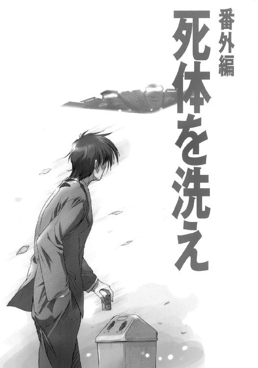

| イリヤの空、UFOの夏 その2 (電撃文庫) | |
| 秋山 瑞人 | |
| (2013) | |
本書（電子版）に掲載されているコンテンツ（ソフトウェア／プログラム／データ／情報を含む）の著作権およびその他の権利は、すべて株式会社ＫＡＤＯＫＡＷＡおよび正当な権利を有する第三者に帰属しています。
法律の定めがある場合または権利者の明示的な承諾がある場合を除き、これらのコンテンツを複製・転載、改変・編集、翻案・翻訳、放送・出版、公衆送信（送信可能化を含む）・再配信、販売・頒布、貸与等に使用することはできません。
あっちは慎ましやかなものだった。それにひきかえこっちはすごい。激辛エビコロッケバーガーと青リンゴのアップルパイとマンゴーバナナシェイクとフライドポテトのダブル、それに『この夏だけのスパイシーチキン』が12ピース。
絶対に食べきれない。
しかし夕子は容赦しなかった。どうせ金を出すのは水前寺である。が、水前寺は文句のひとつも言わずに財布を出し、カウンターに並んでいる誰もが振り返るくらいの声で、
「食欲旺盛だな浅羽くん！ 兄貴に爪の垢でも煎じて飲ませてやったらどうかねっ！」
レジのお姉さんにまで笑われた。思いきりにらみつけてやったけれど、水前寺は痛くも痒くもないという顔で、象にでも食わせるのかと思うくらいの無茶苦茶なオーダーを追加した。わしづかみにしたナプキンとみっともないほど山盛りのトレイを手に、水前寺のどでかいバスケットシューズの踵を蹴飛ばすようにして狭い階段を上る。一階は窓際のカウンター席だけ、階段を上がれば二階は禁煙席で三階が喫煙席。
兄と伊里野加奈が三階の喫煙席のすみっこにいることは、すでに確かめてあった。
涙ぐましい配慮だと夕子は思う。半端な時間だから客の入りだって多くはない。わざわざ三階まで上がらなくたって空いている席なんかそのへんにいくらでもある。が、だからこそ兄は三階の喫煙席を選んだはずだ。三階まで行けば一番空いているはずだから、くそやかましい子供連れが隣に座ったり同級生に出くわしたりする可能性を少しでも低くしたいから。
先を行く水前寺が狭い階段の途中で立ち止まり、二階から降りてきた二人連れの客に道を開けた。夕子も壁にぴったりと背中をくっつけ、水前寺の身体の陰に山盛りのトレイを隠すようにして二人を通す。水前寺のバッグから垂れ下がっているヘッドホンの片っぽがちょうど目の前にある。耳に突っ込んでみる。三階の喫煙席のすみっこから放たれている盗聴器の電波は、この場所からでも鮮明に受信できた。
兄が喋っていた。
──でもごめんね、なんだか変なことになっちゃって。映画途中で終わっちゃうし消防車来ちゃうし。ったく、サービス券なんかくれたってしょうがないよな。
沈黙。
──あ、あのさ。このへんの町ってああいうのにすごくうるさいんだ。映画館とかデパートとか駅とか、人が大勢集まる場所は特にそうだけど、ちょっと変な臭いがしたりとか怪しい鞄が置きっぱなしになってるとか、そんなことですぐパトカーや消防車来ちゃったりするしさ。
沈黙。
──そう言えば、映画終わっちゃうちょっと前に客席の後ろの方の席で走り回ってる人たちいたよね。何だったんだろあれ。
沈黙。盗聴器の集音範囲をかなり外れた位置から無闇に明るい女の声が近づいてくる。お待たせしましたあー、番号札四番で地域限定ＵＦＯピザをお待ちのお客さまあー。
水前寺は二階席の一番奥にある四人がけのテーブルにトレイを置いた。バッグの中に手を突っ込んで盗聴用レシーバーのチューニングを調節する。そして席に着くなり、夕子の言う「泣き虫女」の正体についての明快な答えを出した。
伊里野特派員は泣いていたわけではあるまい、と言うのだ。
「じゃ何してたって言うの。だって見たもん、お兄ちゃん珍しくハンカチなんか持ってて、」
「伊里野特派員がまた鼻血を出したのだろう」
「鼻血？」
ひとつめのハンバーガーにかぶりつきながら水前寺はもごもご説明する。
聞けば、伊里野加奈は入部したてのピカピカの新人であるらしい。初めて部室に顔を見せたのが木曜日の放課後。今日は日曜日だから、伊里野の新聞部員歴はまだ三日そこそこということになる。そして水前寺は、その三日そこそこの間に、伊里野が大した理由もなくいきなり鼻血を出すところを何度も見たという。
「──病気？」
水前寺は早くもふたつめのハンバーガーに手をかけた。
「かもしれん。──ただ、見ているうちにわかってきたのだが、どうやら感情が激しく高ぶったときなどに鼻血を出すことが多いようだ」
なんだそれ。
まるでマンガみたいな奴だと夕子は思った。水前寺はふたつめのハンバーガーの残り半分を一気に口に押し込み、ろくに嚙みもせずに飲み込んで、
「では次だ。伊里野特派員の入部届の件」
夕子はストローをくわえたまま面倒臭そうに説明する。兄の辞書の中に挟んであるのを見つけたこと、そこに書かれていた伊里野の名前、入部希望先、そして入部希望理由。
「なるほどな」
水前寺は喉の奥で笑いながらみっつめのハンバーガーに手を伸ばした。まったく見ているだけで腹がいっぱいになってくる。こいつこれから冬眠でもするのか、と夕子は思う。こんなによく食う奴は生まれて初めて見た。
「浅羽特派員がおれに見せなかったのも当然だ。──しかし浅羽くん、辞書に挟んであったということはつまり、はっきりと隠してあったわけだな、その入部届。バレないようにきちんと元通りにしておいただろうな？」
夕子はうなずき、
「あ、それとね、椎名っていうハンコが押してあった」
「ハンコ？」
「ほら、入部届の用紙って担任と顧問がハンコを押す四角があるでしょ。顧問の方の四角は空っぽだったけど担任の方に椎名って」
みっつめのハンバーガーにかぶりつこうとしていた水前寺の口が止まり、
「──椎名って、椎名真由美か？ 保健室の？」
「じゃない？ 他にそんな名前の先生いないもんうちの学校」
水前寺の目つきが遠くなった。一心に何かを考えているらしい。
が、夕子には「椎名」の印にそれほどの興味は覚えていなかった。伊里野加奈はきっと先生なら誰でもいいやと思って、一番話の通じそうな相手に捺印を頼んだに違いない──その程度に考えている。そんなことよりも、ゲリラ集団である新聞部への参加になぜ入部届など書いたのか、そっちの方が気になる。ひねった趣向のラブレターとしてあえて書いた、と見ることもできなくはないが、いくらなんでも奇をてらいすぎていると思う。
「ねえ」
「──ん？」
「新聞部ってまだ部じゃないんでしょ、なのになんで入部届なの？」
「ああ。それは、伊里野特派員が知らなかっただけだろう」
「何を？」
「だから、新聞部がゲリラ部だということを」
そんなはずがあるか、と夕子は思った。
そして、唐突に腹が立ってきた。
夕子はフィールドホッケー部員である。競技自体がマイナーなので部員も少ないから初心者でも選手になれる可能性が高いし、予選なしでいきなり県大会に出られる。ギーにそう説得されたのだ。が、マイノリティが抑圧を受けるのは世の常であり、グランドの割り当て面積ときたらアパルトヘイトも真っ青である。建前とは裏腹に、学校の部活動の待遇というのは決して公平ではないのだった。「うちの学校にそんな部あったっけ？」と誰かに言われるたびに夕子はくやしい思いをしてきたのである。それにひきかえ、新聞部の有名っぷりと言ったらただ事ではない。部員数わずか三名、伊里野を入れてもやっと四名、部室長屋の空き部屋を不法占拠して活動するゲリラ集団。そのくせ、園原中学校にはフィールドホッケー部のことを知らない奴はいても、新聞部のことを知らないような寸足らずはひとりもいない。その新聞部の長が目の前にいると思えば、夕子の虐げられた民族としての怒りは募った。そんなにゲリラがしたければテルアビブへでも行って地雷畑を耕しているがいいのだ。
小さな平手がテーブルを叩く、
「そんなの知らないはずないでしょ！ ニュースで見たもん子供が地雷を掘り出して川に投げ込んで魚を捕るって！ あんたそのへんどう思ってるわけ!?」
「な、何を言っとるのかね君は」
さらに嚙みつく、
「うちの学校の生徒が新聞部のこと知らないはずないでしょ!? だいたいゲリラ部のくせにいっつも大きな顔してずーずーしいのよ！」
水前寺は眉をひそめる。話が見えない。ひょっとしたら自分の方が何かとんでもない勘違いをしているのかもしれないという気がして、水前寺は念のために自分のコマをふりだしまで戻す。
「──ちょっと待ちたまえ浅羽くん。いいかね、我が新聞部が正しくは部でないことを、伊里野特派員が知らなかったとしても無理もなかろう」
「なんでよっ!?」
「転校してきたばかりだから」
そのとき、ふたりで半分こしていたヘッドホンの中で、それまでずっと沈黙しているばかりだった伊里野がついに口をきいた。
──なんでそんなこと聞くの？
──いや、その、だからつまりさ、あの榎本って人、自分では「伊里野の兄貴みたいなもんだ」って言ってたけどさ、ほんとに伊里野のお兄さん？ 河口が言ってた「自衛軍に勤めている兄」ってあの人のこと？ ほんとにずっと一緒に暮らしてたの？
沈黙。
──だってさ、ほら、あの人、いつも伊里野のこと「伊里野」って呼ぶだろ？ 兄妹なのに妹のこと名字で呼ぶのおかしいなと思って、前から気になってたんだけど、つまりその、
沈黙。
──あ、あの、へんなこと聞いてごめん、話したくないならいいんだ別に。
榎本？
水前寺はヘッドホンに中指をあてて耳をそばだてた。
伊里野には航空自衛軍士官の兄がいる、という話は水前寺も知っていた。が、「榎本」という名前は初めて聞いた。いくつかの疑問が浮かぶ。
ひとつ。ごく当たり前の兄・妹の関係なのだとすれば、「榎本」が伊里野加奈のことを名字で呼ぶのは確かに妙だ。「兄貴みたいなもんだ」とはどういう意味なのか。
ひとつ。そもそも浅羽直之は、伊里野加奈の兄の名前や、その兄が伊里野加奈を普段から名字で呼ぶなどということをなぜ知っているのか。浅羽直之はその「榎本」とやらに会ったことがある、ということか。だとすれば、いつ、どこで、どんな状況で会ったのか。
「──浅羽くん、『榎本』という名前に聞き憶えは──な、なんだねその顔は」
夕子は目を見開き、あんぐりと口を開けていた。声が裏返る、
「──転校生なの？」
「誰が？」
「──だから、あの伊里野加奈って人」
水前寺は「何をいまさら」という目つきをする。
夕子の頭の中で、すべてがようやく一本の線で結ばれた。
転校生がそう何人もいるとは思えない。
「じゃあ、じゃあもしかして、お兄ちゃんがシェルターに連れ込んだのって、」
水前寺は呆れた。
「はあ？ なんだ知らんのか？ いま君の兄上と一緒にいる彼女こそは過日のシェルター事件のもうひとりの当事者、伊里野加奈その人だ」
知らなかった。
普段から兄とは口をきかなくとも、毎日学校に通っていればいやでも耳にした。防空訓練中に「水前寺の腰巾着」がしでかしたという婦女暴行未遂事件の噂。夕子のクラスもその話で持ちきりだった。防空訓練のドサクサに転校生の女の子をシェルターに連れ込んで──
まさか、
あのへんな女が、その「転校生の女の子」だったとは。
水前寺が大笑いした。
「浅羽特派員から聞いていなかったのか？ 君ら兄妹は普段話もせんのか？ どうも話がおかしいと思っていたが、君はそんなことも知らずにあの二人をつけ回していたのかね」
ようやく笑い止むかと思えば水前寺は再び肩を震わせ、
「──まあそうか、事が事だしな。浅羽特派員も妹にいちいちそんなことは言わんかもな。しかし、さすがの君も噂くらいは耳にしているだろう？ 実に傑作だ、あの浅羽特派員が何と女子生徒をシェルターに連れ込んであ痛」
込み上げる笑いにうつむいていた水前寺の頭を、夕子はぐーでぼかりと殴った。
「な、何をするかっ」
夕子は耳からヘッドホンを引っこ抜いて席を蹴った。
「ら、乱暴はやめたまえっ、こら、」
そして夕子は水前寺の頭といわず背中といわず肩といわず、ぼかぼかぼかぼかぼかと拳骨の雨を降らせた。
「帰る！」
水前寺はあわてて立ち上がり、
「ちょ、ちょっと待ちたまえよ浅羽くん」
「はなしてよ！」
夕子が大声を出したそのとき、ヘッドホンから、
──どうしたの？ ワイヤーってなに？
危うく聞き漏らすところだった。
席から身を乗り出して夕子の手をつかんだまま、水前寺はぴたりと動きを止めた。ヘッドホンを耳に押しつけて一心に耳を澄ます。
「はなしてって言ってるでしょばかあっ!!」
夕子が水前寺の手を振り解こうとする。が、水前寺は瞬きも身動きもしない。潜水艦の聴音手のような真剣さで、ヘッドホンから聞こえてくる音にひたすら意識を集中する。そして、
──トイレならそこだよ。うわ、ちょっと待ってよ、どうしたんだよ？
椅子の足が勢いよく床をこする音、
氷の入った紙コップが床に落ちる音、
「バレた」
水前寺がつぶやく。
夕子が怪訝な顔をする。水前寺はやおら立ち上がってバッグをひっつかみ、夕子を引きずって走り出す。夕子はわけがわからず、
「なによ、どうしたの!?」
答えない、お構いなしに水前寺は走る。三階へと続く狭苦しい階段の途中で突然、ヘッドホンの中に「ざりっ」というノイズが走る。感度を失ったレシーバーのスケルチ回路がノイズを切り落とし、ヘッドホンは白紙のような沈黙に閉ざされた。もはや無駄だとは思いつつも、水前寺は足を止めてレシーバーのチャンネルを変更する。が、やはり無駄だった。バックアップの盗聴器が次々と潰されていき、しまいには靴底に仕込んだポジショントレーサーまでが応答しなくなった。
「──しかしあれだ、」
水前寺の顔に壮絶な笑みが浮かぶ。
「おれの周りにはどうにも、女性陣の方に優秀な人材が多いらしいな」
ようやく事態を察した夕子が、
「バレたって、盗聴器のこと？ 気づかれたの？」
「残念ながら」
と言いつつも、水前寺のその面は、少しも残念そうには見えない。
トイレに立った浅羽が戻ってみると、伊里野がテーブルに顔をうずめて何か書いていた。浅羽が「何してるの？」と尋ねるよりも早く、伊里野は口に人差し指を当ててナプキンを差し出した。
ボールペンで、こう書かれていた。
『ワイヤーがついてる。だまっていっしょにトイレにきて』
「──どうしたの？ ワイヤーってなに？」
伊里野がいきなり手を伸ばし、黙れとばかりに浅羽の口をふさぐ。驚いた浅羽は反射的にその手を振り払ってしまったが、伊里野は浅羽の手をむんずとつかんで先に立って歩き出す。
「トイレならそこだよ。うわ、ちょっと待ってよ、どうしたんだよ？」
伊里野がものすごい勢いで振り返り、また口に人差し指を当てて見せる。どうやら喋ってはまずいらしい──それは理解できたが、なぜ喋ってはいけないのか、なぜ自分がトイレに付き添わねばならないのか、まるでわからない。
スイッチが切り替わったかのように、それからの伊里野の行動は機械のように素早かった。
まるで、シェルターに引っぱり込まれたあのときのようだった。
伊里野は問答無用で浅羽を女子トイレに引きずり込んだ。トイレは狭くて薄汚くて、個室が三つに手洗いが二つあって、幸いにして誰もいなかった。伊里野は嫌がる浅羽を一番近くの個室に連れ込むと、手に持っていた小さな何かを便器の中に投げ込んだ。伊里野がすぐに水を流してしまったが、白くて丸い、洋服のボタンのような形の何かだった。
「いま捨てたのなに？」
「タンクに両手をついて」
言う通りにしないとただではおかない──そんな伊里野の目つきに気おされて、浅羽は言われるがままにタンクに両手をついて両足を広げた。背後から伊里野が両手で容赦なく身体じゅうを探る。外国の映画でお巡りさんがよくやる身体検査みたいだと浅羽は思う。伊里野は浅羽のズボンのポケットからサイフを抜き取って中身を調べ始め、すぐにカードスリットの中からさっきと同じような洋服のボタンを見つけ出した。便器に投げ捨てる。
「こっちむいて」
そうした。
いきなりＴシャツを胸の上まで一気にめくり上げられた。
「うわあっ！」
思わず声が出た。が、伊里野の表情はあくまでも真剣そのもので、裸にひん剝いた浅羽の上半身を裏も表もなめるように調べ、
「ズボン脱いで」
う、噓だろ!?
「早く」
そ、そりゃあぼくだってあのとき伊里野の胸見たけどさ、あ、あれはそうしろって言われてしかたなくやったことだし伊里野だって気を失ってたし！ ちょ、ちょっと待って!! パンツは、パンツはやめて!! いや─────────────────────っ!!
「ここかぁ───────────────────────────────────っ!!」
夕子を小脇に抱え、水前寺は三階のトイレに乱入した。
三階のトイレは男女共用で、ドアを開ければ即個室の一人用で、便器と手洗いがあるだけの逃げも隠れもできない狭苦しい空間で、中には誰の姿もなかった。そりゃあドアに鍵はかかっていなかったが使用者が鍵をかけ忘れることだってあり得るわけで、幸いにして中に誰もいなかったところを見ると、どうやら神様もたまには仕事をするらしい。
ぬう、と水前寺はうなる。
「ちょっとはなしなさいよ降ろしてよなに考えてんのよばかあっ！ 盗聴器がバレちゃったんならもうおしまいでしょこれ以上追いかけたってしょうがないでしょ!?」
いーやそうはいかん、と水前寺はつぶやく。
「──伊里野特派員。お手並み拝見だ」
はなせ降ろせとわめく夕子を小脇に抱えたまま、水前寺は回れ右をして走り出す。
見られた。
おまけに、鼻と鼻がくっつきそうな至近距離からわけのわからない質問をされた。最近だれか知らない人に声をかけられたりしなかった？ アメリカの本当の首都はどこ？ 家に無言電話がかかってきたことはある？ ウォーレン委員会のメンバーのうちで人間じゃないのは誰と誰？ ジュースの自動販売機の中に人がいるって思ったことはない？ ＭＪ－12文書が偽物である根拠を三つ挙げて。
四階の女子トイレを出た。浅羽は世にも情けない面でズボンのベルトを直し、伊里野にずんずん手を引かれて同じようなドアの並ぶ狭い廊下を走った。
突き当たりの裏口から非常階段に出た。
伊里野は裏口のドアに「仕掛け」を残し、浅羽の手を引いて赤錆だらけの階段を一気に駆け下りた。ビルの裏手は細長い駐輪場になっていて、三方を建物の背中に囲まれ、残る一方が表通りへと通じる路地に面していた。
駐輪場に落ちるビルの影の中で伊里野は足を止め、一秒だけ考えた。
「見張ってて。百秒でできる。帰ってちゃんと練習したから」
──百秒？ 練習？
浅羽がなす術もなく見守る中、伊里野はつぎはぎだらけのアスファルトにひざをつき、今日一日肌身離さず持ち歩いていた黒いバッグのファスナーを引き開けた。中にはラップトップ型のコンピュータと接続ケーブルと工具類と、浅羽には用途のよくわからない様々な機械が整然と詰め込まれていた。
そして、伊里野の目の前には、一台のスクーターがあった。
伊里野がナイフを抜いた。背中から。制服の下に手を突っ込んで。グリップにパラシュートコードがぎっちりと巻かれた、銃刀法違反まちがいなしの見るも恐ろしいナイフだ。素早く逆手に握り直し、スクーターの鼻っ面にブレードをどかりと突き立て、ＦＲＰのカウルをボール紙か何かのように切り開いていく。むき出しになったイモビライザーにコンピュータのケーブルを接続してコードブレイカーを起動、ミリタリーチップの演算速度に物を言わせて総当たり攻撃で暗号鍵をぶち破る。マイナスドライバーを鍵穴に突っ込み、無理矢理シリンダーごと回転させてメインスイッチをＯＮする。すべての道具を撤収し、シートにまたがって車体を両足ではさみ、力任せにハンドルを回してロックを破壊する。ブレーキを握り、イグニションボタンを押した。
エンジンは一発でかかった。
百秒はかからなかった。
「乗って！」
そのとき、ふたりの頭上で騒ぎが巻き起こった。浅羽が呆然と仰ぎ見れば、四階の裏口に残してきた「仕掛け」が作動していた。消火器がホースをヘビのようにのたくらせ、白煙を撒き散らして暴れ回っている。
「早く乗って!!」
二人乗りのスクーターが路地へと飛び出していく。消火剤の雲が引き、全身真っ白になった水前寺は非常階段の四階に立ち尽くして叫ぶ。
「見事であるっ!! 素晴らしいぞ伊里野特派員っ!! ジャーナリストたる者そうでなくてはいかんっ!! 改めて歓迎しよう、園原電波新聞へようこそっ!!」
その小脇に抱えられている夕子がけほんけほんと咳き込んで、
「ばかぁ───────────────────────────────っ!!」
と水前寺を罵倒した。
「帰るうっ！ はなして誰か助けてっ、人さらい────────────っ!!」
その罵倒はすぐに悲鳴に変わった。水前寺は夕子が目を開けていられないくらいの勢いで非常階段を駆け降り、駐輪場から路地を回り込んで表通りへと走り出る。走りながら横目で確認する、スクーターはすでに通りの50メートルほど先にいて、一方通行を逆走しながら全速力で逃げていく。水前寺はポケットから取り出したスキーマスクをかぶって顔を隠し、はなせ降ろせと暴れる夕子を抱えて三歩で通りを横断する。夕子がいみじくも言った通り、水前寺のその姿は誰がどう見ても人さらいそのものだった。
恥ずかしいの照れくさいのと言っている場合ではなかった。伊里野の腰に力いっぱいしがみついていないと振り落とされそうになる。伊里野が右へ左へと進路を変えるたびに、ただでさえ安定のよくない車体は恐ろしいほどに傾き、滑りやすいシートから尻がずり落ちる。伊里野の背中のナイフがほっぺたにごりごりして痛い。おまけに、風にあおられた伊里野の髪に顔面を洗われて周囲の様子がろくに見えなかった。スニーカーのすぐ下をアスファルトが目茶苦茶な勢いで流れていく、路面の白線が弾き飛ばされるように右へ左へと踊る。時速２００キロくらいで走っているのではないかと思う。
突然、背後でクラクションのブーイングが巻き起こった。
追手はすぐそこまで来ていた。30メートルほど後方、ごみ箱を轢き殺しながら路地から横っ飛びに飛び出してきたバイクが車体を傾けて遠心力を強引にねじ伏せる。かなり年季の入った感じのスーパーカブで、乗っているのはマスクで顔を隠した男。後ろに二人乗りで誰かを乗せているようにも見えたが、伊里野の髪が邪魔でそれ以上ははっきりしなかった。
──あの排気音、
浅羽は背後を振り返ろうとした。うっかりすると口にまで入ってくる伊里野の髪を払いのけて、耳に憶えのあるエンジン音の正体を確かめようとした。が、その途端に伊里野が身体ごと投げ出すように車体を左に倒し、スクーターは宙を飛ぶ勢いで歩道に乗り上げて狭い路地へと突入した。反対側の通りへ抜けて右折、再びスロットルを一気に開ける。クラクションの大合唱、腰を抜かして歩道にへたり込んだ老人が罵声とともに杖を投げる。
速い。
振り切れない。腕の違いか馬の違いか、スーパーカブは伊里野がひとつ角を曲がるたびに確実に距離を詰めてくる。
水前寺が叫ぶ。
「あま────────────いっ！ おらおらあどうしたどうしたぁ伊里野特派員っ！ そんなことで一人前のジャーナリストになれるかあ────────────っ!!」
夕子が叫ぶ。
「もういやあ────────────っ!! 止めて降ろして───────────っ!!」
スクーターを追う。夏の熱気が粘土のような重さで身体にぶつかってくる。街の中心からまだそれほど遠く離れたわけでもないのに、周囲には背の高い建物はひとつもなくなり、商店の装いは一挙に泥臭くなり、どうかすると住宅の隙間に畑や田んぼが姿を見せる。それらすべてが吹っ飛ぶように背後へと流れ去っていく。水前寺は笑い、夕子は止まれ降ろせと叫び、スーパーカブはじりじりと伊里野を追いつめる。伊里野がこのあたりの道にあまり詳しくないのは明らかだったが、その気になれば先回りできるチャンスがあっても水前寺はあえてそれをせず、背後霊のようにぴったりとケツに食らいついて伊里野を追い立てる。
スクーターが再び路地へと逃げ込み、路駐されている車の列を縫って県道へと抜けた。
伊里野は西から南へと進路を変えた。その意図を読み切って水前寺はにたりと笑う。この先には商店街、さらにその先には住宅街が続いている。派手なエンジン音を立てて住宅街を走り回り、住民に通報させてそのドサクサに逃げ切る腹だ。そうはさせない──踏み切りを突っ切り赤信号を突っ切り、止まれ降ろせと叫ぶ夕子を無視して水前寺はひたすらに追いすがる。ひとつ角を曲がるたびに道が細くなる。伊里野が路肩に止まっていたトラックをぎりぎりで避けようとして軽く接触し、スクーターの右のミラーが吹っ飛んで転がってくる。道がゆるい下り坂になり、行く手に町中を流れる川と橋と変則的な十字路と、
ノラ犬。
コケた。
その瞬間、水前寺にはそう見えた。
その瞬間、そう見えるくらいの勢いで、伊里野は車体を投げ出すように傾けた。無謀極まりない速度にタイヤのグリップが負けて後輪が流れ、それでも伊里野は十字路をぎりぎりで右折するコースにスクーターをねじ込もうとした。
水前寺が見ていたのは、そこまでだ。
あるいは夕子との二人乗りでなかったら、水前寺にも伊里野と同じことができたかもしれない。が、伊里野の極端な行動に気を取られて反応が遅れた。あわてて逃げようとしたノラ犬に進路をふさがれたことも災いした。結果としてスーパーカブはほとんど何もできないままに直進し、ガードレールに接触し、『魚釣り禁止』の立て看板を飛び越えて宙を舞い、夕子も宙を舞い水前寺も宙を舞った。
夕子は叫んだ。
「きゃあああああああああ────────────────────────────っ!!」
水前寺は叫んだ。
「しあわせでした────────────────────────────────っ!!」
夕暮れの近い夏の空は、美しかった。
スクーターが減速し、ようやく背後を振り返った浅羽は、流れのゆるい水面に立ち上がる壮絶な水柱を確かに見た。
「お、落ちた落ちた！ 川に落ちたねえ伊里野ってば！」
何を言うべきかもどうするべきかもわからなくて、浅羽はとにかく「落ちた」をひたすら繰り返した。スクーターを徐行させていた伊里野は片方だけ残った左のミラーをちらりと見て、再びスロットルを開けた。いきなりの加速に浅羽の「落ちた」が「うわあ」に変わる。
川ぞいの道を、二人乗りのスクーターが走り去る。

「──そ、それじゃ、園原基地に連れてってもらうためだけに、ほ兄ちゃんに無理矢理デートさせたわけ!?」
「それもある」
夕焼けを映したゆるい流れのど真ん中に、水前寺のスーパーカブが逆さまになって突き刺さっている。
水前寺と夕子は、コンクリートで固められた川岸の斜面にぼんやりと座っている。ふたりとも泥臭い水で全身ずぶ濡れだった。
「それも──って、他にまだ何かあるの？」
「──いや、これはおれの考えすぎかもしれんのだが、」
そう言って大の字に寝転がり、
「どうも気になるんだ。伊里野特派員には少し奇妙なところがある」
「どんな？」
水前寺は、一度大きく息を吸い込んで考えをまとめた。
「バスと電話だ」
「なにそれ」
「伊里野特派員は、毎朝バスで学校に来る」
「──それが？」
「見樽車庫発、園原基地経由、園原駅ゆきのバス。八時十三分に『園原中学校正門前』のバス停で降りる。帰りは同じ路線の折り返しに乗る」
「だからなに」
「夏休みの少し前まで、そんなバスは走っていなかった」
水前寺が何を言おうとしているのか、夕子にはまだよくわからない。
「園交バスは真っ赤っかの赤字経営だ。ど田舎の数少ない公共の交通機関だしジジババの足だからって名目で、例によって市がムダ金を捨てるごみ箱として使ってる。にしても、どうしてまた新しい路線を引かなきゃならんのかよくわからん。それに、路線を走ってみりゃすぐわかるんだが、どう見たって採算の取れるようなコースじゃないんだ。ほとんどが山道や農道ばっかりで、こんなところから客が乗るわけないって場所に真新しいバス停がばかすか立ってる。実際見ると異様だぞ、周りに家なんか一軒もない峠の道に待合室つきのぴっかぴかのバス停があるのって」
それは確かにちょっと気味が悪いだろうと夕子は思う。でも、バスの路線と伊里野加奈と一体何の関係が、
「それと電話。浅羽くん、君は確か、伊里野特派員が今日、駅前の待ち合わせ場所から映画館へ行く途中で電話をかけていたと言ったな」
「え？ あ、うん」
「伊里野特派員は電話好きだ。毎日二回、必ず電話をかける。午前中に一回と午後に一回、学校の正面入り口の公衆電話から。あそこには電話が三台あるが、伊里野特派員のお気に入りは右端の電話で、いつも必ずそこを使う」
夕子は初めて違和感を覚えた。
「──でも、あの電話、」
「そう。右端のはずっと前から故障続きだ。しかし、伊里野特派員が使うときにはなぜか調子がいいらしい。さて、伊里野特派員は一体どこに電話をかけているのか？ まったく喋らないしすぐに受話器を置いちまうし、どうも情報サービスのようなものを聞いているのではないかと思うんだが──」
「天気予報みたいな？」
水前寺がうなずく。
「番号はわかんないの？」
「だぶん＃０６２４だと思うんだが、まだ確信はない。あまり近くからのぞき見して気づかれてもまずいし」
「かけてみた、その番号？」
「もちろん。録音された女の声に、番号を確かめてもう一度かけ直せと言われた」
夕子はほんの少しだけ、恐いと思った。
思考が妄想の中に墜落した。たとえばセミの鳴く昼下がり、誰もいない廊下を夕子は歩いている。廊下の行き着く果てには校舎の正面入り口があって、伊里野加奈がこちらに背を向けて受話器を耳に当てている。その足元にはバレーボールが転がっており、伊里野加奈は人間には不可能に思える角度で首を右に傾けており、受話器から漏れる女の声は夕子の耳にも微かに聞こえてくる。お客さまのおかけになった電話番号は現在使われておりません、番号をお確かめになってもう一度おかけ直しください。今すぐ逃げようと夕子は思う。しかし身体が動かない。やがて、伊里野加奈の受話器から漏れ聞こえていた女の声がこんなことを言う──背後をお確かめになってもう一度おかけ直しください、お客さまの背後に誰かがいます。突然、伊里野加奈が獣のように振り返る。顔面から首にかけて、何十枚もの絆創膏がびっしりと貼り付けられている。目も鼻もないその顔に唯一残された口だけが耳まで裂けて夕子を
「この電話の話はバスの話ともからむ。さっき言った新しい路線の新しいバス停には、不思議なことに必ず電話があるんだな」
水前寺の声に救われた。
夕子は、泥臭い水で全身ずぶ濡れの現実へと引き戻された。コンクリートで固められた川岸の斜面に座っている、隣には水前寺が大の字に寝転がっている。
「場所によって電話ボックスだったり待合室におかれた公衆電話だったりと色々だが、共通点がひとつある。どこのバス停の電話も決まって調子が悪いんだ。まったく通じなかったり、通じてもコインやテレカが戻ってこなかったり」
もう夕方のこの時間に、商売熱心な物干し竿の行商が川向かいの道をゆっくりと流していく。どれでも二本で千円、古くなった物干し竿の下取りもいたします。
「まだある。やはり電話にまつわる話だが、伊里野特派員はしょっちゅう校内放送で職員室に呼び出される。君も聞いたことがあるだろう？」
夕子は記憶を探ってみるが、普段から自分に関係のない放送など気にもしないので、あまりはっきりと憶えてはいなかった。
「伊里野特派員は毎回、誰それから電話が入っているから至急職員室まで来い、という呼び出され方をする。今のところ、この『誰それ』の部分には三人の名前が挙がっている。田中と鈴木と佐藤だ。そういう名前なんだから仕方ないだろうと言われればそれまでだが、何かの暗号のように聞こえなくもない。で、伊里野特派員は、この三者からの電話を受けるとかなり高い確率でそのまま早退する。一体どこへ行くんだろうな？」
頭が混乱し始めている。
ゆうべから園原駅周辺で飛び交っていたらしい謎の暗号通信。
映画館に現れた挙動不審の二人組。
伊里野加奈の入部届に押されていた『椎名』の印を、自分は確かにこの目で見ている。うちの学校の職員で椎名といえばひとりしかいない。黒部のオバアと交代でやってきた養護教諭の椎名真由美。朝礼で田代のハゲにそう紹介されて、ひとこと挨拶をとマイクを渡されたらいきなり英語の歌を熱唱して全校の度肝を抜いた。あれもやはり夏休みの少し前。水前寺の言う、怪しいバスの路線が新設された時期と同じころ。
「──幽霊に見えてんのよ、枯れススキが」
ばかばかしい、と夕子は思った。
そういう目で見れば何だってそう見える。軽トラで住宅街を流すタケヤサオダケは北のスパイかもしれないし、改札口にいる駅員は電車の爆破を企むテロリストかもしれない。
「かもしれん」
が、水前寺はあっさりとそう認めた。
「それはいいんだ別に。面白ければ、枯れススキだろうがドライフラワーだろうが」
むくりと上体を起こし、川の真ん中に突き刺さっているスーパーカブのタイヤめがけて小石を投げる。
「ただ、そんじょそこらの枯れススキとは少しわけが違うのかもしれない、とは思ってる。浅羽特派員をけしかけて普段と違う状況に誘い込めば、何か起こるんじゃないかっていう期待はあった。その結果はまあ『多少の収穫はアリ』ってところだが、ちょっと慎重にやりすぎたな。もっとしつこく追い回した方がもっと色々な尻尾を出してくれたかもしれん」
うそつけ、と夕子は思う。それまでの尾行はともかく、最後の追いかけっこは絶対、毛虫のたかった枝で女の子を追いかけ回すのと同質の行動だったと思う。
「──それと浅羽特派員だが」
幾つ目かの小石がようやくタイヤに当たった。
「あいつはあいつで、どうも何か知っているようなフシがある。最近どうも様子がおかしい。何か隠しているというか腹に一物あるというか」
そこで水前寺はひひひひひひひひひと笑った。
「──まあ、例のシェルターの一件からまだ間もないしな。なにせ上着をはだけた伊里野特派員の上にまたがっていたというしな。伊里野特派員の名前が出ただけでビクつくのもアイツらしいと言えばまあそうだな」
夕子は思い出す。
防空訓練の翌日。夢中で消した黒板の文字。机の上の下手くそな落書き。
「どわあっ!?」
夕子に背中を蹴り飛ばされて、水前寺はコンクリートの斜面を転がって顔から川に落ちた。
「い、いきなり何をするか貴様あっ!!」
泥まみれになった水前寺を真っ向にらみつける。頭が煮えている。口ゲンカは苦手だ。悔しいという気持ちだけが空回りして、気の利いた啖呵など何も思いつかなくなってしまう。後になってからああ言ってやればよかったこう言ってやればよかったと臍を噬むのだ。
叫んだ。
「ばかあ───────────────────────────────────っ!!」
まるで言い足りない。
「帰るっ！」
しかし、このまま角突き合わせていれば最後には必ず言い負かされる。それが恐くて、言うだけ言い捨てて逃げようと思った。回れ右、断固とした態度で最初の一歩を踏み出したそのとき、背後から伸びてきた大きな手に襟首をぐいとつかまれた。
水前寺は、相手が宇宙人だろうが女の子だろうが容赦はしない。
つかんだ襟首を力任せに引き寄せ、泳いだ足元に踵をぶち込み、足場の傾斜で身長差を相殺して、水前寺は夕子を地蔵背負いでぶん投げた。一回分の悲鳴を上げる間もなく、ドブっぽい水音とともに夕子は頭から川にたたき込まれた。水前寺は会心の手応えに思わずガッツポーズを決め、がっはっはっはーと晴れがましく笑う。
「おやおや大丈夫かね浅羽夕子くん！ 川っぺりでは足元と口元には気をつた方がぶっ!?」
しぶきを上げてすっ飛んできた夕子の靴が水前寺の顔面を捉えた。水前寺は盛大な水柱を上げてひっくり返り、盛大に泥水を吐き出しながらすぐさま起き上がり、
「婦女子と思って手加減しておればつけあがりおって!! もう勘弁ならん!!」
気の利いた啖呵など、何も思いつかなかった。
もう何も考えられない。もうひとかけらの勇気さえも要らない。逆光の中の巨体を、20センチ以上の身長差を恐いとすら思わなかった。腰まである泥水を跳ね飛ばし、気合とも泣き声ともつかない叫び声を上げて夕子は水前寺に突っかかっていく。水前寺が真っ向受けて立つ、跳躍する、怪鳥の如き裂帛の気合、
「食らえ胡蝶蹴りっ!! ほあちょ────────────────────────っ!!」
夏の飛び蹴り男が、夕暮れの空を舞う。
伊里野は水上神社の裏手にある雑木林にスクーターを乗り捨て、浅羽の手を引いて急ぎ足でその場を離れた。蚊に食われながら田んぼの中の農道を黙々と歩き、見るからに祟りそうな地蔵尊の森を通り過ぎ、美影線のガードをくぐり、浅羽がへばるくらいのペースで機械のように歩き続けた。
「──ねえ、もう平気だよ、ここまで来れば大丈夫だよ」
大丈夫かどうかは知らないけど少し休ませてよ、というのが本音だった。
が、浅羽のそのひと声で、伊里野のスイッチは唐突に切れた。
伊里野の歩みは途端に遅くなり、ついには道ばたに立ち止まってうつむいてしまった。本当にいきなりだったので、浅羽は伊里野が腹痛でも起こしたのかと思い、
「だ、大丈夫？ 具合でも悪いの？」
答えない。浅羽がのぞき込むとそっぽを向いて、真っ赤になった顔を隠そうとする。
「──あの、あのね、」
蚊の鳴くような声だった。
「ワイヤーをひとつ見つけたら、ぜんぶ調べないとだめなの。ひとつだけじゃないから。他にもぜったいあるから」
どうやら、トイレに引っぱり込んで裸にひん剝いたことを弁解しているらしかった。
聞けば、『ワイヤー』というのは盗聴器のことらしい。そのワイヤーが浅羽にはいくつも仕掛けられていた、だから自分はああいうことをした、仕掛けたのが誰なのかはわからないけれど、たぶん北の工作員だと思う──伊里野はそういう意味のことを、やっと聞き取れるくらいの声で、実に下手くそな話し方で説明した。
「──あのさ、」
しかし、浅羽には浅羽の見解があった。昨日の夜、定食屋『しみず』で行われた秘密の作戦会議。部長のおごりだった。あのとき自分はトイレに行くために何度か席を立った。
おまけに、自分たちを追いかけてきたあのスーパーカブ。聞き憶えのある排気音。
ため息。
予想すべきことだったと思う。
それにしても、盗聴器を見ていきなり北のスパイを疑う伊里野もすごいと思う。
「もういいよそれは。もういいからさ、」
行こうよ──そう促しても、伊里野はなかなか歩き出そうとしなかった。浅羽はちらりと苛立ちを覚え、腕時計を見て、こういう言い方をした。
「いま六時だけど、時間大丈夫？」
伊里野がようやく、帰らなきゃ、とつぶやいた。
二人で歩いた。田んぼや畑ばかりだった周囲の光景の中に家がぽつぽつと現れ、夕暮れの農道はやがて、真新しい建売住宅が立ち並ぶ一帯を碁盤の目に区切る道のひとつになった。どの家もいやらしいくらいに同じに見える。行けども行けども貧相な街路樹は途切れることなく続き、どの電柱にも決まって同じレンタルビデオ屋の捨て看板がくくりつけられている。
くたくたに疲れていた。
半歩先を歩く浅羽は、ひと言も口をきかなかった。
半歩後ろを歩く伊里野が、さかんに浅羽の様子を気にしていることにも気づかなかった。
やがて、行く手に大きな公園とバス停が現れた。
バス停の標識には「久川四丁目」とあり、くずかご代わりの一斗缶と乳製品メーカーの広告が入ったプラスチック製のベンチが置かれている。浅羽は額の汗をぬぐい、標識に針金でくくりつけられている時刻表を確認した。
園原基地経由の見樽車庫ゆき、六時五十七分。
あと三十分ほどで、このデートも終わりだ。
ほっとしている自分が心のどこかにいた。
公園を見渡す。入り口に看板が出ている。『リバーサイドこども広場』というゴシック体の下にカッコつきで『園原市久川地区第七避難所』と書かれている。フェンスで囲まれた敷地は異様なくらいに広く、原色のペンキで塗装された様々な遊具があり、野球もできればヘリも着陸できるグランドがあり、屋根のついた水飲み場があり、豪勢な造りの公衆便所があり、うっかりすると見落としてしまいそうなシェルターへの入り口がある。
子供の姿は、まったくない。
珍しいことではなかった。「カッコつきの公園」はどこでも大抵そうなのだ。防空戦略上の都合が最優先で、その地域に子供が多いか少ないかなどということは端から考慮されずに作られるからである。この種の公園が園原市には無数にあって、「ガキの数よりもブランコの数の方が多い」とは、園原市の住人がオラが町を揶揄するときの常套句のひとつだった。
「中で待ってようか」
バスを待っている間、ふたりでブランコに乗る。
我ながらいいアイデアだ。疲れた頭で浅羽はそう考えた。
部長のせいで今日のデートは目茶苦茶になってしまった。無論、自分が部長を一方的に責めることなどできない。そもそも部長が言い出さなければこのデートはなかったわけだし、その裏に不純な動機が隠れていることも自分はすべて承知の上で話に乗ったのだから。
それでも、せめて最後くらいはきれいに締めようと思う。
そう思って、ブランコを指差して、横目で伊里野の反応をうかがった。
伊里野の表情が凍りついている。
「どうしたの？」
何かいるのかと思って公園を振り返った。何もいない。
「──ねえ、中にも座るところあるしさ、ここで待ってるより」
そこで浅羽は言葉をなくした。
伊里野がまた鼻血を出している。
伊里野は少し左に首をかしげ、目を見開いて公園を見つめていた。筋肉が硬直しているのが傍目にもわかる、細い首筋が不自然な力みに震えている。あごを伝った鼻血が学校指定の靴に滴り落ちる。
何かつぶやいた。英語のようだったが、浅羽には聞き取れなかった。
突然、糸を切ったように全身の緊張が解けて、伊里野の身体が左に倒れかかった。
浅羽があわてて抱き止める。
夢中で伊里野の名前を呼ぶ。
「──だいじょうぶ、へいき、」
その言葉の通り、伊里野はどうにか自分の足で立ち、ポケットティッシュを取り出してのろのろと鼻血をぬぐった。
「ほ、ほんとに平気？ とにかく座った方がいいよ、ほら」
とにかく日陰で休ませよう、そう思って、浅羽は伊里野の手を引いて公園の中へ入ろうとするが、歩道の敷石と公園の遊歩道との境目で、伊里野はまるでそこに結界でも張られているかのように一度立ち止まった。が、浅羽に何度も促されて結局は公園に足を踏み入れ、水飲み場にあるコンクリート製のベンチに腰を下ろした。
「あの、」
「もうだいじょうぶ。ほんとに」
そうは思えない。さっきの様子は尋常ではなかった。
「でもさ、今も顔色よくないし、」
伊里野は無言。
「ねえ、もし具合が悪いんだったら誰かに電話して迎えに来てもらうから、」
そこで浅羽の言葉は潰えた。
結局、自分が本気で心配して何を尋ねても、伊里野は何も答えてくれないのだ。
今日一日、伊里野には本当に色々なことを尋ねた。しかし、伊里野はどこまでもいつもの伊里野で、肝心なことには何も答えてはくれなかった。いつものことだったはずなのに、それが今日の浅羽にはひどくこたえた。なにしろ今日はデートなのだから、普段と違う一面を見せてくれるのではないか、という期待が心のどこかにあったのだろう。
そのデートも、もうすぐ終わる。
ため息が出た。
疲れていた。
「──ごめん。答えてくれないんだよね、どうせ」
伊里野が息を吞む音が聞こえた。
言い過ぎた、そう思った。
取り返しのつかないドジを踏んだ。「ごめん」はともかく「どうせ」はまずい。疲れのせいで頭が回っていなかった。考えなしのひと言がスキだらけの頭からこぼれ落ちてしまった。
「あ、違うんだその、立ち入ったこと聞いちゃったなと思って、」
浅羽がしどろもどろになって懸命の言い訳を始めたそのとき、どこかでセミが鳴き始めた。
「約束する？ 誰にも言わないって」
それは、浅羽の懸命の言い訳を容易に断ち切るほどの、伊里野の口から出たとは思えないほどの強い口調だった。伊里野は相変わらずうつむいている。が、見開かれたその目に普段とは違う力がこもっている。スカートを握り締めた両手をじっと見つめている。
「ぜったい、ぜったい、ぜったい誰にも言わないって約束できる？」
セミの鳴き声がじわじわと大きさを増していく。夕暮れにはまったく似つかわしくない、人の身体から汗を絞り取るような鳴き方をするセミだった。
「一回しか言わない。質問するのもだめ。具体的な地名や日付は言えない。それでもいい？」
攻守は瞬く間に逆転していた。
浅羽は完全に吞まれていた。ビビっていた。伊里野は今までずっと、本当はしたい言い訳もせずにひたすら唇を嚙み締めていたのかもしれない。首を横に振るのなら今しかない。「ごめん」ではすまない、「どうせ」はもう通用しない。ここから先に踏み込むのならば、伊里野と同じ覚悟を決めなくてはならない。
浅羽は、首を縦に振った。
「──わかった、約束する。けど」
「訓練中に仲間が死んだの」
夕子は思い出す。防空訓練の翌日。字が間違っていたことまで憶えている。
浅羽の兄貴は変熊兄貴。
朝、教室の後ろの黒板いっぱいにそう書かれていた。怒り狂ったギーが織田に食ってかかった。犯人は織田に決まっていたからだ。水前寺が教室に挨拶にやって来たあのときも、バカでスケベでお調子者の織田は誰よりもしつこく夕子をからかっていたからである。ギーに問い詰められるまでもなく、織田は黒板の文句を書いたのが自分であることを認め、ギーの振り上げた拳を大げさに怖がって女の腐ったような悲鳴を上げた。夢中で黒板の文字を消して席に戻った夕子は、自分の机にチョークで描かれた下手くそな落書きに気づいた。下手くそすぎて、吹き出しの中の「いやーんお兄ちゃんのえっちー」という文字を読むまでは、一体何が描かれているのかわからなかった。そして、気がついたときには夕子は織田の目の前にいて、ニキビだらけの顔面にぐーを入れていた。ダウンするまでにもう三発入れた。ギーに止められ、先生が来て、床にたれた鼻血を掃除させられた。帰りに寄ったコーヒースタンドで、ギーがなぐさめにもならないことを言った。
──あいつさあ、夕子に気があるんだよ。
宇宙人だろうが女の子だろうが容赦はしない。水前寺はそういう差別はしない。
ことによると、区別もしていないかもしれない。
「どすこお───────────────────────────────い!!」
夕子は、ぼっかぼかにやられた。
でかい靴底で顔ぜんぶを埋め尽くされるような蹴りをもらった。川下の浅瀬に倒れ込んで底まで頭が沈み、すぐさま両足をつかまれてジャイアントスイングで振り回され、今度は川上の深みに放り込まれた。
どうにか立ち上がった。
立ち上がるのがやっとだった。
ところが、水前寺も川の中に倒れていた。ジャイアントスイングで自分も目を回したらしい。水死体のように泥水に浮いていたその身体が突然ざばんと起き上がり、
「おのれ味な真似をしおって、もうその手は食わんぞ！ 直ちに覚悟せよ、ドブ川に洗濯ばーさんはおらんからな！ 脳内お花畑をスキップしながら岬沖までどんぶらこだ!!」
拳に息を吐きかけて水前寺が立ち上がる。が、どうやらまっすぐに歩けないらしい。三歩ごとにかっくんかっくんと軌道修正をしながらゆっくりと近づいてくる。
もう足が前に出ない。腕も上がらない。
川の水とは違うもので視界が滲んでいく。
悔しいという気持ちだけが空回りする。古傷の中に埋もれていた記憶がこぼれ落ちていく。ギーの怒鳴り声と織田の笑い声が、「浅羽の兄貴は変熊兄貴」と「いやーんお兄ちゃんのえっち」が、兄を追い出した部屋でひとり兄を呪った夜が、ウイルス兵器の予防注射と意地悪な高さの飛び箱が、いいことなどひとつもない名字と出席番号が、
わざわざ教室まで挨拶にやって来た水前寺の晴れがましい笑顔が、
もう百年も昔のことに思える、どちらもまだ小学生だったころの、庭先に椅子を出して髪を切ってくれた兄の手の感触が。
泣き声で叫んだ。
「ほ兄ちゃんは変態じゃないもん!!」
拳の射程に夕子を捉える一歩前で、水前寺は立ち止まった。
「あ？」
「ぜんぶあんたのせいよ!! あんたのせいでほ兄ちゃんがおかしくなっちゃったのよ!!」
水前寺は一瞬だけ考えて、
「──誰がそんなことを言っとるんだ。女とふたりっきりでシェルターの中にいて手も足も出んような奴の一体どこが変態か」
「手も足も出なかったなんて、どうしてそんなことわかるのよ!?」
「ではなぜお前はそう思う？ みんながそう噂しているからか？ 妹のくせして自分の兄貴がどういう奴かもわからんのか」
水前寺はその場にざぶんと座り込んであぐらをかき、
「ったく。どこに引っかかっているのかと思えば」
手首で口元をこすり、頰の裏側を舌で探って血の混じった唾を吐き飛ばし、
「──いいか、よく考えろ。そもそもあの腰抜けにだな、女を押し倒して上着をひん剝いてマウントポジションを取るなどという大それた真似ができると思うか？」
「ほ兄ちゃんは腰抜けじゃないもん!!」
「あのなあ、お前、一体どういう兄貴だったら満足なんだ？ スキあらば女を押し倒せる兄貴か？ それとも、逆立ちしてもそんなことはできない兄貴か？」
夕子は答えなかった。ずずっと鼻水をすすった。
「まあおれが見るところでは浅羽特派員は完全に後者だな。女にすけべえなことをするなど夢のまた夢、世界中の時間を止めて透明人間になる薬を飲んでも無理だ。というわけで、シェルター事件に関して巷間囁かれている噂はまったくの事実無根。あの浅羽特派員にそんなことができるはずがない」
「でも、でも見たっていう人がいっぱいいるもん！ ほ兄ちゃんが転校生を押し倒して乗っかってたって、実際に見た人が言いふらしてるんだもん！」
「そう見えたというだけだ。きっと、あの腰抜けがそこまでやらねばならん事情でもあったんだろう」
「何よ事情って!?」
水前寺は夕子を小馬鹿にするように鼻を鳴らした。
「おれに聞いてどうする。なにせこちとら枯れススキが幽霊に見える男だぞ」
「ススキでも幽霊でも何でもいいからっ!!」
水前寺はため息を吐き、ざぶりと片ひざを立てて頰杖をついた。
「──浅羽特派員が、防空訓練のドサクサに転校生の女の子をシェルターに引っぱり込んで、けしからん行為に及ぼうとしたが未遂に終わった。お前が聞いている噂はそんなところか？」
涙をぬぐいながら夕子がうなずく。
「誰から聞いた？ クラスの友達か？」
夕子が再びうなずく。
「どうせまた聞きだろう。その友達も別の誰かからそんな話を聞いたというだけで、事件の一端を直接目撃したというわけではあるまい。違うか？」
夕子は三たびうなずく。まだ廊下でカメになっているときに訓練中止の放送が流れて、自分たちのクラスは担任の指示で教室に戻された。だから、シェルターのハッチが開いたときにその場にいた者は、自分たちのクラスにはひとりもいない。
「伊里野特派員にまつわる不審な点が気になり始めてからだが、おれはシェルター事件に関しても独自にヒミツの調査を行っている。実際に事件を直接目撃した奴からも情報を集めた。断っておくが、浅羽特派員から直接話を聞くようなことはしていない。事ここに至っては、奴もすでに伊里野特派員の謎を構成する一要素だからだ。おれが嗅ぎ回っていることを伊里野特派員にもらすかもしれんし、それでなくてもあいつはヒミツには向かん。すぐ顔に出るからな」
尾行対象をバイクで追いかけ回していた奴の言うセリフか、と夕子は思ったが黙っていた。やはり本人の言う通り、水前寺は「面白ければそれでいい」のだろう。真相の探求が面白いうちは全力でそれをやるが、他にもっと面白そうなことを見つけると、すべての興味がすぐさまそっちに移ってしまうに違いない。
「では、ヒミツ調査の結果わかったことその一。決定的な相違点。巷の噂では浅羽特派員が転校生をシェルターに連れ込んだということになっているが、真相はその逆だ」
泣きべそが一発で引っ込んだ。
「──え」
「浅羽特派員が、伊里野特派員に、引っぱり込まれたんだ。確かだ。二年四組の奴らが見ている。お前も聞いたはずだ、あのとき中村のバカが無警告の一次警報を鳴らしただろう。伊里野特派員は、自衛軍士官の兄と一緒に長いこと外国の軍事基地で暮らしてきたらしい。度肝を抜かれただろうな。パニックに陥った伊里野特派員は夢中でシェルターに駆け込んだ。廊下でカメになっている連中に向かって大声で何か叫んでいたという話もある。『そんなことをして何の役に立つ』とか、『死にたくなかったら一緒に来い』とか」
水前寺の指がぴんと立つ、
「疑問点その一。伊里野特派員は、閉鎖されていたはずのシェルターのハッチをどうやって開けたのか？」
声がもれた。言われて初めて気がついた。兄が転校生をシェルターに連れ込んで云々、噂は簡単にそんなことを言う。が、そもそも兄があのハッチをどうやって開けたというのか。
「あのシェルターは中央から、つまり園原基地から直接制御されている。手動での操作ができるとすればたぶん、制御母線からの信号が途絶したときくらいだろう。お前の兄貴を変態呼ばわりしている連中は、こういうことはあまり気にならんらしいな」
二本目の指が立つ、
「疑問点その二。シェルターに駆け込んだ伊里野特派員はなぜ、他でもない浅羽特派員を道連れに選んだのか？」
「──それは、」
入部希望理由、浅羽がいるから。
水前寺は夕子の顔をじっと見つめてにたりと笑い、
「なんだその不満げな顔は。──まあいいさ、そういう理由なら。ただ、それ以外にも理由があるのかもしれんし、疑問点その一と並ぶ今後の、」
水前寺が突然口をつぐんだ。
さっきのタケヤサオダケがまた戻ってきた。二本で千円の物干し竿を積んだ白い軽トラが、川向かいの道をさっきとは逆方向に流していく。
「──どうしたの？」
水前寺は西日に目を細め、徐行する軽トラをじっと見つめている。が、やがて、
「──いや、いい。では次、浅羽特派員のマウントポジションについて。これには多くの目撃者がいる。だが、服をはだけた女の上にまたがっていたからといって、必ずしもワイセツな行為が行われていたとは限らんだろ？」
「じゃあ、なに？」
水前寺は鼻から息を吐いて、
「言うまでもないが、シェルターの中で一体なにが起こったのか、その正確なところは当事者のふたり以外には知り得べくもない。これより以降は推測というよりむしろ想像になる。そのつもりで聞くように」
夕子はうなずく。
「応急処置だ」
夕子の目が丸くなる。
「なんで!? どうして？」
「伊里野特派員はすぐに鼻血を出す。昼メシはたいてい購買部のパンと牛乳ですませているようだが、食べ終わった後にいつも大量の薬を飲む。詳しいことはまだわからんが、何らかの身体的なトラブルを抱えていることは間違いないと見ていいだろう。その伊里野特派員がシェルターの中で何らかの発作に見舞われたというのは、それほど突飛な考えではないと思う」
「──それで？」
「シェルターの周囲にはハッチのロックが解除される前から救急車も待機していたようだし、例の椎名真由美、あいつもうろちょろしていたらしいな。いいか、おれの想像はこうだ」
水前寺は身体の後ろにばしゃんと両手をつき、胸を開いて背伸びをした。
「まず、伊里野特派員がシェルターの中で発作を起こす。意識を失ってばたんきゅー。浅羽特派員大あわて。とにかく外部と連絡を取ろうとして、園原基地との直通電話で緊急事態を知らせる。しかし一度閉鎖したハッチはすぐには開かない。事態は一刻一秒を争う。そこで、園原基地の誰かが浅羽特派員にやるべきことを指示する。人工呼吸をやれと言われたかもしれんし、心臓マッサージをしろと言われたかもしれんし、心臓にアドレナリンを注射しろと言われたかもしれん。浅羽特派員は小便をチビりそうになりながらもすべて言われた通りにした。だから服がはだけていた。だから伊里野特派員の身体の上にまたがっていた。で、度胸一発さあやるぞというときに、あるいはやれやれこれでひと安心というときに、いきなりハッチが開いて外にいた全員にその姿を見られた」
納得がいかなかった。
真相がもし水前寺の言う通りならば、いくらなんでも、実際にその場で見た人には兄が何をしようとしていたのかくらいはわかったはずだと思う。
が、
「そんなもんさ。もちろん、その場にいた全員が同じものを見たはずだ。ところが人間ってのは自分の見たいものしか見えないから、飛行機雲がＵＦＯに見えるし自分の影が幽霊にも見えるし、千円札が鼻息でひらひらすれば超能力かと思う。おまけに、実際に噂がリレーされていくときの語り手になるのは一次目撃者以外のその他大勢だから、話の内容だって無責任にどんどん変わるし、話し手にとってあまり興味のないディティールはみんな踏み潰される。元になった事件が何であれな、噂っていうレールに乗って語られ始めたら、最終的にはみんな『語るに易く聞いて面白い話』になっちまうのさ」
そこで水前寺は夕子をずばりと指差す、
「おい信じるなよ、責任もてんぞ。以上はすべておれの想像だからな。あの腰抜けが暴行未遂をやらかしたなんて与太よりは、そっちの方がおれ的にはまだマシだって程度だ」
夕子がまたふくれた。
「お兄ちゃん腰抜けじゃないもん」
「いーやあいつは腰抜けだ。まったくもって不甲斐ない。ちゅーさえすればこっちのもんだとあれほど言ったのに」
夕子は右向け右をして川に背を向けた。
「帰るっ！」
水前寺がざばりと立ち上がった。
「ばいばい」
夕子はざぶざぶと川から上がる。肩をいからせてコンクリートの斜面を上る。不意に立ち止まり、川に背を向けたまま、両の拳を握り締めて叫ぶ。
「女の子が帰るって言ってんだからせめて送るよくらい言ったらどうなの!?」
「んだとこの」
水前寺はうるさそうに斜面の上の夕子を見上げる。
「びしょ濡れのままひとりで帰るの恥ずかしいでしょ！ あんたのせいなんだから責任とってあたしが家につくまで一緒に恥かきなさいよ！」
傷だらけの顔で振り返り、夕子は水前寺をにらみ降ろした。
水前寺は川の中から夕子を見上げた。その顔にもいくつか痣や傷があった。
「──んじゃあ、びしょ濡れついでにバイク引っぱり上げんの手伝え」
夕子はむっとする。が、斜面を降りてざぶざぶと川に入った。
夕暮れは深まりつつあった。
「しかしあれだ、送っていくのはいいが、」
「大丈夫よ。家の前まででいいから。もし誰かに何か言われたら街でヤンキーにからまれてケンカになって、十六人目をやっつけたところで力尽きて川に放り込まれたって言うから」
「じゃあおれは裏路地で危うくＵＦＯに連れ去られそうになって、迫り来る宇宙人どもをちぎっては投げちぎっては投げ、激闘五時間の末に力尽きて川に放り込まれたことにする」
うん、と夕子はうなずき、
「それにたぶん家には誰もいないと思う。お兄ちゃんが先に帰ってなければ。父さん組の会合に行くって言ってたし、母さん少林寺の日曜クラスにも出てるから」
「!! てめーさてはそれか！ ったく、こいつ何かかじってやがんなと思ってたんだ」
「けどまだ始めて半年くらい。母さんにくっついてときどき道場に行くだけ」
「しかしまだまだ甘いな。オレ様の敵ではない」
「なにそれ！ だいたいねーあんたいっつもあーなの!? 女の子ぐーで殴るの!?」
「は。見下げ果てた奴め。適当に手加減された挙げ句に負ける方がよかったってか」
「負けてないもんっ!!」
「これだから婦女子は。憶えとけ、泣いたら負けで泣かしたら勝ちだ。ケンカの不文律だ」
「泣いてないもんっ!! 婦女子とか不文律とか関係ないもん!! まだ勝負はついてないんだから、また日を改めて決着をつけるんだから、逃げたら負けなんだから!!」
ふたりがかりで、スーパーカブをどうにか道の上まで引っぱり上げた。
夕子が先に立って歩く。水前寺がカブを押してその後に続く。
「聞き忘れてたんだけど」
「ん」
夕子は歩きながら振り返り、スーパーカブのカゴに突っ込んである水前寺のバッグを指差す。
「それ、中に無線機とかコンピュータとか入ってるんでしょ？ びしょ濡れになっちゃったけど大丈夫？ 映画館の二人組の写真を撮ったカメラもその中？ ちゃんと撮れてる？」
「ああ、バッグは防水だからたぶん大丈夫だ。あの二人組がちゃんと撮れたかどうかは怪しいもんだが」
「もうひとつ聞き忘れてたんだけど」
「ん」
夕子が立ち止まり、水前寺が立ち止まる。電柱とブロック塀と生垣とごみ集積所と自衛官募集ポスターの夕暮れ。カレーの匂いがする、アニメのエンディングテーマが聞こえる。
「お兄ちゃんて、毛、生えてる？」
ピーナッツ・アプローチのやり方を習ったのは、まだネバダの基地にいたころ。
教えてくれたのはイエスタデイ教官。そんなのぜったい偽名だけど、経歴は最後まで教えてもらえなかったけど、たぶんどこかの共和国空軍にいた人だと思う。だってあれ、北のパイロットが敵のＡＷＡＣＳに忍び寄るときのやり方と同じだもの。
まずね、高々度から高速侵入する。二機二組の合計四機で、ふた粒のピーナッツが空を飛んでるみたいに二機と二機で密集して、エンジンのブラストや翼の乱流に巻き込まれないぎりぎりのところまでぴったりくっついて。そのままシードにまっすぐ接近。ここからはタイミングが大切。こっちの存在はバレてるけど実は四機いるってことはバレてない、そういうタイミングを狙って二手に分かれる。ピーナッツの粒がふたつに割れるみたいに。二機はブレイクして進路を変えて、コブラとかフックとか、ドップラーをある程度無効化するマヌーバをやって、垂直にダイブしてマヌーバで失った運動エネルギーを回復。残りの二機はそのまま直進。うまくいけば、シードには直進してくる囮の二機しか見えてない。囮の二機は適当なところまで侵入したら、反転して空域を離脱しちゃう。
その隙にダイブした攻撃チームが低高度で高速侵入。シードをキルゾーンに捉えてパッシブロックオン。護衛のプレデターパッケージが今さら気づいたってもう手後れ、ラムジェット動力の長距離ＡＡＭを一斉射撃。
習ったのはずっと昔だけど、一番最初に習った侵入戦術だけど、今でもわたしの得意技。
けど、習ったばっかりのころは苦手だった。ちっともうまくできなかった。
「──ネバダの基地にはね、」
セミが鳴いている。
「他にもへんな名前の人がいっぱいいて、いろんな物のテストをいっぱいやらされた。ＹＡＧレーザーを使った欺瞞システムとか巡航アクティブデコイとか、プレデターのスパイクを分析して脅威ライブラリを作ったりもした。マンタだってまだ半分は実験機で、乗るたびにコクピットの中のレイアウトまで変わってたりして大変だった。オーロラを開発したチームにデータを見せてもらえばテストだってもっとはかどったと思うんだけど、スカンクワークスって意地っぱりだから。あのころのネバダにはマンタのパイロットは五人いて、その中で一番年下だったのがわたし」
伊里野が右の手首からリストバンドを外す。「どうせ」ではすまない金属球が夕日を弾いて鈍く輝く。
「ピーナッツの訓練が始まってからは、毎日泣いてた。ちっともうまくできなかったし、仲間のひとりにいじめられたから。その子もマンタのパイロットで、男の子で、いつも意地悪で、五人の中でわたしの次に年下だった。けど、五人の中ではその子がエースだった。本当に何でもできて、へんな名前の人たちからも一番あてにされてた。けど意地悪で、わたしのマンタに落書きしたりヘルメットに接着剤つけたり、ピーナッツやるようになってからはその子、訓練中なのに、わたしの真似とか言ってエンジンをわざとストールさせてスピンしたりするの」
伊里野の両手が、リストバンドを握り締める。
「あるとき、その子とわたしとでピーナッツをやることになって、朝から大ゲンカした。わたしのヘルメットにおもちゃのパラシュートがくっつけてあったから。離陸してからもわたしすごく怒ってて、その子と一緒に訓練空域まで飛ばなきゃいけないのがすごく嫌だった。観測機からキューが出て、わたしは囮の役をやることになってて、一緒に密着して飛んで、わたしのブレイクサインで、その子が９Ｇくらいのフックからダイブしたの」
セミが鳴き続けている。
今でも、原因不明ってことになってる。
本当にそうなのかもしれないし、もし原因がわかってたとしても、永久に教えてくれないと思う。わたしはあのとき、わざとやってるんだと思った。またわたしの真似して、わたしのこと馬鹿にしてるんだって。観測機から見てたイエスタデイ教官だって、ふざけるのもいいかげんにしろって怒ってた。
でも、そうじゃなかった。
それからね、誰が言い出したのかはよく憶えてないんだけど、四人で墜落地点に行ってみようってことになった。もちろん誰にも内緒で。わたしたちは特別に許可されたとき以外は基地から出ちゃいけないことになってたから、フライトレコーダーからログを盗んできて、衛星写真と突き合わせて墜落地点の見当をつけて、こっそり基地から抜け出したの。
ガソリンなんてすぐになくなっちゃって、そこからは車を捨てて、砂漠の中のまっすぐな道をずうっと歩いた。飛行機の音がしたり車が来たりすると、道のわきの岩陰とかにみんなで隠れたりして。ほんとは、基地の人たちが本気で追いかけてきたらあっという間に捕まっちゃったはずなんだけど、あのころのわたしはうまく逃げてるつもりだった。他のみんなもそうだったと思う。四人の中にはわたしより年上の女の子がひとりいて、夜になるとその子が怖がって、もう帰りたいって泣くの。けどわたしは泣かなかった。どうしても墜落地点に行きたかった。仲間の墜ちた場所を自分の目で見たかったし、破片も拾いたかったし。
そのうちに食べる物も水もなくなって、もう歩けなくなって、岩陰でぐったりして、このまま死んじゃうのかもしれないって思った。夜になれば遠くに街の光が見えるんだけど、とてもそんな遠くまで行ける気なんかしなかった。そのうちに、一番年上の男の子まで帰ろうって言い出して、みんなに内緒で持ってた無線機をバッグから出したの。わたしはその無線機を引ったくって岩にぶつけて壊した。みんなすごく怒ったけど、わたしは絶対に帰りたくなかった。だからみんなを説得したの、道を通る車を止めて街まで乗せてもらおうって。一番年上の子が猛反対して、絶対にだめだって、自分たちは基地の人以外には絶対に姿を見られちゃいけないんだって。でも、わたしはかまうもんかって思った。結局誰も賛成してくれなくて、わたしはひとりで道の真ん中に座って車が来るのを待った。もう意地になってた。
あのおじさん、びっくりしたと思う。
夜中に、砂漠の真ん中の道に女の子が座ってたんだから。
おじさんは車から飛び出してきて、道路の真ん中でじっと立ってるわたしのところまで走ってきて、大声で怒鳴った。お前誰だ、どこから来た、こんなところで何してる。わたしは、あの街まで乗せてくださいって言おうとした。でもそのおじさん、身体も声も大きかったし、わたし恐くなって、ひと言も喋れなくなっちゃった。あの街まで乗せてください。たったそれだけなのに、車を待っている間にずっとひとりで練習してたのに、いざとなったらなんにも言えないの。わたしが泣き出しそうになってたらね、道のわきの岩陰から一番年上の男の子が出てきた。それを見てわたしは、「基地に連れ帰ってください」って言うつもりなんだと思って、わあわあ泣き出した。
でも、その子は、おじさんに衛星写真を見せた。
ぼくらを、ここに連れて行ってください、って。
思わず、
「──連れてってくれた、その人？」
そう尋ねてしまってから浅羽はあわてて口をつぐんだ。質問はだめだといわれていたのに。
が、伊里野はこくんとうなずいて、
「わたしと一番年上の子の他に岩陰からまだふたりも出てきたときは、さすがに腰を抜かしそうになってたけど。みんな車に乗ったとたんに眠っちゃって、目が覚めたら昼間になってて、車はどこかの町のハンバーガー屋さんの前に停まってた。おじさんがタコスを買ってきてくれて、みんな夢中で食べた」
「でも、あれこれ聞かれなかった？ 警察に連絡されたりとか、」
伊里野は視線を過去に飛ばし、首を振り、
「一番年上の子がナビシートに座って、おじさんと色々喋ってたのは憶えてる。けど、何を話してたのかはわかんない。わたし寝てばかりだったし」
話し疲れたのか、伊里野はそこで少しだけ休んだ。
あのおじさんがわたしたちのことどう思ってたのかは、今でもよくわからない。
わたしが何度目かに目を覚ましたら、車はまたどこかの砂漠の真ん中の道に停まってた。一番年上の子が、もうここまででいい、ここから先は歩くから、そう言って、わたしたちは車から降りた。おじさんの車が見えなくなるまで待って、それから、今度は道から外れて砂漠の中を歩き始めた。ここからはコンパスとマゼランＧＰＳと衛星写真が頼り。でも、食べ物も水もあったし、墜落地点はもうそんなに遠くなかった。おじさんは食べ物や飲み物の他にも色々なものを買ってくれてて、年上じゃない方の男の子はおもちゃのガンベルトをしてカウボーイの帽子をかぶってたし、わたしは縁がしましまでおっきな鼻とヒゲのついためがねをかけてた。この分だと夕方ごろにはたどり着けると思う、一番年上の子がそう言ってから、みんな口数が少なくなって、黙って歩いて歩いて歩いて歩いた。夕方になるまで歩いた。
最後の岩場を乗り越えたら、急に、まっ平らな平原に出た。
そこが、墜落地点。
伊里野は顔を上げた。
夕日に照らされた遊具の群れを見つめた。
「なんにもない砂漠の真ん中にね、公園があったの」
じわり。
弾けるような鳴き声をひとつ残して、セミが羽音を立てて頭上を飛び去った。
「公園？」
伊里野はこくんとうなずく。
「公園──って、ここみたいな？」
伊里野はこくんとうなずく。
「地平線までなんにもない砂漠の真ん中にね、そこだけコンクリートとアスファルトで舗装された場所があって、ブランコとかジャングルジムとかシーソーとか、ぶら下がるのとかくるくる回るのとか、そんな遊具がいっぱいあった。まだペンキも乾いてなかった。水の出ない水飲み場とか噴水もあった。もちろん、子供の姿なんかひとつもなかった。わたしたち以外には、誰も」
伊里野の目は、目の前の公園を見ている。
「わたしたちはみんないらない子なんだ──って、そのとき思った」
しかし、伊里野の視線は時間と空間を超えて、かつてネバダの砂漠で確かに見た、墓標ですらあり得なかった公園をじっと見つめている。そこにはかつての自分たちの後ろ姿がある。岩色の地平と夕暮れの空の只中にあって、悪い冗談のような原色に塗りたくられた遊具の群れを呆然と見つめて、いつまでも立ち尽くしている四人の子供がいる。
やがて、そのうちのひとりが、鼻とヒゲのついたしましまのめがねをかけた一番年下の女の子が、何かを決意したかのように足を踏み出す。
ブランコに歩み寄る。
「生きてるうちだって誰とも会っちゃいけなくて、誰とも話しちゃいけなくて、死んだら最初からいなかったことにされちゃうんだって思った。伝染病の患者か何かみたいに、わたしが見たものとか触ったものとか歩いた場所とか、そういうのはみんな片づけられちゃうんだって。正直言うとね、最初はね、恐いもの見たさもほんのちょっとだけあったような気がする。ほんとはそんなことあるはずなかったんだけど、墜落現場に行けばひょっとしたら、血だまりの跡があったり指が落ちてたりするんじゃないかって、そんな空想をしてどきどきしてた。けど、あの公園を見てひと目で思い知った。ここにはもう何もないって。機体の破片どころか、塗料の欠片ひとつ残ってないんだって。それでも、わたしにはわかってた。
ここが、ブラックマンタの四号機が墜ちた場所。
ジェイミー・ザッカリーが死んだ場所。
だから、わたしは、ブランコに乗ったの。
それから三十分もしないうちにヘリが四機来て、わたしたちを基地に連れ戻した。誰からも叱られなかった。わたしの話は、これでおしまい」
伊里野の視線が、戻ってきた。
「この話したの、浅羽が初めて。今までずっと、誰にも話せなかった。だから、」
うつむく、
「浅羽も、誰にも話さないで。約束して」
浅羽はうなずいた。
うなずく以外に何もできなかった。
「これまでにも、あの日のこと思い出して、頭が痛くなったり気持ち悪くなったりしたことはあるけど、でも、さっきみたいなのは初めて。ごめん、せっかく誘ってくれたのに、迷惑ばっかりかけて」
浅羽は、あえて言った。
「今さらなに言ってんだ。伊里野が鼻血噴き出してぶっ倒れるのなんかいつものことじゃん」
実のところ、まったくの虚勢だった。
それでも、伊里野は少しだけ笑ってくれたと浅羽は思う。うつむいている伊里野の髪が微妙な角度で邪魔になって、見えたのは目の表情だけだった。
「──あ」
バスが来た。伊里野の方が先に気づいた。
「今日は、ありがとう」
伊里野はそう言って、バス停に向かって走り出す。
──わたしの話は、これでおしまい。
うそだ。
熱に浮かされたような頭で、浅羽はそう思った。
誰にも語ってはならない話が、伊里野にはまだいくらでもあるはずだ。これまでにその目で見てきた光景についての、これまでにその手で触れてきた物についての、これまでにその足で歩いてきた道についての話が。生きている間も決して口にしてはならず、死んだ後には闇から闇へと葬られて、最初からなかったことにされてしまう話が。
伊里野を飲み込んだバスが眠そうに動き出す。伊里野が後ろの席に座ろうとして通路を歩いていくのが見えた。もう二度と浅羽の方を見ようとはしなかった。
そして浅羽は、公園にただひとり残された。
誰もいない。
遠くでひぐらしが鳴き始めた。
公園のどこかにあるスピーカーが「ぶつり」とノイズをもらす。「遠き山に日は落ちて」のメロディーが流れ、録音された女の子の声が喋り始める。もう午後七時になったから車に気をつけて家に帰れ、帰ったら宿題をして家の手伝いをして風呂に入って歯をみがいて明日のために早く寝ろ。
──よけいなお世話だ。
浅羽は呆然と空を見上げる。夕暮れの空、遠くネバダに続いているはずの空。学校へ行かなくてもよかったあの二ヶ月間とどこも違ってはいない。セミが鳴き、輸送機が飛び攻撃機が飛び、ＵＦＯが飛ぶかもしれない。デートが終わり、日曜日が終わる。
しかし、夏はまだ終わらない。
デートも日曜日も、下界の都合だった。
パラボラアンテナ型のブースターマイクをダッシュボードの上にごとりと置いた。ヘッドホンを外し、リクライニングさせたシートに身を投げて、榎本は死体のように生気のない表情で死体のようにぶつぶつとつぶやいた。
「......っとーにどえらいことまでしゃべくりやがってんのクソガキがったくよお......」
「そんなのしょうがないって相手は浅羽くんなんだし、いいじゃない、予定のうちでしょ？」
「......まーなあ......」
「それより水前寺くんよ。映画館で撮られた写真、あれどうにかしないと、」
「......するよ、するけどね、」
「それと加奈ちゃんがぶん盗ったバイク、あれも何とかした方がいいんじゃない？」
「......おれ、今度フロ入れんのいつになるんだろ......」
椎名真由美がドアを開けて車から降りる。榎本があわてて顔を上げ、
「おいコラ逃げんのか。仕事はまだ終わってねーぞ」
「違うの。そこの自販機で飲むもの買ってくるけど何がいい？」
「どこの自販機？」
「だからそこの」
「そうじゃなくて、メーカー」
「知らないわよそんなの」
「──無糖の缶コーヒー」
「なかったら？」
「無糖じゃない缶コーヒー」
ドアを閉めて、椎名真由美は背伸びをした。背骨がぼきぼき鳴る。そのときふと思いつく。
今夜、加奈ちゃんに電話しておこう。
最初のデートで一番難しいのは、月曜日に学校でまた顔を合わせたときの気まずさ気恥ずかしさをいかに乗り越えるかだ。
そうしよう。うん。
小銭入れを宙に放り上げて椎名真由美は歩き出す。公園のスピーカーから聞こえてくるメロディに合わせてハミングしながら土手を下り、田んぼを区切る農道の四つ角にぽつんと立っている自販機で、無糖じゃない缶コーヒーと果汁30パーセントのオレンジジュースを買う。オレンジジュースをその場で一気飲みし、空缶を投げ込んだくずかごには、小さな縦長の看板が針金でくくりつけてある。
こう書かれていた。
世界人類が平和でありますように
「浅羽いるか？」
月曜日の昼休み、まだ弁当を食べ終わっていないうちに客が来た。
「いいよ」
浅羽は弁当の残りをかき込んで席を立つ。客はよそのクラスのサッカー部員三人。注文は三人とも五分刈り。水曜日に練習試合があるらしい。浅羽は渡り廊下に椅子を出して、廊下のコンセントから延長コードを引いた電気バリカンで一挙に片づけてしまうことにした。三人ともなれば散らかる髪の毛の量も多いし、何よりも外でやる方が気分がいい。サッカー部員はじゃんけんで順番を決めた。最初にちょきが勝ち抜けて一番、次にぱーが勝って二番目になり、負けたぐーが三番目になった。
「でもいいよなお前、手に職あって」
ぐーが言う。
「やっぱ店継ぐわけ？」
「──さあ、わかんないよそんなの。まだ資格取ったわけじゃないし」
浅羽は曖昧に答え、電気バリカンのスイッチを入れて、
「いっくぜー道路開通」
ちょきの髪に刃先を入れ、後頭部から額の先までを一直線に刈り取った。バリカンのスイッチを切って、
「はいおしまい。逆モヒカン」
ぱーとぐーが指までさして笑った。
「て、てめえ真面目にやれよな!!」
「ほら、わかったからむこう向け」
浅羽は手を動かす。丸坊主から三ヶ月間じっくり丹精込めてここまで育て上げましたという感じの、まるで黴の生えた果物のような頭に手際よくバリカンを走らせていく。
──おはよう。
今朝、さりげなくそう挨拶をするだけでも相当の勇気が要った。
伊里野は、目を合わせようともしなかった。
それから午前中ずっと、それとなく様子をうかがい、スキあらば話しかけようとチャンスを狙っていたのだが徒労に終わった。伊里野はまったくいつもの伊里野で、三限目の英語で橘に当てられて、実に垢抜けた発音で教科書を読んだとき以外には口を開かなかった。
気持ちはわかる、と思う。
なにしろ昨日の今日だ。一日明けて日常に戻ってくればいやでも頭が冷える。自分だって照れくさい。伊里野のヤドカリみたいな性格からすればなおさらだと思う。しかし、口もきかず目も合わせずとなると、誘った方としては不安になる。
伊里野は、ひょっとすると、昨日のデートを後悔しているのではないか。
「あのさあ、そう言えばお前、あの転校生とはどうなってんの？」
ちょきがいきなり、浅羽のバリカンを動かす手つきから思考を読み取ったかのようなタイミングで尋ねた。浅羽は完全に不意を突かれて、
「え!?」
ぱーが、
「もうデートとかしたんか？」
ぐーが、
「ばっかもーん！ 貴様ぁ、浅羽先生に向かって失礼なことを言うなっ！ 恐れ多くもこのお方はなあ、シェルターん中で女にアルティメットな戦いを挑んだ勇者サマであるぞっ！ デートの如き下々の小技なんぞとっくに超越しておるわっ！ お許しください浅羽先生、こ奴めは私がきつく叱っておきますので！ おら立てえ、歯を食いしばれえ!!」
この三人は前々からの浅羽の客で、クラスは違っても普段からよく話をする仲だ。シェルター事件に関しても、もちろん面白がってからかいはするが、へんに距離を置いてひそひそ話をするような手合いに比べればはるかに同情的だった。
「──あのさ、」
浅羽がぽつりとつぶやく。ちょきが振り返って、
「ん？」
「デートって、したことある？」
「ああ。──けど、」
刈り布の下で腕を組み、ちょきは真剣に考え込む様子で首をかしげて、
「あれってデートのうちに入んのかなあ。いやさあ、親戚の子だったんだ。去年の話だからあのとき小四でいま小五か。年齢的にちょっとアレだろ？」
ぎやああああああああという悲鳴が上がる。「だってあれノーコンテストじゃん」と口答えをしたぱーが電気アンマを食らって悶え苦しんでいる。
「昔からお兄ちゃんお兄ちゃんってなつかれてたしさ。漢字の書き取りみたいなラブレターもらって、買い物につき合って喫茶店でパフェ食って遊覧船乗って帰ってきた。むこうはデートだデートだって大騒ぎだったけどさ、それってどう思う？ ひょっとして子守り？」
心で叫ぶ。どう思うもなにも、自分もまさにそういうのどかなデートがしたかった。映画館で異臭騒ぎが起こったりバッグに盗聴器が仕掛けられていたり盗んだ原チャリで走り回ったりするのに比べたら、相手が親戚の女の子だから一体どうだというのか。何が不満だ。
「その後どうした？」
「別に。毎年お盆に顔合わせるだけだし」
そして、その姿に最初に気づいたのはぐーだった。
電気アンマの足がぴたりと止まり、ぱーの悲鳴もふっつりと止んだ。浅羽とちょきが顔を上げ、背後を振り返り、廊下の上がり口にじっと立ち尽くしている伊里野の無表情に出くわして腰を抜かしそうになった。
「──あ、あの、おれもういいわ」
ちょきが刈り布をむしり取る。もちろん頭はまだ工事中である。
「ちょ！ だ、だってまだ途中、」
ぱーとぐーの姿はすでになかった。ちょきもまたその後を追って、完全に腰の引けた情けない走り方で逃げ出した。
「──じゃました？」
ささやくような伊里野の言葉が背中に刺さり、浅羽をその場に縫いつける。浅羽は笑みを取り繕って、
「い、いやべつに」
あいつら何も逃げることないのにと浅羽は思ったが、そう言えばさっきからアルティメットだのグレイシーだのという話題も出ていた。伊里野がいつからそこで聞いていたのだろうと思うと冷や汗が出る。
「な、何か用？」
伊里野がうつむく。顔が真っ赤になる。意を決したように足を踏み出してつかつかと近づいてくる。浅羽は脅えて、
「え!? あのほらやっぱコマンドサンボって強いと思うんだけど！」
伊里野は浅羽のすぐ横を通り過ぎて、黙って椅子に座った。
「──え？」
「わたしもして」
して──と言われても、
「──切るの？ 髪」
伊里野の頭がこくんとうなずく。
浅羽は女の子の頭も刈れる。実際にやったこともある。むしろ普段から同世代の髪形を近くから見ている分だけ、親父よりもうまくやれるとすら思う。しかし、これまでに学校で浅羽に髪を切ってくれと頼んできた女の子はひとりもいなかった。
伊里野のつむじが、すぐそこにあった。
深呼吸をした。
腹を決めた。
初めて誰かの髪を切るときのような緊張感がわき上がる。その緊張感の奥底に得体の知れない感情がにじみ出す。まるでカゼを引いたときのような、痛いようなくすぐったいような、大声を上げてそのへんを走り回りたいような。
足元に置いたバッグを開けた。
普段は部室に置いてある、散髪道具が入っているバッグだ。ファスナーの中には携帯用のコンピュータもデジタル無線機も、盗聴器も工具もナイフもピッキングツールも入っていない。
そこにあるのは、ハサミと櫛だった。
ハサミをくるりと回し、長い髪に軽く櫛を通した。
「料金は百円一律」
伊里野の頭がこくんとうなずく。
尋ねる。
「じゃあ、どうする？」
「──なにが？」
「いやだから、髪形。どんなふうにする？」
伊里野は黙り込んでしまった。今までずっと誰かに任せきりで、普段から髪形についてあれこれ考えたことがないのかもしれない。男にはよくいるタイプだが、女の子には珍しい。あんまり長いこと考え込んでいるので、浅羽が助け船を出そうとしたそのとき、
せっぱ詰まった伊里野はいきなりこう言った。
「浅羽の好きにして」
うわ。
あんたってハードボイルドな女よね。
ギーにそう言われた。
部室の鏡をのぞき込み、絆創膏が三つも貼られた自分の顔を見て、確かにそうかもしれないと夕子は思った。
手に下げていたバッグにジャージを詰め込んで夕子は部室を出た。五限目は体育で、どうせマラソンで、自分は迂闊にも新しいジャージを持ってくるのを忘れてしまった。いまバッグに入っているやつはここしばらく部室に置きっぱなしだったから、ちょっと汗くさかったりするかもしれない。でも仕方がないのでがまんする。このへんもハードボイルドだと思う。
陽炎が揺らめくグランドを横切って昇降口から校舎に入ろうとしたとき、体育館の方から三人の男子生徒がばたばたと走ってきた。まるで獰猛なノラ犬にでも追いかけられて命からがら逃げてきたように見える。二年生だった。
気になったのは、三人のうちの一人の頭が、まるで床屋が仕事中に心臓発作でも起こしたようなでこぼこのトラ刈りであることだった。
──？
三人組は夕子になど目もくれず、そのまま昇降口に走り込んで校舎の中へと逃げ去ってしまった。その後ろ姿を見送った視線を、夕子は三人組が逃げてきた体育館の方向へと向けた。
予感、というほどのものではなかったと思う。
理由は自分でもよくわからない。夕子は何かに引き寄せられているかのように体育館へと足を向けていた。あの三人組は一体何から逃げようとしていたのか、自分が一体何を探すべきなのかもわからないまま、夕子はゆっくりと周囲を見回しながら校舎の角を回り込む。昼休みになるといつも山と押しかけてくる教材業者の車の間を通り抜け、知らず知らずのうちに足音を忍ばせて、体育館の角をそっと曲がり、
そして、それを見た。
夏の空の下、渡り廊下の日陰の中で、兄が、伊里野加奈の髪を切っていた。
その光景に、夕子の視線は釘づけになった。何を話しているのかは聞こえず、兄の手つきが緊張ぎみであることは見てとれる、そのくらいの距離だった。ふたりとも夕子には気づいていない。伊里野が何か言ったのか、兄が手を止めて笑う。
夕子は口を半開きにして、瞬きもせずにその光景を眺めている。
兄の手が動き続ける。伊里野の頭を横に傾け、耳の上のあたりでハサミを使う。
その同じ場所に、兄の手の感触が蘇る。
もう百年も昔のことに思える。まるで古傷のような記憶の中に確かに残っている兄の手の感触。春だった。自分が小学校四年生だったから、兄は五年生だったはず。父も母も何かの用事で出かけてしまって、髪を切ってもらう約束をすっぽかされた自分がヘソを曲げていると、兄が古新聞とパイプ椅子と床屋道具を庭先に持ち出した。最初は「床屋ごっこ」をするのかと思って、そんな子供だましで自分の機嫌をなだめようとしているのが気に食わなくて、「ジュース一本おごってくれたら一緒に遊んでやる」とか、そんな無茶な憎まれ口を叩いたことを憶えている。それでも兄は別段怒りもせず、兄の手は優しく、ハサミが髪を落としていく音は耳に快く、まだガキだった自分はあっけなく機嫌を直してくすぐったいくすぐったいと大喜びした。刈り布を外してのぞき込んだ鏡の中にはさっきまでとは違う自分がいて、改造手術を受けて百万馬力のサイボーグにでも生まれ変わったような気がなぜかして、誰かに見せようと思って家を飛び出して、いつも遊び場にしていた防風林ぞいの道を走った。
あのときの自分なら、両腕を広げて走れば空も飛べるに決まっていた。
兄と部屋を別々にしてもらう前の話、まだ兄と一緒に風呂に入っていたころの話だ。
ハサミを動かす手を止めて、兄が身体を反らして笑っている。何か笑われるようなことを言ったらしい伊里野加奈が首だけで背後を振り返って、不満気な顔で兄をにらんでいる。ふたりが何の話をしているのかはわからない。
わからなくていいのだ、と思った。
あの手がかつて、自分の髪を切っていたころがあったのだから。
肩に入っていた力が、溶けるように引いた。
笑みが浮かんだ。
「やるじゃん」
そうつぶやいた。
踵を返す。渡り廊下のふたりに背を向けて、踊るような足取りで走り出す。
ふと、たちの悪い冗談を思いつく。いつか、伊里野加奈に試してみよう。さりげなく近づいて、それとなく話をして、いきなりこう尋ねてやろう。相手のチャンネルに大出力の電波をねじ込む。相手が飛び上がって驚いたらビンゴ。映画館で水前寺がやったあの方法。
「毛、はえてた？」
伊里野が鼻血を噴き出してひっくり返ったら大当たりだ。
人気のないグランドに走り出る。夏で、昼休みで、まるで卒業式のような晴れ晴れとした寂しさがあって、夕子はその場で両腕を広げて踊るように一回転する。
わたしも彼氏作ろっと。
春がきて、期末試験と終業式と春休みと始業式とクラス替えを生き延びて、須藤晶穂は二年四組の出席番号十四番となった。新しい教室と新しい机と新しい教科書、新しい担任と新しいクラスメイト。
あのころの晶穂には憂鬱のタネがふたつあった。まずひとつめは、新しい担任の河口泰蔵三十五歳独身がどうにも虫の好かない奴であること。そしてふたつめは、隣の席の島村清美がめちゃくちゃに暗い性格の持ち主であること。
前者はまだいい。過去を振り返ってみても、好きな教師よりは嫌いな教師の方がはるかに多かった。晶穂とて学生生活を戦い続ける一兵士であるし、警告色や擬態を駆使して虫の好かない担任と共存していく方法くらいはわきまえている。
むしろ深刻なのは、後者の方だった。
あのころの清美はまるで、どす黒いオーラでもまとっているかのように見えた。隣に座っているだけでどんよりした気分が伝染してくるのだ。話しかけてみても必要最低限の受け答えしかしないし、休み時間には何をするでもなく窓の外をぼんやりと眺めている。クラス替えにシャッフルされたばかりの見知らぬ顔ぶれの中にぽつねんと座り込んで、自分から新しい友達を作ろうとする素振りもまるでない。
晶穂はしかし、物事を簡単にあきらめてしまうのが嫌いである。
晶穂はあれこれときっかけを見つけては清美に話しかけた。教科書を忘れたふりをして見せてくれと頼んでみたり、昼休みになれば一緒にお弁当を食べようと誘ってみたり。そして、まず最初に変化し始めたのは清美の態度ではなく、晶穂の清美を見る目だった。清美の身ぶり口ぶりの中にある、明るさの萌芽のようなもの。ひょっとすると、清美はもともと開けっぴろげで人見知りをしない性格の持ち主なのだが、何か非常に辛いことがあってふさぎ込んでいるのではないか、という可能性。
かつて清美と同じクラスにいた連中に何か心当たりはないかと尋ねて回りながらも、なぜ自分がここまでやるのかが自分でも不思議だった。思えば、後に晶穂が新聞部に入部することになるのもある種の必然であったのかもしれない。そして晶穂はついに、隠された真相にその手をかけた。
──あのね、いまふと思ったんだけど、キヨんちってあたしんちの近所なのね。でさ、うちの親って趣味で夜中にジョギングなんかしてんだけど、キヨが犬の散歩してるの最近見かけないって話聞いたことあるのね。あたしってキヨとはあんまり話とかしたことないんだけど、サイフの中に犬の写真入れてるのいっぺんだけ見たことあるし、キヨんちの犬ってもうヨボヨボだったし、ひょっとしてさあ──
その日の放課後、晶穂は清美を学校の近くにあるコーヒースタンドに誘った。さりげなく水を向けたつもりだったが、清美が張り巡らせていた壁はただの一突きでいっぺんに崩れた。ひと目も憚らず大声で泣き出した清美に晶穂はただただ、無断で身辺を嗅ぎまわるような真似をしてすまなかったと詫び続けるしかなかった。
犬は、アイリッシュ・シェパードの血が濃い複雑な雑種で、名を「十兵衛」といった。
サイフの中の写真はずいぶん昔に撮ったもので、近ごろでは散歩に出るのも億劫がって一日中寝てばかりいたという。獣医の診断では直接の死因は肺炎とのことだったが、十五歳という年齢を考えれば半ば以上は老衰のようなものだったのだろう。しかし、十四歳の清美にとって、十五歳の十兵衛は物心つく以前からずっと一緒に暮らしてきた存在であり、その死は清美が生まれて初めて経験する「家族の死」だった。
涙に暮れながらも、清美はまるで人が変わったかのように十兵衛との思い出をいつまでも喋り続けた。愛犬の死に大ダメージを受け、そこに進級やクラス替えなどの環境の激変が重なる形になって、清美は精神的に不安定な状態に追い込まれていたのだろう。清美の話のひとつひとつにうなずき返しながら、今日のこの出来事が十兵衛の死を吹っ切るきっかけになればいいと晶穂は思った。
そして、心のどこかで、得体の知れない罪悪感を確かに感じていた。
清美の心の回復を願う気持ちなど、後から取ってつけた言い訳なのかもしれない。そんなこととはまったく別の部分で、そこにある事の真相がたとえ他人の苦しみであろうが悲しみであろうが容赦なく暴き立て、そのことで醜悪な好奇心を満足させていたのかもしれない自分。
そんな思考をいつまでも引きずっていたせいかもしれない。翌朝、いつものように登校してきた晶穂は、ぽつねんと席についている清美が真っ赤に泣き腫らした目をしていることに気づいて凍えついた。晶穂の目には清美のその姿がまるで、自分に復讐をするためにそうやって一晩中待ち受けていたもののようにも見えた。
だが、そうではなかった。
清美の涙は半分以上は喜びの涙だった。清美は晶穂の手を握り締め、事情を知らない周囲の誰もが目を丸くするような勢いでまくしたてた。
十兵衛がお別れを言いに来てくれた。
いつものように十兵衛の犬小屋におやすみを言ってベッドに入った。誰かに名前を呼ばれたような気がして夜中に目が覚めた。しかし身体が動かない。金縛りに遭うのは初めてだったが不思議と恐怖は感じなかった。やがて、ベッドのすぐそばにうずくまっている何者かの存在を感じ、頭の中に直接語りかけてくるような声を聞いた。──自分は十五年生きて幸せだった。自分の死は誰のせいでもないし、誰もが最後まで充分な手を尽くしてくれた。ただ、この群れの最も若いメンバーで、自分の死をいつまでも嘆き悲しんでいる者がいる。彼女が涙を流していると自分は心残りで、さらなる高い場所へと登っていくことができない。夜が明けたら彼女に伝えてほしい、自分は、彼女と一緒に走ることができて幸せだったと。彼女が自分のことをゆっくりと忘れてくれさえすれば、自分にはもう、何も思い残すことはない──。
あのとき、周りで聞いていた連中の反応は実に様々だったように思う。多くはただ呆気に取られているだけだったが、中にはせせら笑っている者もいたし、中には気味悪そうに見つめている者もいたし、中にはもらい泣きをしている者もいた。そして、
「何しとるんだこら。もう鐘は鳴ったぞ」
いつの間にか晶穂の背後にいた河口泰蔵三十五歳独身は、不機嫌そうな顔でそう言った。
晶穂はその瞬間、学生生活を戦い続ける一兵士として実に見事な反応を見せた。①河口はたった今ここに来たばかりで、②この場の状況をはっきりと理解しているわけでもなくて、③清美が泣いているのを見て、誰かとケンカでもしていたのではないかと疑っている──。晶穂は河口の顔つきからそこまでの情報を一気に読み切って、すぐさま電球のような笑顔を浮かべ、『はいはい何でもありませんすぐに席に着きます』という方向で事態の収拾を図ろうとした。
が、未だ極度の興奮状態にあった清美には、そこまで正確な状況判断はできなかった。
そして清美は最悪の行動に出た。自分は晶穂とケンカをして泣いていたわけではないのだということを説明しようとして、ただでさえ不機嫌な河口を相手に、よりにもよって金縛りの話を繰り返してしまったのだ。
話の最後までもたなかった。
「下らん話はやめんかあっ!!」
話半ばにも至らずに河口は炸裂した。清美は飛び上がって驚き、打ちのめされた表情のまま凍りついたように動かなくなった。
犬畜生のくたばったごときで世迷言をぬかすような奴は将来ろくな者にはならん。
河口は確かに、そういう意味のことを言ったと思う。
晶穂は今でも、あのときの河口の言葉をはっきりと思い出すことができない。自分の感情のベクトルのせいで悪辣な印象だけが過剰に残っている感は否めないし、実際には河口ももう少しまともな言い方をしていた可能性は高いと思う。今にして思えば、河口も清美と同じように興奮して、思わず怒鳴ってしまったことに自分でも慌てて、しかし衆目の手前引っ込みがつかなくなって、夢中であらぬことを口走っていただけなのかもしれない。
ただ、あのときの晶穂にはさすがにそこまでの分析をする余裕も理由もなかったし、河口は身動きもできない清美に向かっていつまでも御託を並べていた。ＲＥＭ睡眠がどうだとか入眠時幻覚がああだとか、陰性の優越感と一人よがりの義務感がべっとりとこびりついた、無知蒙昧な愚民を啓蒙してやるのだと言わんばかりの口調。
虫の好かない担任と共存していく方法くらいは、わきまえているつもりだった。
ところがどうだ。世界が広いのか自分が青いのか。恐らく後者だろう、全国でも上位五位くらいには入るだろうと密かに思っていた自分の「いい子擬態」を、一学期の頭の一週間そこそこで引っぺがしてのけるツワモノが、まさかこんな近くにいようとは。
──あったまきた。
晶穂が負け戦を戦う覚悟を決めたその瞬間。
河口は何か大切なことを思い出したかのように口をつぐみ、何者かの視線を感じた武道家のような風情で左斜め後方を振り返った。
河口の視線の先。
晶穂の机から数えて右にふたつ、前にみっつの位置にある机に寄りかかるようにして立っている男子生徒が、不満気な目つきで河口を見つめていた。
第一印象をひとことで言うと、さえない感じだった。
おまけに、河口ににらみ返されたその男子生徒は、傍目にもそれとわかるほどはっきりと怯んだ。河口は薄気味の悪い笑顔を浮かべ、
「どうした浅羽。何か言いたそうだな」
男子生徒は一瞬だけ目をうつむかせ、一瞬だけ清美を見つめ、すぐに河口に視線を戻し、勇気を奮い起こそうとしているかのように歯を食いしばり、
「──あの、」
「なんだ」
そこで小さく深呼吸をして、男子生徒はこう言った。
「──科学的には、たぶん、先生の言う通りなんだろうと思います」
強い者に対しては誰にでも媚びへつらう頭からっぽの間抜け。
やはり自分がひとこと言ってやるしかない。
晶穂はそう思いつめた。
ところが。
「ただ、そのことと先生の口汚さとは、何の関係もないと思います」
沈黙があった。
河口のこめかみに青筋がうごめいた。
誰もが息を吞んだ。死刑執行の始まりだ。所詮は教師と生徒であり、おまけに土俵が教室とあっては勝負は見えていた。デビル河口による奴隷八つ裂き残酷ショー。ここでもやはり周囲の反応は様々だった。あまりのことにただ呆然とする者、控えめな野次を飛ばす者、こいつは見物だとばかりに身を乗り出す者、とばっちりを恐れてあらぬ方向に視線をそらす者、
そして、教室の引き戸を遠慮がちにノックする者。
「──河口先生、よろしいですか」
いつまでたっても抜けない東北弁。日本史の森村だった。いつからそこにいたのか、半分ほど開いていた戸口から顔をのぞかせて、異様な空気を湛えた教室の中を気弱げに見回していた。
一限目開始の鐘が鳴り、すべてが弛緩した。
じゃあよろしくおねがいします、そうつぶやいて教室を去る河口の顔に、晶穂は窮地を救われた者の表情を確かに見たと思う。そしてあのとき、自分の顔にも同じような表情が浮かんでいたはずだ。静かにしろ、早く席に戻れ、森村が手を叩いてそう急かす。晶穂はいまだにベソをかいている清美をなだめる。椅子を引きずる音と机の上に教科書を投げ出す音と、ため息とひそひそ話が教室に充満していた。
──なあ、さっきのあいつ誰だ？ あんな奴うちのクラスにいたっけ？
──浅羽だろ？ 出席番号一番の。
──知り合いか？
──いや。出席番号が一番だから、名前はなんとなく憶えてたんだけど。
──ばっかね、あんたたち知らないの？ ほら例の、新聞部の水前寺とかって人いるでしょ？ あの人の後ろにいつもくっついて歩いてる......
──ああ、そうかそれか！ どっかで見た顔だなあと思ってたんだ。へえー知らんかった、あれがそうなのか。んで名前は浅羽ってのか。
晶穂は清美を席に座らせ、肩越しにそっと振り返る。
晶穂の机から数えて右にふたつ、前にみっつ。「浅羽」というらしい男子生徒の後ろ姿。周囲のひそひそ話も聞こえているのかいないのか、何事もなかったかのように席に着いて、広げた教科書とノートに視線を落としている。ふと首をかしげ、ハエがとまった後ろ頭をぽりぽりと搔いた。
晶穂は、思った。
浅羽──何ていうんだろう。
そして夏がきて、あれがいかに浅羽らしくない例外的な行動であったのか、今の晶穂は嫌になるほどよくわかっている。
昼休み、
「あーきほっ！」
清美に頭のてっぺんを叩かれて、物思いの泡がはじけた。
「ったいなあもう、」
晶穂が頰杖を崩して振り返ると、すぐ目の前に清美の笑顔。
「ねえ、さっきチカたちと話してたんだけどさ、」
あの朝を境に、清美のすべてが変わっていった。かつてのどす黒い面影はもうない。背まで伸びたように見える。精神的なストレスから解放されて本当に背が伸びたのかもしれないし、かつての背中を丸めてうつむく様が実際よりも背を低く見せていたのかもしれない。
「西久保とか沢木とか、そのへんのメンツでお好み焼きのお店やるんだって。晶穂も一緒にやらない？」
清美は早口に、上機嫌の座敷犬がきゃんきゃん吠えているような勢いでまくしたてる。晶穂には何の話なのかわからず、
「──お店？」
「正確には屋台よね」
「屋台？」
「もう。旭日祭よ。何か企画やるんならそろそろ申し込んどかないと締め切られちゃうよ」
ああ──
その話か、と晶穂は思った。園原中学校学園祭、通称『旭日祭』の開催日程は九月二十七日と二十八日。今日を入れてもあと十一日である。
──でも、
その話は、
「あたしパス」
清美は実に大げさに驚いた。
「なんでえ─────────────────!?」
「え、だって。新聞部の方で企画やるもの。そっちで手いっぱいになっちゃうと思うし」
「えー!? 新聞部って企画やるの？」
「やるの」
「ゲリラ部なのに？」
「ゲリラ部なのに」と答えてから「ゲリラ部はこの場合関係ないでしょ、うちの学祭って企画はみんな有志が立てるんだもん。みんなゲリラ部みたいなもんじゃない」
「新聞部の企画って、何やるのよ」
「あ、それは、まだ決まってないんだけど。早く決めないといけないんだけど」
清美はさらに至近距離に顔を近づける。晶穂は椅子の中で思わず腰が引ける。
「──晶穂、つきあい悪くなったよね」
「なにそれ」
清美は大げさにうつむいて、
「新聞部に入ってから晶穂、つきあい悪くなった。放課後も帰る時間合わないし休みの日だって電話しても留守のこと多いし。あたしは悲しい」
「そ、そんなの、部活やってる子なら誰だってそうなんだし、」
清美がいきなり顔を上げた。
「そんなに浅羽がいいのか」
赤くはならなかったと思う。
少なくとも自分ではそのつもりだった。浅羽のことでからかわれるのはいつものことだ。ちいさくため息、
「またそれ。あのね、あたしはべつに──」
清美がえぐり込むような目つきで晶穂の表情をうかがい、唐突に満足の笑みを浮かべた。
「はいはい。昔から学級新聞を作ったりするのが好きだったし、今は園原電波新聞をちゃんとした学校新聞にするのが目標、でしょ？」
そして清美は晶穂の背後に誰かの姿を見つけ、晶穂のそれ以上の反撃をはぐらかしてさっさとそっちへ行ってしまった。あ、ねえねえ今度学園祭でお好み焼き屋やるんだけどさあ──
大きくため息。
晶穂は思う。顔が赤くなりこそしないが、やはり完全に隠しおおせてはいないのだ。なぜ清美がしょっちゅう浅羽の名前を持ち出して晶穂をからかうのかといえば、晶穂が隠そうとして隠しきれないでいる内心の動揺が見ていて面白いから、なのだろう。やはり。
両腕で頰杖をつく。
昔から学級新聞を作ったりするのが好きだった。
今は園原電波新聞をちゃんとした学校新聞にするのが目標。
噓ではない。小学生のころからずっと、学級新聞作りは晶穂の独占事業だった。新聞部をゲリラ部から正式な部に昇格させて内容の改革を図ることもあきらめてはいないし、まだ清美にも誰にも話したことはないが、将来はマスコミ関係の仕事をしたいと思う。夢とか目標とかいうほどはっきりした形の希望ではないし、その道に進むにはどうしたらいいのかも、その道に進んだら具体的にどんな仕事をすることになるのかもよくわかっていない。だが、「そうなったらいいな」という仄かな気持ちが晶穂の心の底にはずっとある。
でも──、
目が昼休みの教室を泳ぐ。あれから席替えはまだ一度も行われていない。晶穂の机から数えて右にふたつ、前にみっつ。
油断と隙が椅子に座って、焼きそばパンをかじりながらマンガ雑誌を読んでいる。
晶穂は知っている。確かめなくてもわかる。浅羽がいま読んでいるのは週刊「ぶらい」連載の「バンディング・ヘッズ」。雑誌を買って学校に持ってくるのは花村で、浅羽はいつも花村から借りて読む。浅羽のマンガ雑誌の読み方は一点集中で、お目当てのマンガを読み終わったら他はパラパラと絵を眺めるくらいでおしまい。いま食べている焼きそばパンは浅羽の好みとしては二番目で、メロンパンがまだあるときは必ずそっち。テトラパックのオレンジジュースはつけたりつけなかったり。
そのくらいのことはわかって当然だ、と晶穂は思う。
だって、部活が一緒なんだから。
そのとき、教室のスピーカーが「ばっつん」とノイズをもらした。校歌のメロディが二小節だけ流れ、そして教頭の田代の声。
『二年四組の伊里野加奈さん、佐藤さんから電話が入っていますので至急職員室まで来てください。伊里野加奈さん、佐藤さんから電話が入っていますので至急職員室まで。以上』
同じような放送を何度も繰り返したせいで、田代の口調には実におかしな慣れがこびりついていた。電車の運転手が次の停車駅の名前を告げるときのような、自分の名調子に酔っているかのような気持ち悪さがある。これでは聞く方も聞き慣れていないと、何を言っているのかわからないかもしれない。
だが、昼休みの教室にいる誰にとっても、その放送はいつものことだった。
聞き慣れていた。
伊里野はそれまでずっと、自分の席に座って窓の外を眺めていた。机の上には五限目の英語の教科書とノートがきちんと用意されていた。放送を聞くと、伊里野は特に急ぐ様子もなく教科書とノートを鞄にしまって静かに席を立った。まるで教室に自分ひとりしかいないかのような、まったく表情のない足取りで人と机の間をすり抜けて、溶けて消えるように教室から出ていく。
おそらく伊里野は、今日はもう教室には戻ってこないだろう。
そして、二年四組四十二名のうちの半数以上が、昼休みが終わって五限目が終わって六限目が終わって掃除が終わっても、伊里野がいつの間にかいなくなっていることに気づきもしないだろう。たとえ誰かがそのことを指摘したとしても、だからどうしたと怪訝な顔をされるのがオチだ。近ごろでは教師までがこれにならう。授業中、空っぽの伊里野の席が目に入っても肩をすくめるだけになってしまった。
少なくとも、はじめのうちはこうではなかった。教師も「伊里野君は事情があって早退したので誰か後でノートを見せてやれ」くらいのことは言ったし、伊里野が早退しなければならない事情とは一体何なのか、誰もが好奇心をたくましくしていた。しかし、例の「あっちいけ」発言ですでにクラスののけ者となっていた伊里野に面と向かってそのことを尋ねる者はいなかった。周囲が抱いていた好奇心には最初からそれと自覚のない悪意がたっぷりと含まれていたし、重要なのは無責任な噂のやりとりを楽しむことなのだから、そのためには事態の真相など不明のままであってくれた方が都合がよかったのだ。
やがて、それにも飽きが来た。
悪意というものは決して長続きはしない。だからこそ始末が悪い。長続きしないからこそ、悪意を向けられた側は相手に「憶えてろ」と釘を刺さねばならない。そして、伊里野は決して「憶えてろ」などとは言わない。シェルター事件を唯一の例外として、伊里野はこれまで教室で大きな問題を起こしたことは一度もない。外から普段と違う何かがいきなり入力されない限り、伊里野はその異常性を出力しない。放っておけば石ころと同じだ。「転校生」という当初の物珍しさも薄れ始めた今、石ころの周囲には、それと自覚のない無視無関心だけがある。少数の例外といえば、石ころの姿形が整っていることが気に食わない一部女子生徒の陰口と、姿形の整った石ころを安全距離から眺めて楽しむ一部男子生徒のにやにや笑いを除けば、
浅羽直之と、須藤晶穂くらいのものだった。
晶穂の見ている前で、浅羽は田代の校内放送に誰よりも早く反応した。週刊ぶらいのページから顔を上げ、鞄を手に下げて無表情な足取りで教室のすみを横切っていく伊里野をじっと目で追っていた。伊里野が浅羽の机に最接近した瞬間、浅羽の背中に何かの決意が湧いた。伊里野に何か言葉をかけようとしたのだろう。が、伊里野は頑なに浅羽の方を見ようとせず、浅羽の決意も行動に移されることはなく、伊里野は教室の扉のむこうに姿を消した。
昼休みの喧騒は途切れることなく続く。
誰もうつむいてなどいない。誰も窓の外など眺めてはいない。走り回る足音とばか笑い、学園祭の話、五限目の英語の話、ゆうべ見たテレビドラマの話。廊下ではしゃいだ叫び声が上がり、伊里野の出ていった教室の扉に誰かの背中がどしんとぶつかって、のぞき窓のガラスが耳障りな音を立てる。
そして浅羽は、伊里野の出ていった扉をじっと見つめている。
そして晶穂は、そんな浅羽の背中をじっと見つめている。
いきなりだった。
「なるほどね」
清美だった。
「あんたも色々と大変なわけね。よっしゃわかった、お好み焼きはあんた抜きで焼くわ」
赤くなったと思う。
隠し切れなかった自分に腹が立った。
「もお──────────────────っ!!」
振り向きざまに清美の頭をひっ叩いてやろうとしたが、清美はその一撃をスウェーでかわし、山姥のような笑い声を上げて一目散に逃げていく。晶穂は追いかけようとして椅子から腰を浮かせ、何だか馬鹿馬鹿しくなってやめた。聞かれたかもしれない、そう思って恐る恐る視線を戻すと、浅羽は西久保と何やら話をしている。「西久保たちとお好み焼き屋をやる」と清美は言っていたから、その西久保が一緒にやらないかと浅羽を誘いにきたのだろう。
そんなのだめ、と晶穂は思った。
浅羽は、学園祭中は新聞部の企画で忙しいのだ。
お好み焼きなんか焼いてる暇はないのだ。
浅羽は考えなしだから、ひょっとすると「両方やればいい」なんて考えて、西久保の誘いに乗ってしまうかもしれない。あとできっちり問い質して、もしＯＫしてしまっているようならびしっと言っておかなければならない。
あんたはお好み焼きと新聞部の活動と、どっちが大切なのか、と。
血が上った頭の中で、煮え切らない浅羽を追いつめるシミュレーションを繰り返す。自然と肩に力が入ってしまう。そのときふと、思考の中に清美の言葉が滑り込んできた。
──なるほどね。あんたも色々と大変なわけね。
まったくだ、と晶穂は思う。
肩の力が溶ける。怒りの鼻息は困惑のため息に変わる。予鈴が鳴った。昼休み終了まであと五分。
自分が浅羽のことを本当はどう思っているのか、晶穂は、自分でもよくわからないのだ。
園原中学校は田舎の、しかも古い学校である。例えばグランドは広いし校舎はボロい。そして、古い学校には良くも悪くも「伝統」というやつがつきもので、例えば園原中学校の廊下は普段から伝統的に散らかっている。ところが、近ごろはその散らかりようが普段に輪をかけてすさまじい。得体の知れないハリボテがそこいらじゅうにごろごろしていたり、どこかの準備室から引っぱり出された椅子と机が積み上げられていたり、制作中の看板やら舞台装置やら暗幕やらが廊下のどん詰まりに押し込められていたりする。
祭の準備である。
旭日祭。第四十七期・園原市立園原中学校学園祭。
そして旭日祭は、学内だけにとどまらず、園原市全体から注目されるイベントでもあった。
なにしろ街道沿いの居酒屋チェーン店に駐車場があるのだ。つまり、公共の交通機関が極めて未発達で、車の所有率が異常に高く、車がなければどこにも行けないという土地柄が「飲み屋に駐車場」の矛盾をなし崩し的に許してしまう、園原市はそのくらいの田舎である。たかが中学校の学園祭に地域ぐるみで異様な盛り上がりを見せるのも、「田舎すぎて他にろくな楽しみがないから」と切って捨てることもできるかもしれない。が、その点を割り引いても、旭日祭の熱狂と手の込みようは他の中学校のレベルとは一線を画している。
旭日祭でまず最初に目につく特徴のひとつは「全日程・全企画が自由参加」という点だ。一日目が文化の部で二日目が体育の部であるといった区分けもない。グランドや体育館で運動会的な企画が行われている一方で、校舎の中ではお化け屋敷や自主制作映画や演劇が客を集めていたりする。大抵の企画が通るし、期間中の二日間はどこで何をするのも自由。食べ物の屋台をすべて制覇してもいいし、映画や演劇の会場に終日居座ってもいいし、プロレス研のリングに殴り込みをかけてもいい。
ここにはカラクリがもちろんある。根はお堅い学校行事のはずなのに、なぜ「大抵の企画が通る」のか。なぜ「期間中の二日間はどこで何をするのも自由」なのか。ここまで自由度の高い学園祭を実施するには、運営する側には中学生のレベルを超えた実力が要求されるのではないか。
そのカラクリこそが伝統である。
伝統の名を「旭日会」という。正式名称、園原中学校旭日祭実行委員会。
古き良き学ランに腕章を付けたおっかないあんちゃんたちと侮ってはならない。彼らのスタイルは伝統であってそれ以上でもそれ以下でもなく、その実態は知力体力ともに生え抜きのエリート軍団である。園原中学校では、旭日祭の実行委員長になるのは生徒会長になるよりも難しい。彼ら旭日会会員は普段は当たり前の制服姿で一般生徒に紛れているが、いざ旭日祭が近づくとある日突如としてその服装を学ランに改める。以降、旭日祭の日程が無事に消化され、撤収や事後処理まで含めたすべてが終了して旭日会委員長の「終了の辞」が内部通達されるその日まで、一般生徒に対する会話はすべて敬語、一人称は「自分」、挨拶は「根性」、三歩以上は常に駆け足である。
こんな集団に生徒会のうらなり連中が太刀打ちできるはずもない。旭日会は常日頃から「自分たちはあくまでも学園祭の実行委員であります」と役割を分離し、立場を明確にして生徒会を「立てて」いる。しかし、その実力の差を目の当たりにしている一般生徒に言わせれば、旭日会はやはり園中の影の生徒会であり、旭日会の委員長を務めたと言えばそれだけで近隣の高校への推薦枠が選り取りみどりであるとの噂まであるのだった。が、旭日会のタテ関係の強固さを考えればあながちただの噂とも言い切れない。毎年毎年、四十五十の旭日会ＯＢが裏で旭日祭の運営に一枚も二枚も嚙んでいる。だからこそ、旭日祭の屋台では玄人はだしの料理が提供され、市内にはくまなく企画案内の回覧板が回り、当日には地元のラジオ局が夕方のニュースでその模様を伝えるのだ。現在の旭日会は旭日祭と同じく第四十七期、第四十七代目委員長は春日慶一・三年四組出席番号十一番。現役会員の総数は三十名前後と言われているが、その正確な実数は教師ですらはっきりとつかんではいない。
良くも悪くも、伝統、というやつである。
ただ、「祭」を面白くする重要な要素のひとつが伝統であるのは間違いない。
毎年、生徒の父兄を含めた多くの近隣住民が旭日祭に押しかける。自衛官やアメリカ兵の姿も珍しくないし、彼らの中には自前の企画持ち込みで参加したいと申し出る者までいる。旭日会という強力な実動部隊が裏方を支えて高い自由度を確保し、生徒たちは存分に暴れまわるのだった。
旭日祭開催まで、あと十一日。
昇降口から外に出ると、放課後のグランドは工事現場のような有り様だった。晶穂は仁王立ちであたりを睥睨して、ふん、と鼻息を一発。こういう雰囲気は嫌いではない。
巨大ハリボテの制作やペンキを使った塗装など、校舎の中ではできないような作業があちこちで行われている。グランドの中央には巨大な角材を櫓状に組み上げようと悪戦苦闘している学ラン姿の一団がいて、何かするたびに「根性っ!!」「根性ぉ──────っ!!」とひたすら気合いを入れまくっていた。彼らはもちろん旭日会の人間で、彼らが行っている作業は「ファイアーストーム」の準備だ。すべての日程が終了する旭日祭二日目の十八時四十五分きっかりに、この櫓には旭日会委員長の手で火が灯され、その周囲で生徒たちは手に手を取り合ってフォークダンスを踊るのだ。もちろんここでも参加は自由なので、実際にダンスの輪に加わるのは生徒全体の三分の一もいればいい方、残りは思い思いの場所からその光景を眺めているだけというのが例年のパターンではある。もっとも、重要なのはその場の空気を共有することで、フォークダンスに参加するかしないかは大した問題ではないとも言える。やはり、ファイアーストームは旭日祭のフィナーレを飾るにふさわしい、恥ずかじくも重要なイベントなのだった。
晶穂は足早にグランドを横切って部室長屋へと向かった。櫓のそばを通りかかったときに旭日会の人と目が合ったので会釈をすると、相手は即座に両手を背中に回して背筋を伸ばし、ものすごいダミ声で「根性ぉ─────────っ!!」と挨拶を返した。さすがにちょっと恥ずかしい。逃げるようにその場を離れ、部室長屋にたどり着いてみれば、新聞部が不法占拠している一室のドアには「関係者以外立ち入り禁止」という張り紙が出ている。首をかしげた。きのうまでこんな物はなかったのに。
まあいいか、自分は関係者だ。
そう思ってドアを開けた途端、いきなり強烈な臭いに出迎えられて立ちすくんだ。
「な！ ちょっと、なにやってんの!?」
有機溶剤の臭い。
部室の中は一夜にして劇的な変貌を遂げていた。ありとあらゆる工作用具や塗料の缶がばら撒かれて足の踏み場もないその真ん中に、正体不明のジオラマと意味不明のオブジェが鎮座している。
「須藤特派員、はやくドアを閉めてくれたまえ」
水前寺は顔も上げずにジオラマと格闘し続ける。紙粘土をこねて山の稜線らしきものを再現しようとしている。その隣では浅羽が床に座り込んで、山積みされたお菓子の空き箱をひとつひとつ手にとってハサミで切り開いている。何かの素材にするらしい。突き当たりにある窓は開け放たれ、二台の扇風機が室内にこもる熱気と塗料の臭いを追い出そうと不屈の戦いを挑んでいた。
「あの、開けっぱなしにしといた方が臭いも、」
「機密保持のためだ」
またこれだ。晶穂はもはや諦めの境地だった。
「でも、何ですかこれ？ きのうまでこんなもの──」
浅羽が肩で笑い、
「ぼくも来たときびっくりした。部長、今日一日授業サボったらしいよ」
晶穂は後ろ手に部室のドアを閉めた。水前寺が一日学校をサボるくらいは別に驚いた話ではない。ふと見れば、部室のすみにはシュラフやコンビニの袋や洗面用具が散らかっている。ゆうべから泊り込みで、授業もすべてサボり倒して今までずっとここで作業を続けていたのだろうが、さすがに教師と顔を合わせては面倒なことになる。閉めきったドアに立ち入り禁止の張り紙はいつもの秘密ごっこだけではなくて、そうした意味もあってのことなのだろう。
それにしても──
「──何なのこれ？」
今度は浅羽に尋ねる。浅羽は手にしたハサミでまずジオラマを、次いでオブジェを指して、「そっちのが園原基地であっちのが幽霊戦闘機。展示だよ。学園祭の」
「須藤特派員。我が園原電波新聞部は旭日祭の企画として、ＵＦＯ現象についての調査報告並びに展示を行う。テーマは『園原基地の幽霊戦闘機』だ」
どうだいいアイデアだろう誉めてくれ、という顔を水前寺はした。
そんな水前寺の顔を目の当たりにしたら、もちろん晶穂はものすごく不機嫌な顔になる。
「部長」
「何かね」
晶穂は小さく息を吸い込んで一気にまくしたてた。
「どうしてそういう大事なこと自分だけで勝手に決めちゃうんですか!? あたしや浅羽の希望なんかどうでもいいって言うんですか!?」
あたしや浅羽。なんで伊里野が抜けてるんだ、と浅羽は思った。が、それを指摘すると晶穂がまた怒るような気がして黙っている。
「聞こう」
そして、水前寺はまるで怯まなかった。
「話してみたまえ須藤特派員。君は旭日祭の企画で何をやりたいと考えているのかね？」
晶穂はぐっと言葉に詰まる。具体的なアイデアはまだ思いついていないのだ。苦しまぎれに浅羽をにらみ、
「何とか言ったらどうなのよ！ あんただって学園祭でやりたいことくらいあるでしょ!?」
うわこっちに来た、と浅羽は思う。
「ぼ、ぼくは別にその、みんながやりたいと思う企画があるならそれで──」
「情けないわね！ あんたには自分の意見ってものがないわけ!?」
水前寺が割って入る。
「浅羽特派員が『企画立案は他の者に任せる』と言うのなら、それはそれでひとつの意見だろう。そのことについては君がとやかく言う筋合いではないと思うが如何か」
「と、とにかく！ あたしが言いたいのはそういうことじゃなくて！ 誰にも何の相談もなしに部の企画を勝手に決めちゃうなんていくらなんでも横暴です！」
水前寺は大げさに眉根を寄せてしばし考え、
「応答せよ須藤特派員、君は何か思い違いをしてはいまいか」
「部長こそ！ 早い者勝ちで自分の意見だけ押し通そうなんてあんまりじゃないですか！」
「誰もそんなこと言っておらん」
どこで糸が絡まっているのかやっとわかった、という顔を水前寺はした。
「部の企画は一本のみに絞らねばならん、などという決まりはない。よそを見回しても、複数の企画を立てているところなどたくさんある。君が何か別の企画もやりたいと言うのなら構うことはない、それもやろうではないか。どうだ、それで何の問題もなかろう」
晶穂は一気に毒気を抜かれてしまった。何か詐欺でも仕掛けられているような気がする。水前寺はとにかく自分の言うことにもやることにも反対するだろうと思っていたのに、いきなりの肩透かしを食らって振り上げた拳を下ろす場所が見つからない。そのとき浅羽が、
「で、晶穂は何したいの？」
見つかった。
「うるさいわね明日までにちゃんと考えてくるわよっ!!」
水前寺はうなずき、
「早めに頼む。何をするにせよ、あまり時間がないからな」
そして紙粘土の山との対話に戻る。晶穂が見つめる中、外科医のような手つきでステンレスのヘラを動かして、Ｌ字に折れ曲がった谷間を慎重に整形していく。
園原基地のジオラマだ、と浅羽が言っていた。
「ねえ浅羽、」
怒鳴りつけられて小さくなっていた浅羽はびくびくしながら、
「なに？」
「これってどのくらいの縮尺？」
「え？ さあ、どのくらいだろ、」
「１５０００分の１」
ヘラをあやつりながら水前寺が答えた。
「園原基地のジオラマと言うよりも、正確には基地とその周囲30キロ四方の模型だな」
晶穂は改めてジオラマを見つめる。
完成への道のりは未だ遠い。現時点では周辺の地形が大雑把に再現されている程度だ。しかし、細部に至るまで忠実に作り込もうとする意気込みがこの段階にしてすでに十二分に見て取れる。完成すれば実に見事なジオラマになるだろう。それは、この種の工作が苦手な晶穂の目から見てもよくわかった。全体は畳を二枚並べたくらいの大きさで、その中央部分、両手で抱えるくらいの平らな場所を鉛筆書きの複雑な幾何学模様が占めている。滑走路の下書きだろう。そこが園原基地の「建設予定地」らしい。
疑問、
「──でもこれって、どこまで正確に作れるんですか？」
浅羽が間の抜けた「は？」という声をもらした。晶穂が何を言いたいのかよくわからない。
「あ、だからつまりね、何を元にして作ってるの？ だってほら──」
いきなり水前寺が吠えた。
「いい質問だっ!!」
水前寺は人の頭ほどもある紙粘土の固まりにヘラをぶすりと突き立て、壁ぎわのホワイトボードに駆け寄って「よかった探し表」の「須藤」の欄に赤いシールをぺたりと貼った。
「よくぞ聞いてくれた、さすがは須藤特派員！ 浅羽特派員はその点に気づかなかった」
浅羽はわけがわからず、
「なんですかその点って」
「考えてもみたまえ。周辺の地形や建造物などは地図を見れば正確に作れる。しかし、肝心要の園原基地はどうする？ 上空から基地全体の姿を収めた航空写真が何枚もあるなら話は簡単だが、そんなものがおいそれと我々の手に入ると思うかね？」
「あ」
そうか。
浅羽はようやく「その点」に思い至った。
例えば、園原市の地図を見ても、基地があるはずの個所はまったくの空白になっている。
それ以外でも、例えば書店などで手に入る民間レベルの地図には、わざと不正確にしてある部分が少なくないらしい。もちろん「敵」に正確な情報が渡らないようにするためで、防衛戦略上重要な道路や橋などは、うっかりすると地図に載っていなかったりする。園原市ではよそから来た人がみんな同じような所で道に迷う、という話は浅羽も聞いたことがある。
「園原基地の上空を民間機が飛ぶことはまずあり得ない。付近の空域に近づくだけで警告を受けるし、それでも進路を変えずに接近し続けたらたぶん本当に撃墜されるだろうな。というわけで、園原基地全体を収めた航空写真は民間には存在しない」
浅羽は傍らに置かれていたプリントアウトの束を手に取って、
「──でも、じゃあどうやってこの設計図を」
「取材の勝利だ。ここ一週間ばかり園原基地に通いつめてビデオとデジカメで中の様子を撮りまくったのさ」
「でも、周りの道路からじゃ中なんて見えないでしょ？」
その通り。園原基地の周囲は背の高いフェンスに囲まれており、その内側は森や土塁などで巧みに目隠しされていて、中の様子を容易に窺い知ることができない構造になっている。ただ単純に高い塀で囲ってしまうような安易な方法は採られていない。これは、周辺の住民への威圧感を軽減するためでもあるし、緩衝エリアを設けて航空機の騒音を森や土塁に吸収・反射させるためでもある。
「まあ確かにそうだが、穴場があるのさ。なにしろ園原基地は航空機マニアやＵＦＯマニア憧れの地だからな。最近の有名どころは『木ノ下マート屋上』とか『鷹座山尾根』とかだ。もちろん基地側もそのあたりについては気を配っているし、のぞき見する側の工夫と守る側の対策とのイタチごっこなんだが」
浅羽はふと気がついて、
「じゃあ、夏休みにぼくと部長が山ごもりしてた殿山の中腹って、」
「あそこはおれが見つけた穴場中の穴場だよ。地元の強みさ」
「あ、じゃ内緒にします。誰にも言いません」
「いやいいけどべつに言っても」
しかし晶穂はさらに、
「でも、基地の中を写真に撮ってるところ見つかったら叱られるんでしょ？」
「叱られるだけで済むか。双眼鏡か何かでただ眺めているだけならともかくな、カメラやビデオを使って記録を残している現場を押さえられたら間違いなく逮捕されるぞ」
悪びれる様子もなく言い切る水前寺に晶穂は呆れ、浅羽は夏休みの山ごもりがどれほど危ない橋であったのかを初めて知らされて青くなった。水前寺は自慢げに続ける。
「取材は実に難航した。軽トラの荷台に幌をかけてその中に泊り込みで撮影したんだが、苦労の甲斐あってＭＯに収まりきらないくらいの画像データが集まった。そいつを画像解析プログラムに食わせて陰影の強弱から３Ｄデータを起こして、基地周辺の地図に組み込んで縮尺を１５０００分の１に落としたものが浅羽特派員、君がいま手にしている図面だ」
浅羽は黙り込む。なんだかものすごくやばい気がする。学園祭でこんな企画をやらかして大丈夫なのだろうか。
「このジオラマと対になる形で、展示パネルも作成するつもりだ。園原基地周辺で起きた幽霊戦闘機目撃の具体的な事例を写真つきで紹介し、その位置関係をジオラマで示すわけだな」
晶穂は「なるほど」という顔をした。テーマはともかく、展示企画のやり方としてはわりとまともだ。
「じゃあ、あっちのへんてこなハリボテは？」
晶穂はジオラマの隣にどかんと居座っている意味不明のオブジェを指差した。ジオラマと同じく制作途中のようだが、こちらは完成したところを想像できない。
「へんてことはなんだ。この企画の目玉だぞ」
「だって」
「あれは幽霊戦闘機の模型だ。写真や目撃情報を総合した結果の想像図を立体化する」
そう言われてみれば、確かにそれはステルス機の模型のようにも見えた。
が、どちらかと言えばエイの親玉のようにも見えるし、もっと悪く言えば三角定規のお化けのようにも見える。どこがコクピットでどこがエンジンなのかもよくわからない。一般的な飛行機の形状からすればどこか出来損ないのような印象を受けるが、それは革新的な理論が不要なものを削ぎ落としていった結果なのかもしれないし、あるいはただ単純にこの模型が未完成だからなのかもしれない。
そして、模型全体の雰囲気に隠しようもなく漂っているのは、想像図に宿命的な垢抜けなさだった。「園原基地の幽霊戦闘機」については何も知らないに等しい晶穂だったが、もしこの模型が完成しても、大して格好のいいものにはならないのではないかという気がする。
だから晶穂は言った。
「かっこわる」
が、そのあたりについては水前寺も自覚しているらしかった。
「想像図だからな。勝手に工夫を凝らすわけにもいかんし。しかし正直なところ、写真が足りなくて困ってるんだ。イラストなら騙しようもあるんだろうが、立体にするとなると情報不足の感が否めない。どうなっているのかよくわからん個所が多すぎる。最終的には、多少のフィクションを交えて強引に完成させるしかないかもしれん。ところで腹へったな」
水前寺はいきなりじゃんけんの構えをとった。それを見た晶穂も異議なしとばかりに耳のわきで拳を作る。そして浅羽はため息をつく。自分がこの二人にじゃんけんで勝てっこない。二台の扇風機はぶんぶん回り続け、塗料のにおいの中に西日が射し込んでいる。
珍しいことに、水前寺がぱーで負けた。
「ハムサンドとカツサンドと卵サンドにオレンジジュースね。それとカップ焼きそばも。からしマヨネーズがついてるやつだったらなんでもいいから」そこで少し考えて「あとバナナ」
「バナナ!? そんなもん購買部じゃ売ってねえぞ」
「ビデオ屋さんの向かいのコンビニならあると思うけど。それかスーパーまるいち」
ちょきを相手にぱーを出した己が不明を恨むしかない。
「ああくそ、了解だ!! 浅羽特派員は!?」
「う、烏龍茶でいいです」
水前寺が「くそぉくそぉ」と文句をたれつつ西日の中へと出ていき、浅羽とふたりきりになった部室の中で、晶穂は急に身の置き所がなくなってしまったような感覚にとらわれた。床にこびりついている油じみた汚れを上履きの爪先でこすってみる。きつく組み合わせた両手を見つめて「爪切らなくちゃ」とつぶやいてみる。そのつぶやきに答えるかのように、
「初めてかも」
晶穂は隙をつかれて狼狽した。
「な、なに？」
浅羽はいつもの間の抜けた感じのする笑顔を浮かべ、水前寺のぱーを倒したちょきを気弱なＶサインにして見せた。
「部長にじゃんけんで勝ったのって初めてかもしれない。日記をつけ始めるのってこういうときなのかな」
「──ねぇ浅羽、いいこと教えてあげようか」
浅羽は何事かという顔をする。
「じゃんけんに勝つ秘訣」
「──あるのそんなの？」
「万能じゃないけどね。例えばさっきみたいな場合はだめ。こっちからいきなりじゃんけんの勝負を仕掛けて、相手に何を出すか考える余裕を与えないようにすることが前提条件」
浅羽が慎重にうなずく。結局は自分をからかってオチがつく質の悪い冗談なのではないかと疑っているのだろう。
「じゃんけんにはぐーとちょきとぱーがあるでしょ。その三つの中で、とっさに出すのが一番難しいのはちょきなの。ぐーやぱーに比べて指を複雑に動かす必要があるから。つまり、こっちからいきなりじゃんけんを仕掛けた場合には、相手がちょきを出してくる確率は低いと見ていいわけ。残るはぐーとぱーだけど、とっさの場合には人の性格はそのまま手の形にも現れるから、頑固な性格の人はぐーを出す確率が高くって、ぼーっとした性格の人はぱーを出す確率が高いんだって」
浅羽は他愛もなく感心した。うんうんとうなずきながら話を聞いている。
「とにかく、相手がちょきはまず出してこないっていうだけでじゃんけんの三すくみの関係は崩れちゃってるわけだから、こっちとしては最初にぱーを出しておけば少なくとも負けはないのよ。相手がぐーを出してたらそこでもう勝ち。相手がぱーを出してたらあいこ。あいこになった場合だけど、とっさにちょきを出すのが難しいのは相変わらずだし、そこでもう一回同じぱーを出すってのもやっぱり難しいとなると、次に相手が出してくるのはぐー。つまりね、相手にいきなりじゃんけんを仕掛けてぱーを二回連続。これだけでたいがいは勝てるの」
感心していた浅羽だったが、最後まで話を聞き終わると腕組みをして考え込み、意外に冷静な感想を口にした。
「なんだかへ理屈っぽいなあ」
普段はぼーっとしているくせに。こういうところがかわいくないと晶穂は思う。とはいえ、それがへ理屈であることは自分でも自覚してはいた。水前寺なら鼻も引っかけないだろう。
「ちょっと外出ない？ 臭いで頭痛くなってきちゃった」
「あ、でもこれ済ませとかないと」
浅羽は床に座り込んでハサミを手に取り、お菓子の空き箱を解体する作業を再開する。その生真面目な手つきが晶穂を苛立たせる。言えば手伝うのに。
「──浅羽、」
「なに？」
「ほんとにそれでいいわけ？」
「なにが？」
「だから、学園祭の企画。部長の言いなりでほんとに満足なの？ 何かやりたいことがあるんならはっきりそう言えばいいじゃない」
浅羽の手が止まった。思案顔であらぬ方向を見つめ、
「──言いなり、っていうかさ。これはこれで面白いと思うし」
「あんたどうして新聞部になんか入ったのよ？」
いきなりだった。
晶穂は慌てた。そんなことを聞くつもりはなかったのだ。なのに、その問いは晶穂の口から転がり出てきてしまった。
浅羽が怪訝な顔をしている。
手後れだ。もう後には引けない。何でもない素振りでつっぱり通すしかない。
「だって、部長の奇人変人ぶりなんて有名じゃない。まさか入部するまでそのこと知らなかったわけじゃないでしょ？」
浅羽は再び思案顔、
「──うーん、なんでだろ」
手の中でハサミをくるくる回す。床屋仕事をするときの癖だ。
「部長のことはもちろん知ってたよ。知ってたけど──、あのさ、最初は」
「やっぱいい」
晶穂はそのひと言で話の先を切り捨てた。浅羽は少し不機嫌そうな顔をしたが、浅羽と水前寺のなれ初めなど、男が男にモテた話など聞きたくはなかった。
「とにかくね。浅羽も明日までに何か考えてきなさいよ、学園祭の企画。あたしも考えてくるから」
浅羽は「わかったよ」とつぶやき、
愚かにも、
「あ、そうだ。じゃあそのこと伊里野にも言っとかなきゃ」
地雷を思いっきり踏んづけた。
「伊里野ここんとこ部室に顔出してないし、今日もまた例の放送で呼び出されて帰っちゃったみたいだしさ。ぼくが明日の朝にでも、」
ひと口に地雷と言っても色々で、中には踏んづけてもすぐには爆発しないタイプもある。
「いいわよそんなの」
「いいことないだろ。だって、」
「あの子が学園祭で何かやりたいなんて思うわけないじゃない。いいのよほっとけば」
くるくる回っていたハサミがぴたりと動きを止めた。
さすがの浅羽も、己が地雷を踏んでしまったことに遅まきながら気づいていた。しかし、
「さっきと言ってること違うぞ」
「なんであの子のことかばうの？」
「そういう問題じゃないだろ。晶穂はさっき部長に、部で企画を立てるんならまず全員に相談してからにするのが筋だって食ってかかったじゃないか。なのになんで伊里野だけのけ者にするんだよ」
晶穂はそれに答えた。
言い切った。
「決まってるじゃない。あたしあの子きらいだもの」
浅羽は、口を半開きにして晶穂を見つめた。
そして晶穂は、浅羽のその阿呆面にサディスティックな満足感を覚えた。
「なによその顔。当ったり前でしょそんなの。クラスのみんなだってそうよ、あの子と友達になりたいなんて誰も思ってない」
もう止まらない。ずっと腹の内に抑え込んでいたものを何もかもぶちまけて破壊し尽くす快感だけがそこにはある。しみったれた理性など消し飛んでしまった。興奮のあまり足が震えていることを浅羽に悟られはしないか、そのことだけが気がかりだった。
「あの子、自分からは何も努力しないんだもん。あれじゃのけ者にされたって自業自得よ。人とうまく話せないとか色々事情はありそうだけど、そんなコンプレックスのひとつやふたつ誰にだってあるわよ。知らない人と友達になるのなんて最初は誰だって恐いのよ。自分では何もしないで、出来そこないの生き物みたいにただ上向いて口開けて何か落ちてくるの待ってるだけのくせして、そんなんで人に気にかけてもらおうなんて虫がよすぎよ」
浅羽が苦しまぎれの抵抗を見せる、
「──けど、でもさ。実際に話してみれば晶穂だってわかるよ、伊里野は別に、」
「あっちいけって言われても？ それでもまだこっちから下手に出てあの子と仲良くしなきゃいけない理由ってなに？」
浅羽は黙り込む、
「あの子がそう望んでるのかもしれない。友達なんか要らないんだとしか思えないわ。幼稚園児じゃあるまいし、みんなに受け入れてもらおうと思うんなら最低限の才覚は必要なのよ。それがいいとは言わないけど、学校の教室って現実にはそういうところでしょ。だったらまずはその現実の中で何とかするしかないじゃない。誰かに話しかけられたらせめてにっこりするとか、そんなこともできないんだったらそもそも教室になんか足を踏み入れるべきじゃなかったってことよ。こっちが迷惑するもの。あの子がぽつんとひとりで座ってるだけで背景として目障りなのよ。それでなくたって仲が悪いグループ同士でいがみ合ってたり誰かがケンカしたりするのに、今日は学校行きたくないって日なんか誰にだってあるのに、あの子だけ特別扱いしてなかよしこよしの理想を振り回すなんて偽善以外の何物でもないわ」
言いたいことをすべて言い尽くして、晶穂は挑みかかるように荒い息を吐いた。さあ反論してこい、まるでそう言っているかのように浅羽をにらみつける。
やがて、踵を返した。
「帰る」
水前寺がスーパーまるいちの袋をぶら下げて部室に戻ってきたのは、もう半ば日が沈みかけた頃のことだった。
「暗いっ！ 暗いぞ浅羽特派員！ 電気くらい点けたまえ！」
晶穂がもう帰ってしまったと聞いても、水前寺は特に怒る様子もなかった。むしろ食い扶持が減ったと喜んでいるようにすら見える。袋を逆さにして山のような食い物を床にぶちまけると、大量のおにぎりやサンドイッチに混じってバナナがひと房丸ごと転がり出てきた。
「浅羽特派員。バナナ食うか？」
浅羽が首を振ると水前寺は肩をすくめ、バナナの房から一本もぎ取って嬉しそうに皮をむき始めた。浅羽はぼんやりとその様子を見つめる。部長とバナナ。なかなかシュールな組み合わせだと思う。
そのとき、
『根性ぉ──っ!! こちらぁー旭日会ぃー、ファイアーストーム準備班ー！ ただいまぁーマイクのテスト中ぅー！ 根性っ、根性ぉ──っ!!』
オンボロなアンプに増幅された大音量のダミ声が、グランドの各所に設置されたスピーカーから周囲の山へと幾重にも反射して、夕暮れの街に複雑な木霊を作った。水前寺がバナナを頰ばりながら「あいつらマイクのテストも『根性』なのか」とつぶやく。
『どちらさんもぉー、お勤めご苦労様っすぅー！ 旭日祭までぇーあと十一日ぃー、学業を疎かにすることなくぅー、規則を遵守しぃー、くれぐれもぉー安全第一でよろしくぅー!! 旭日会員その場で気をつけーぇ！ 根性三唱いくぞぉー!!』
グランド全体が「う押ぉっ忍！」と返事を返した。ドスのきいたしゃがれ声ばかりではない、女子生徒の黄色い声もだいぶ混じっている。
『根性ぉ─────────────────っ!!』
こんじょ──っ!!
『根性ぉ─────────────────っ!!』
こんじょ──っ!!
『根性ぉ─────────────────っ!!』
こんじょ──っ!!
そしてグランドに歓声が弾けた。贔屓のチームがゴールを決めたかのような騒ぎだ。浅羽はのろのろと立ち上がってドアを開け、戸口から身を乗り出して外の様子を眺めた。部室の中よりも風がある分だけ涼しい。すぐそこまで来ている夜に校舎は沈み、だだっ広いグランドは四方からの強力な照明で闇から守られている。かなりの数の生徒が居残っており、奴隷を大量投入したピラミッドの建設現場のような光景が展開されていた。部室長屋のすぐそばでは近所の婦人会有志による炊き出しまで行われている。さっきまで気勢を上げていたスピーカーから、今度はフォークダンスの曲が流れ出す。曲名がすぐには思い出せなかった。
──マイム・マイム。
祭の空間だった。
伊里野のいない非日常。
部室の中を振り返ると、水前寺が床にあぐらをかいてポータブルテレビでニュースを見ながらもりもり腹ごしらえをしている。グランドの照明の青白さに比べたら、部室の蛍光燈の光はいかにも黄ばんでいて薄暗く思える。
その薄暗さに、どこか、ほっとした。
「部長は、ファイアーストームでフォークダンスやるんですか？」
浅羽は少し意地悪な笑みを浮かべて尋ねた。「当然やる」と答えるような気もするし、「そんなもんに付き合ってられるか」と答えるような気もする。水前寺はポータブルテレビのチューナーをいじくる手を止めて、むっ、と浅羽をにらみ、
「なんでそんなことせにゃならんのだ」
後者か。浅羽はさらにつついてみる。
「でも部長、口さえ開かなきゃもてもてなんだから、部長となら一緒に踊りたいって思う女の子って結構いると思うんですけど。あ、そういう企画どうですか、『部長と踊る魅惑のフォークダンス』一回百円。プラカードぼくが持ちますよ」
「下らん話はやめたまえっ。──まったく原始人でもあるまいし、何が悲しくて火の周りで踊り呆けねばならんのだ」
そこで水前寺はグランドのスピーカーから流れてくる曲に耳を傾け、いまいましげに、
「しかも何故マイム・マイム」
「フォークダンスでマイム・マイムは普通でしょ」
「誰が決めたそんなこと。浅羽特派員、君は『マイム・マイム』という言葉の意味を知っているのか？」
「意味なんてあるんですか？」
「ないはずがあるまい。『マイム』とはヘブライ語で『水』の意味だ」
「──まあ、かなりもっともらしく聞こえます」
「本当だっ!! 噓だと思うのなら辞書で調べてみたまえっ!!」
水前寺がものすごくむきになっている。それが浅羽の目には珍しいやらおかしいやら、
「いいかね浅羽特派員！ あのマイム・マイムというのはもともと、故国イスラエルに帰ったユダヤ人の開拓農民が砂漠で水源を発見した、そのときの歓喜を表現した舞踏だ！ なんでそんなもんを我々が学園祭の終わりに踊らにゃならんのだ！ 理解に苦しむっ！」
水前寺はむくれてそっぽを向き、浅羽はひくひく笑っていた。
水前寺は、フォークダンスに何かトラウマがあるらしい。
「ぼくにもバナナ一本ください」
「やらん」
やっと笑いがおさまってきた。スーパーまるいちの袋に這い寄って、転がり出ていた烏龍茶の缶をつかむ。
水前寺邦博は実にハイスペックな男である。三年二組出席番号十二番、十五歳にして１７５センチの長身で、全国模試の偏差値は81で、１００メートルを十一秒で走り、顔だってまずくはない。
スーパーマンみたいな人だ、と浅羽は思っていた。
缶のプルリングを引く。
たぶん、晶穂の言う通りなのだろう。今日は学校へ行きたくないという日など誰にでもあるのだ。それは、あの水前寺邦博ですら例外ではないのだ。部長もまた、そういう日々を戦い抜いて今日というこの日までたどり着いたはずである。「お前と一緒にするな」と部長は言うかもしれない。確かにその通りで、自分など、恥ずかしい日々の連続を命からがらくぐり抜けてきたような気がする。
「──部長、どこ行くんです？」
「しょんべん」
「あ、ぼくも行きます」
水前寺の後にくっついて浅羽は部室を出た。
グランドのすみにあるトイレまで、だらだらと歩いていく。
「あの、」
「ん」
「部の企画ですけど、伊里野がもし何かやりたいって言ったら、それもありですよね」
「無論だ。しかし伊里野特派員は最近、部室に顔を見せんな」
「明日ぼくが聞いときます」
「よろしく頼む。ときに浅羽特派員、今ふと思ったのだが」
「はい、」
「君は、バナナの皮で滑って転んだことがあるかね」
「何ですかいきなり」
「いや。さっきバナナ食ったし」
「──ない、と思いますけど」
「おれもない。よくよく考えてみれば、あんなもので滑って転ぶとは思えん。しかしマンガなどではしばしばそうした表現が見られる。なぜだ？」
「なぜだって言われても──なぜでしょうね」
「調査の必要があるな。人は本当にバナナの皮で滑って転ぶのか？ それがマンガなどの創作物の一表現として定着した経緯は？ ──うむ、調査結果を企画の一部として発表してもいいかもしれん」
「え？ 学園祭の企画でですか？」
「無論だ」
「園原基地の幽霊戦闘機とバナナの皮が並ぶんですか」
「おかしいか？」
「おかしいっていうか──。つまりその、」
水前寺は真面目な顔をしている。
浅羽は思う。
部長の頭の中では、園原基地の幽霊戦闘機とバナナの皮が本当に並んでいるのだ。
この人は、やっぱりスーパーマンかもしれない。
さて、部室には誰もいなくなった。
二本の蛍光燈が黄ばんだ光を投げかけ、二台の扇風機が相も変わらず奮闘している。どっ散らかった床の片すみでは、水前寺が消し忘れていったポータブルテレビが幽霊戦闘機の模型を相手に夕方のニュースを読んでいる。
浅羽と水前寺がふたり並んでズボンのチャックを下ろし、それぞれの便器の中に転がっている消臭剤の玉をロックオンしたちょうどその頃、開きっぱなしになっていた部室の窓から一匹のセミが飛び込んできた。
蛍光燈の明かりに引かれたものか、セミは二台の扇風機による逆風など物ともせずに飛び込んでくると、そのままオーバー・ザ・トップ機動に突入して天井の蛍光燈に体当たりをした。じりり、と鳴いてセミはぽたりと床に落ち、しばらくは死んだように動かない。突如として蘇生し、急上昇した後に今度はスプリットＳを敢行、何を思ったか幽霊戦闘機の模型に突撃して、斜めに突き出た翼（それが本当に翼だとすればだが）にへばりついて満足そうにしている。
こうなると、ポータブルテレビは翼にとまったセミに向かってニュースを読んでいるような案配だ。このポータブルテレビは水前寺の私物で、機種としてはとんでもなく昔のタイプである。あちこちに貼られているピースマークのシールはすっかり色が褪せているし、アンテナもちょっとだけ曲がっている。受信状態が悪いのかモノ自体にもうガタがきているのか、画面の中にはレインボーノイズが吹き荒れ、母親参観日のような格好をしたニュースキャスターは背後霊を三人ほど背負っていた。
『──は専門家の間でも意見が分かれています。先日行われました記者会見では、自衛軍・米軍ともに、当該海域の封鎖解除が早急に実施されない限り断固たる態度でこれに当たるとの見解を明らかにしており、緊張状態はなおも続いています。今回の北軍勢力による38度海域封鎖の目的は現在もはっきりしておらず、』
どうやら、今日はよほど平穏な一日であったらしい。ラリパッパが通行人を金属バットでぶん殴ったり警官が婦女暴行で逮捕されたりしてくれた方が、こんな話よりもはるかにニュース種としての価値がある。だが、幽霊戦闘機の翼に止まったセミは特に不満をもらすでもなく、じっとニュースに聞き入っているかのように見える。
浅羽と水前寺はまだ戻ってこない。
二本の蛍光燈の黄ばんだ光が、ちかん、と一度だけ瞬いた。二台の扇風機が懸命に戦いを挑んでいるその相手は、実は開け放たれた窓の外に広がる青黒い夏の夜だ。
『──には北軍の攻撃型原潜が多数展開しているとの見方を強めており、本日未明に呉で臨戦待機状態に入った米航空母艦を含む七隻の艦隊は、こうした動きに呼応したものであると思われます。複数の情報筋によれば、事態収拾へ向けての水面下での交渉が進行中であるとも言われていますが、予断を許さない状況がいましばらくは続くことになりそうです。──さて。犬と猫といえば、仲が悪いものとお考えの方も多いのではないでしょうか。とぉころがご覧ください、なんと看護婦ならぬ看護猫。かっわいいですね～』
ノイズとゴーストにまみれた画面の中で、ちょっと太り気味のブチ猫が貧相な面構えの雑種犬に寄り添って、雑種犬の足にできた床擦れをなめている。ニュースキャスターの説明によれば、この二匹の飼い主は帝都泰邦在住の獣医で、犬の方は半年ほど前に交通事故にあって立ち居が不自由になったらしい。ところが、それまで仲が悪かったはずの猫があれこれと犬の面倒をみるようになったのだという。素晴らしいですね、やっぱり飼い主に似たんでしょうか、種の違いを超えた愛ですね。
今日もいい日であった。明日もまたいい日であろう。
一日たってみると、やっぱり、うまく丸め込まれていたような気がしてきた。
時間や人手は限られている。伊里野を入れても四人しかいない新聞部は特にそうだ。なのに水前寺は、ずいぶん手のかかりそうな企画を先手必勝でスタートさせてしまった。
伊里野はどうせ何の役にも立つまい。
ということは、新聞部に残された人的資源は浅羽だけ、ということになる。
このまま手をこまねいていたら水前寺の術中に嵌まる。時間も浅羽もなし崩し的に消費されてしまい、ついには水前寺の企画を手伝うくらいしかやることがない、というはめに陥る。
その手には乗らない。
もたもたしてはいられない。早急に、断固とした態度をもって行動に移らねばならない。
朝、教室に入るなり、晶穂は浅羽を捕まえてそう説明した。
「──そう、かなあ」
「そうに決まってるじゃない。だから今すぐ企画立てて動かないと。やりたい企画はみんなやろうなんてこっちを油断させるためのワナよ」
「別に晶穂をだまそうとかじゃなくて、部長はほんとにそのつもりでいるんだと思うよ。ただあの人、何かに熱中しはじめると体力底無しだろ。自分にできるんだからみんなにもできるだろう、って思っちゃうんじゃないかなあ」
もっとも、体力底無しにかけては晶穂だって負けてはいないと思ったが、それを言うとまた怒られそうなので浅羽は黙っていた。黙っていたのに、まるでその思考を読み取ったかのように晶穂は表情をぎゅっと尖らせて、
「──どっちにしたって一緒よ。あんなのにいちいち付き合ってたらこっちのやりたいことなんてなんにもできなくなっちゃうんだから。あんたちゃんと考えてきたんでしょうね学園祭の企画」
「あ」
ここで怒鳴ってはいけない。
目下、浅羽は限りある資源なのだ。晶穂はどうにか自分を抑えた。思えば愚問だ、朝もまだ早いこの時間に寝ぼすけの浅羽がなぜ教室にいるのか。ゆうべも部室に泊り込みで、わき目もふらずに水前寺の企画を手伝っていたからに決まっているではないか。
「──あの、晶穂は何か考えてきた？」
浅羽が恐る恐る尋ねると、晶穂は当然だとばかりに胸を張って答えた。
「日刊・園原電波新聞旭日祭特別号の発行」
「特別号？」
「つまり号外ね。まず、色々ある企画を事前に調べて見どころとかおすすめとかをピックアップしておくわけ。それをＡ４の見開きくらいにまとめて、校舎の入り口とかにどさっと積んでおいて来た人がどんどん持っていけるようにするの。それが初日に発行する分。次に、今度は実際に企画をやっているところを直に取材して回って、それを同じようにまとめるの。それが二日目の分」
「──でもさ、それって、」
「うちの学園祭って普通に見てたんじゃとても全部は回りきれないでしょ？ だからガイドになるような物があると便利だと思うの。旭日会のパンフは全部の企画が載ってるけど、名前と内容説明がちょっとあるだけだから、面白そうなところを探すのにはあんまり参考にならないもの。それに旭日会は立場上『ここがおすすめ』なんてこと書けないじゃない。でもうちなら書ける」
「──けど大丈夫かなあ、ほら、」
「もちろん公平な視点から書くに決まってるじゃない。そこは誰に何と言われようが貫き通すの。当ったり前よ。そんなの新聞部の基本でしょ。知り合いがやってるからとか誰かに頼まれたからとか、そういうえこひいきはなし。今のうちから取材をして『面白そう』って思ったところを初日の号で紹介して、実際に見て回って『面白かった』って思ったところを二日目の号で紹介するの。賄賂なんかもらったら死刑。わかった？ わかったんならぼんやりしてないでさっさと立つ。取材いくわよ」
「い、今すぐ!? だってまだ、」
「まだ八時十七分。一限目が始まるまであと四十三分もあるわ。それに泊り込みで企画の準備してる人なんかいっぱいいるんだから今すぐ行ったって平気よ。おすすめを紹介するからには全部の企画を回っとかなくちゃいけないし学園祭まであと十日しかないんだし。なにぐずぐずしてんのほらほら早く早く」
浅羽はまだ何か言いたそうにしていたが、晶穂はもう完全にこの企画をやると決めてかかっていた。なにしろ『やりたい企画はみんなやろう』との部長のお達しである。ということはつまり、この件について水前寺はもちろん浅羽からも文句を言われる筋合いはないという理屈である。晶穂に引きずられていく浅羽を、教室に十人ほどいた他の生徒たちが何事かという目で見送った。廊下に出てぴしゃりと扉を閉め、浅羽の手を引っぱってずんずん歩き始めようとした晶穂の足がいきなり止まる。うつむいて、何かを考えている。
「──あの、どこから見て回るつもり？」
「浅羽、」
「なに？」
「伊里野もう来てる？ さっき教室にはいなかったけど」
浅羽は、少しだけ安心した。
昨日の部室での出来事が、伊里野などのけ者にされて当然だと言った晶穂の姿が、先ほどからずっと浅羽の頭の中にちらついて離れなかったのだ。
一日たって、晶穂も言い過ぎたと反省したのかもしれない。
だから、思わずこう答えてしまった。
「ああ、来てると思うよ。まだ顔見てないけど」
「──？ 顔見てないのにどうしてわかるの？」
そこで浅羽がぐっと言葉に詰まったのを晶穂は見逃さなかった。不審げに眉をひそめ、さらに追及しようとしたそのとき、廊下にいくつも設置されている校内放送用のスピーカーが、一斉に「ばつん」というノイズをもらした。
続いて校歌のメロディの頭二小節、
続いて教頭の田代の声。
『伊里野加奈さん、佐藤さんから電話が入っています。二年四組の伊里野加奈さん、電話ですので至急職員室まで』
田代の口調にはいつもの自己陶酔がなかった。マイクのボタンから指を離すのが遅すぎて、まったく朝っぱらから、というぼやきまでがしっかり放送された。
再び沈黙したスピーカーを、浅羽と晶穂は呆然と見上げていた。
校舎の外、どこか遠くでセミが鳴き始めた。
「──おかしいわよ」
晶穂がつぶやく。
「前から変だと思ってたけど、なによあれ、こんな朝早くから何なのよあの放送。佐藤とか鈴木とか田中とかって誰なの？ どうせ伊里野はこのまま早退するんでしょ？ 一体どこへ何しに行くのよ？」
そんなこと、浅羽にだってわかりはしない。
「──行こ」
晶穂が浅羽の手を引いた。
「ねえ行こう、時間なくなっちゃう」
もう一度手を引くと、浅羽もようやく歩き始めた。晶穂は浅羽の先に立って、せわしなく動き続ける自分のつま先を見つめ、祭の準備で散らかり放題の朝の廊下を歩く。
晶穂は、伊里野のことが嫌いだった。
しかし、伊里野のことを「うす気味悪い」と思ったのは、初めてのことだった。
──なによ、
伊里野に負けているような気がして腹が立つ。たったいま感じたはずのうす気味悪さは、たちまちのうちに怒りへと変質していった。伊里野が悪いのた。お高くとまって、自分のことなど何も話さないで秘密めかして。だから気味が悪いのだ。
やっぱり、あんな奴のことなんか放っておけばいいのだ。
だって仕方がない。いないんだから。すぐ放送で呼び出されて早退してしまうのだから。何か事情があってのことなのだろうが、そのことを話してくれるならともかく、だんまりを決め込んでいる奴の都合など斟酌してやる義理はない。ただでさえ友達もいないくせに、せっかくの学園祭をひとりぼっちで過ごすはめになっても自業自得だ。放っておけばいいのだ。こっちだって学園祭の準備で色々忙しいのだ。よけいなお節介を焼いている暇はないのだ。自分はこれから、どこがどんな企画をやるのかを浅羽と一緒に取材して回らなければならない。それを紹介記事にまとめる準備も浅羽と一緒にやっておかなくてはならないし、学園祭当日にはそれらの企画を実際に見て回らなくてはならないから、浅羽と一緒に焼きそばを食べたり浅羽と一緒に焼きいもを食べたり浅羽と一緒に映画を見たり浅羽と一緒にお化け屋敷に入ったりしなければならない。もし清美にからかわれたら、こう言ってやればいい。
だって仕方がない。そういう企画なんだから。
ぐにゅ。
部室のドアを開けて一歩踏み出した途端、何か踏んづけた。浅羽は足をどけて、靴底の模様がうっすらとついた「それ」をじっと見つめる。
バナナの皮だった。
ご丁寧にも、ドアのすぐわきには救急箱まで用意されていた。
疲れがどっかりと肩にのしかかった。ふと見れば、ドアの内側には水前寺の書き置きがピンで止められていた。文面は暗号で書かれている。浅羽は書き置きを引ったくり、資料が山積みになった机の上に部室の鍵を投げ出して、床に広げたままのシュラフの上に大の字に寝転がった。窓も閉め切ったままで、ぱんぱんに膨らんだ風船のような熱気が室内にみっちりと詰まっていたが、ゆうべからろくに寝ていない身体にはそれがどこか心地よい。
書き置きの暗号をながめる。
ごろりと腹ばいになる。そのへんに転がっていたボールペンを拾い上げ、暗号文の最後に書き添えられている七桁の数字と今日の日付を使って、文面を平文に戻していく。疲れきった脳ミソがみりみりと軋みを上げ、しまいには軽い頭痛まで覚えたが、大雑把な意味はつかめた。ジオラマ制作のための写真が足りないので園原基地に出かける、明日の朝までには戻れると思う、実験として入り口にバナナの皮を仕掛けておいたので、滑って転んだ場合には詳しく報告しろ──。だいたいそんな内容だった。
数字を足したり引いたりしていたボールペンがぐにゃりと曲線を描き、浅羽はべったりとシュラフに突っ伏した。
──ったく、どいつもこいつも。
ドアの向こう側、グランドの彼方で四限目開始の鐘が鳴った。ぼやけた意識の中で、浅羽はその鐘の音を他人事のように聞いている。
とにかく横になりたい。これ以上授業など聞いていられない。居眠りをして先生に叱られるくらいなら、いっそのことサボってしまった方がましである。そう思って、三限目終了の鐘が鳴ると同時に遠藤に五百円玉を握らせた。遠藤はプロの欠席屋で、授業をサボりたい客の机と椅子を始末してくれる。そもそも、授業をサボっている奴がいることに教師がなぜ気づくのかといえば、教室の中に不可解な空席があるからだ。とりあえず教室内の席がすべて生徒で埋まってさえいれば、人数がひとり欠けていることになど気づきはしない。四限目ともなればなおさらで、教師だって疲れもするし腹も減る。遠藤の仕事はなかなかに手が込んでいて、客の席を始末してできる隙間に周囲の机を巧妙に寄せてカモフラージュを施したり、授業中には教師の挙動や視線の動きを絶えず監視していて、バレそうな気配を感じたら仲間と連携して発言を連発したり軽く騒ぎを起こしたりして注意をそらす、といったことまでやる。
ふと、ぼやけていた意識の一部が覚醒した。
のそりと頭を起こす。今朝の晶穂とのやりとりが再生される。
──来てると思うよ。まだ顔見てないけど。
──顔見てないのにどうしてわかるの？
いい質問だ須藤特派員。よかったシールを一枚あげよう。
浅羽はため息をつく。あの後、一限目が始まった教室にやはり伊里野の姿はなかった。欠席屋いらずの、いつもの伊里野の空席があるばかりだった。田代の放送が流れた直後に早退してしまったはずで、たぶん今日はもう学校には戻ってこないだろうし、ひょっとしたら明日も明後日も休むかもしれない。
しかし、今朝、少なくとも田代の放送が流れるまでは、伊里野は間違いなく学校に来ていたはずである。浅羽はそう断言できる。
なぜなら、今朝、昇降口にある浅羽の下駄箱に、生きたカエルが入っていたからだ。
そもそもの始まりは『シェルター事件』があった日の朝のことで、そのとき入っていたのは猫だった。あれ以来、浅羽の下駄箱にはときどき妙な物が入っている。今朝のカエルのように何か小さな生き物であることが多いが、それ以外の何かの場合もあって、例えば牛丼屋の割引券、ジュースの空缶、ローン会社のポケットティッシュ、ガチャポンのカプセル、結婚相談所の申し込みハガキなどだ。
一応の共通項は見出せる。
道ばたに落ちているもの。あるいは、街を歩いていてただでもらえるもの。
しかし、どういうつもりなのかは、いまいちよくわからない。
犯人が伊里野であることは最初からバレバレで、それとなく尋ねてみたことはこれまでに何度もある。あるのだが、そのたびに伊里野は真っ赤になって、頭をぶんぶん振って、それらを下駄箱に入れたのが自分であることを絶対に認めない。
ただ、浅羽にもわかっていることがひとつだけある。
あれは、「私信」の類だ。
伊里野は普段から病的なまでに感情を表に現さない。その伊里野が下駄箱を介して自分に何かを伝えようとしている。重要なのは自分がその「何か」を受け取ることで、その意図を正確に解読することではないような気がする。そして、人からもらった手紙はむやみに他人に見せたりするものではないとも思う。自分がこの件を誰かに話すことを、伊里野は決して望んではいないだろう。
それにしても伊里野はここ最近、本当に学校を休みがちである。今日は出てきたと思ったらすぐに例の放送に呼び出されてそのまま早退してしまう。だから、ここ最近の浅羽にとって、自分の下駄箱を開けることはちょっとした儀式になっていた。もちろん、伊里野は学校に来たときには毎回必ず浅羽の下駄箱に何か突っ込んでいくというわけではないのだが、何かが入っているときは、今日は間違いなく伊里野が来ているのだと確認できる。安心する。
今朝もそうだった。
安心のあまり、ガードが外れかけていた。
──来てると思うよ。まだ顔見てないけど。
──顔見てないのにどうしてわかるの？
ああいう顔をしたときの晶穂の追及は実にきびしい。あの直後に田代の放送が流れてすべてをうやむやにしてくれていなかったら、誰にも話すまいと決めていた下駄箱の秘密を白状させられていたかもしれない。結果的には田代のハゲに救われた形になってしまったことが癪に触って、浅羽は眠ってしまおうと思った。ほこりっぽいシュラフに顔をうずめたとき、部室のドアがゆっくりとノックされる音を聞いた。
シュラフに顔をうずめたまま、投げやりな調子で答えた。
「ここには誰もいませんよおー、なぜかと申しますればあー、今は授業中だからですうー」
その途端、ドアの向こう側で強烈な気配の変化が起こった。
ドアをノックした誰かは、部室に誰かがいるとは予想だにしていなかったのだろう。浅羽の声に感電したかのような驚きが、薄っぺらなドアを苦もなくすり抜けて伝わってきた。
浅羽は目玉だけを動かしてドアをにらむ。
さあ寝ようかってときに。
部長ではない。部長の辞書に「ノック」という文字はない。晶穂でもないだろう。
先生の見回り。
浅羽は跳ね起きた。あり得る。学園祭が近づいて、企画の準備にかまけて授業をサボる生徒はいつにも増して多くなっている。手の空いている教師たちが授業中に敷地内のあちこちを見回ることにしたのかもしれない。やばい。どうしよう。いや待て、先生に見つかるのならまだいい。見回りに旭日会の人間が加わってたらどうするんだ。学業を疎かにすることなくぅー、規則を遵守しぃー、根性ーっ。あんな連中に捕まったら最後、タコ部屋に連れ込まれて罵声の飛び交う中で自己批判とかさせられて、出てきたときには何を言われても「根性」と答える人間にされてしまうかもしれない、うわああ逃げよう今すぐ逃げようでもどうしようそうだ窓から早く早くあれくそなんでこの窓開かないんだよ肝心なときに早くしないとうわあ
ノブが回り、ドアが開いた。
そして、入り口から見た部室の中には誰の姿もなかった。ただ、突き当たりにある建てつけの悪そうな窓が10センチほど開いたところで引っかかったままになっており、どっ散らかった床の片すみには明らかに人間が詰まっていると思しきシュラフが身動きもせずに転がっていた。中身はもちろん逃げ遅れた浅羽である。ファスナーを首まで上げてドアに背中を向け、白熊に襲われた植村直己の気分を満喫している。
伊里野が、その名を呼んだ。
「──浅羽」
シュラフが跳ね起きた。
浅羽は大慌てでシュラフから這い出ようと悪戦苦闘する。スボンのすそがシュラフのファスナーに引っかかってコケそうになり、それを見た伊里野が「あ」と一歩踏み出して、
ぐにゅ。
伊里野は足元に視線を落とし、幼児が目にした物の名前をそのまま口にするように、ぽつりとつぶやいた。
「ばなな」
何か言わねばならない。浅羽はそう焦り、水前寺がひと房丸ごと買ってきたバナナの残りが袋からのぞいているのを目にしてとっさに、
「ねえ伊里野、バナナ食べる？」
伊里野が首を振る。
「──そうだ、伊里野、今朝早くに放送で呼び出されたよね。一限目から教室にいなかったしさ、また早退しちゃったのかなって思ってたんだけど」
「早退した。したけど、」
伊里野はそこで少し言葉を探した。
「一時間だけ、時間もらえたから」
よくわからない。何か用事があって一度は早退したが、一時間だけ自由になる時間をもらえたので学校に戻ってきた、ということだろうか。
伊里野は、部室の散らかりようを不思議そうにながめている。
「あ、これ旭日祭でやる企画の準備」
「──きょくじつさい？」
「そう。──ねえ伊里野、学園祭ってわかる？」
伊里野は暗い顔をして黙っている。さらにあれこれ尋ねてみたがどうも要領を得ない。
どうやら、伊里野は学園祭というものをまったく知らないらしかった。
だとすれば、このところずっと学校を休みがちだった伊里野からすれば、たまに登校するたびに学校中の様子がどんどん変わっていくように見えたかもしれない。何が起こっているのかと誰かに尋ねるようなこともしなかっただろうし、自分だけが取り残されていくような不安を覚えていたのではないか。
浅羽は説明を試みた。学園祭というのは早い話が学校でやるお祭りで、授業も二日間だけ休みになって、食べ物の屋台や喫茶店やお化け屋敷なんかをやってみんなで大騒ぎする。客としてそうした企画を楽しむのもいいし、企画をやる側に回ってみんなを楽しませるのもまた楽しい。ときどき学ラン姿のへんな人が近づいてきて「根性っ！」と大声で叫ぶかもしれないけれど心配はいらない。
浅羽の懸命の説明を聞いているうちに伊里野の表情の固さが取れてきて、浅羽を上目遣いに見つめてやっと聞き取れるくらいの声で、それはつまりタリホーフェスティバルのようなものか、といった意味の質問をした。
「うんそうそう」
浅羽は無責任にうなずいた。タリホーフェスティバルというのが何なのかはまるでわかっていない。「フェスティバル」というからにはお祭りの一種なんだろうしまあ似たようなもんだろう、くらいに考えている。伊里野が小さいころからずっと暮らしてきたという外国の基地では、そういう名前のイベントが行われていたのかもしれない。
そう、これを聞いておかねばならない、
「伊里野はさ、学園祭で何かやりたいことある？ なんでもいいんだ、食べ物屋でも喫茶店でもお化け屋敷でも」
今さらそんな大掛かりなものはとてもできないだろうが、そのあたりの説明はまた煩雑になりそうなので、浅羽は単純化してそう言ってみた。伊里野の希望をまず聞こう。
「──浅羽と同じのでいい」
うわ。
「浅羽は？ 浅羽は何するの？」
伊里野はまだ学園祭というものをきちんと理解してはいない。得体の知れない行事に対する不安はやはりあって、期間中はとにかく浅羽とくっついていれば恐いことにはならないとでも思っているのかもしれない。浅羽は何をするの、そう尋ねる伊里野の目つきにはひどく切実な色があり、伊里野が身を乗り出してくる分だけ浅羽は腰が引け、思わず一歩下がったその足が床に転がっていた造形用シリコンのプラボトルを踏んづけた。
足の下でプラボトルがぐりっと転がる。
上体が後ろに泳ぐ。身体のバランスが崩れる。情けない悲鳴を上げる。
慌てて支えようとした伊里野と一緒になって、浅羽はシュラフの上にひっくり返った。伊里野の肘が腹に食い込んで息が止まる。女の子の身体が羽のように軽いのは浅羽の頭の中だけの話で、ななめに倒れ込んできた伊里野の身体はそれなりに重かった。
「痛って......」
顔を顰めた。確かに頭を床にぶつけた痛みもあったが半分以上は演技だった。伊里野の身体が密着している。もし今このまま死ねるのならば、男の死に様としては数ある中でも上から三番目くらいのやつではないかと思う。
伊里野は、浅羽におおいかぶさったまま、いつまでも動かない。
勇気を振り絞って、下から伊里野の表情を見上げた。
伊里野はこちらを見ていない。
幽霊でも見ているような顔つきで、十時の方角にある何かに目を奪われている。ようやく伊里野が身じろぎして、しかし目はその何かに釘づけにされたまま、浅羽のわきに両手をついて上体を持ち上げた。浅羽も両肘をついて身体を起こし、伊里野の視線をたどって十時の方角を振り返る。
そして浅羽は、伊里野が何を見つめているのかを理解した。
迂闊だったと思う。
部室に来てからというもの、伊里野は浅羽しか目に入っていなかった。
浅羽は浅羽で、突然の伊里野の来訪に動転していた。
そして今、当然のことが起こるべくして起こったにすぎない。伊里野はこのところ学校を休みがちだったし、その間、部室では水前寺の企画の準備が着々と進行していたのだ。その部室に伊里野を入れるということの意味を、今この瞬間まで、浅羽は考えてもみなかった。
伊里野が見つめている「それ」は、ずっとそこにあったのだ。
幽霊戦闘機の模型だった。
「なにあれ」
伊里野は呆然と立ち上がる。その視線は、奇怪な形の模型から片時も外れない。
「あ、あれ部長の企画。学園祭の。まだ完成してないんだけど。あのさ、」
浅羽も慌てて立ち上がる。なぜか伊里野の背中から視線をそらしてしまう。何やら弁解じみた口調で、
「──園原基地の幽霊戦闘機、って、知ってる？」
伊里野はそれに答えず、うなずきもしなければ首を振ることもせず、
「どうやって？ どうやって作ったの？」
「──ＵＦＯマニアが撮った写真があるんだ。そういう雑誌や何かによく載ってるし、有名なやつから胡散臭いのまで全部集めれば結構な数になるから、そういうのを参考に想像図を起こして、それを立体にすれば大体そんな感じになるんだけど」
伊里野はゆっくりと模型に歩み寄る。一度足を止め、園原基地のジオラマにちらりと視線を走らせる。
「あ、そっちは園原基地の模型。基地の構造って地図にも載ってないからずいぶん苦労したらしいんだけど、部長が」
まずい。伊里野は仮にも園原基地の住人である。水前寺がスパイ行為も同然の真似をしていたなどと喋ってしまっていいのだろうか。
「どっちもまだ作りかけなんだけど、完成すればちょっとした出来にはなると思うんだ。展示の企画って地味は地味だけどさ、うちの新聞って実はみんな結構面白がって読んでるし、お客さんも大勢来るんじゃないかと思うよ」
浅羽はなす術もなく、ただただ錯乱気味に喋り続ける。
「あ、そうそう部長が言ってたんだけど、当日は部室の入り口にノートを置いてさ、お客さんからも幽霊戦闘機の目撃情報を募るんだって。いつどこでどんな物を見たかを自由に書き込んでもらって、有力な情報を提供してくれた人には何かちょっとした景品もつけようって」
伊里野は浅羽に背を向けたまま、幽霊戦闘機の模型にそっと手を伸ばす。
ついに言うべき言葉も尽きて、浅羽は顔を上げた。
そして浅羽はそこに、だまし絵を見たように思う。日常が反転した部室の鏡像。突き当たりの窓は真昼の日差しに塗りつぶされて白く、その白さと引き換えに部室の中は青暗く、学校全体を包んでいる授業中の静けさが薄い壁をすり抜けて染み込んでくる。床じゅうが散らかっている、祭りに浮かれ騒ぐ日常が砕けてそこらじゅうに飛び散っている。工作用具と素材の詰まったダンボール箱。コンビニの袋とジャンクフードの食い残し。シュラフに洗面用具に目覚し時計。いい気なものだ、本当は何が起こっているのかも知らず、何も見ようとせず何も聞こうとせずに祭りだ祭りだと大騒ぎして。自分たちで勝手に決めた日常の縄張りに安住して、そこから一歩踏み出せば英雄で、二歩踏み出せば気違いで、たとえ彼方に何物かの姿が仄見えることがあっても、それは出来の悪い想像図に書き換えられてうらぶれた見世物小屋に押し込められ、好奇の視線と嘲笑を浴びるが関の山だ。
そして、その中に伊里野はいた。
浅羽に背を向けて、幽霊戦闘機の翼を指先で辿っている。
それは人の形をした、救い難い孤独の姿だった。
何か言わねばならない、と浅羽は思った。言うべき言葉が尽きたのならば、せめて何かしてやらなければならない。そう思ったそのとき、
「──あ、」
伊里野が、何かを見つけた。
伊里野は手を伸ばし、模型の翼と翼の隙間からそれをつまみ上げて両の手の平に乗せ、浅羽の方を振り返った。
セミの死骸だった。
浅羽は少し驚いた。セミがいたなんて気づかなかった。たぶん、塗料を使うときには窓を開けっぱなしにしておくから、知らないうちに入ってきて、どこかに隠れていたのだろう。
伊里野は、手の中にあるセミの死骸を食い入るように見つめている。
「──そっか」
浅羽もまた、その寂しげな死骸を見つめ、ぽつりとつぶやいた。
「もう、そんな時期だよね」
伊里野が、よじれた声をもらした。
浅羽が何をする間もなかった。よじれた声はさらによじれ、その大きさを増して、ついには苦しげな泣き声になった。
伊里野は泣いた。
うつむいたまま、手のひらの中にあるセミの死骸に涙を落としながら、顔を苦しげに歪めて、鼻水まで垂らして、置き去りにされた幼児のように泣いた。
浅羽は狼狽した。
その狼狽にも増して、座り込んでしまいたくなるような無力感を覚えた。自分がよけいなことを言ったせいで伊里野を泣かせてしまったような気もするし、自分ごときが何を言おうが何をしようがどうにもならないことで伊里野は泣いているような気もする。
伊里野の肩に手を乗せた。
伊里野がそうしてもらいたがっているような気がした。
伊里野は浅羽の肩に頭をあずけ、セミの死骸を胸に抱いて泣き続けた。
伊里野はいつまでもそうしていた。伊里野は、いつまでもそうして泣き続けていたいのかもしれなかった。召喚の呪文が聞こえない限り、田代に校内放送で呼び出されない限り、伊里野はいつまでも浅羽の肩に頭をあずけていたいのかもしれなかった。
言葉は尽きていた。
泣いてごめん、と伊里野は言った。
部室長屋の裏手にはフェンスとの間に細長い空き地があって、その片すみに伊里野は小さな穴を掘ってセミを埋めた。部室に山とあるガラクタの中から伊里野が選んだのは素材に使ったベニヤ板の細長い切れ端で、伊里野はそれにマジックで「せみ」と書いて墓標にした。
「もう時間」
部室長屋の表に回ると、真昼の日差しが全身にのしかかってきた。クラクションの音に顔を上げてみれば、グランドの彼方に装甲車のような白いバンが停まっている。サイドハッチのそばに立っている男はこのくそ暑いのに全身黒ずくめで、陽炎のむこうから軽く手を振ってよこすその姿は真昼の幽霊のように見える。
「じゃあ、行くから」
そう言い残して、伊里野が走り出す。
早い。体重など無いかのようにグランドを駆け抜けていく。その後ろ姿が陽炎に溶けて滲む。
「──あ、あの、明日は学校来る!?」
聞こえなかったのかもしれない。伊里野は答えなかった。黒ずくめの男と言葉を交わす様子もなく、伊里野はサイドハッチからバンに乗り込む。距離が遠すぎてエンジン音すらろくに聞こえず、装甲車のような白いバンは幻のようにゆっくりと走り去った。
浅羽は、真昼のグランドの片すみにひとり取り残された。
四限目はまだ終わらない。授業中の静けさがグランドを支配している。近くの果樹園で発電機が回っている。かすかに農薬の匂いがする。何種類ものセミが鳴いている。空が恐ろしいくらいに青い。
平穏無事な一日が、平穏無事に過ぎていく。
浅羽の世代が入学したころ、園原中学校の近辺で最も背の高い建築物といえば、旭日商店街の中ほどにある銭湯『武蔵湯』の煙突だった。近所に五階建てのマンションが完成してチャンピオンの座をあけ渡したのは今年の始めのことだが、武蔵湯は今も自慢の煙突から煙をもくもく上げて元気いっぱい営業中である。おまけに、学園祭の近い今の時期には学校に泊り込む生徒たちによってしばしば利用されるため、武蔵湯にとってここ数週間は年に一番のかきいれ時なのだった。
風呂上がりのコーヒー牛乳を飲み干してげっぷを一発、パンツ一丁で長椅子に腰を下ろして花村は笑う。
「なんだあれ」
牛乳ビンを持つ手で花村が指したのは、脱衣所の壁に貼り出されている注意書きだった。頭に「左の行為これを固く禁止の事」とあり、禁止事項が列挙されている。
一、洗い場を走る行為
一、湯船で泳ぐ行為
一、手桶、石鹼等を投げつける行為
一、タオルで首をしめる行為
一、解剖
「あんなの貼ってあんのは今の時期だけだ」
やはりパンツ一丁の西久保がつぶやく。今の時期だけ大挙して押しかけてくるその他大勢とは違い、西久保には普段から「学校帰りにひとっ風呂浴びる」というまことにオヤジ臭い趣味があって、武蔵湯の事情に関してはそれなりに詳しい。常連のジジイどもにも知り合いが何人もいた。
「あれ、女湯にも貼ってあるのかな」
「ないんじゃないの」
時刻はすでに十時を回っていたが、脱衣所にはやはり園原中学校の生徒の姿が多い。花村は番台に小銭を置いて壁の向こう側に消えていく女子生徒の姿をぼんやりと眺めている。西久保は脱衣所の角に置かれた大きなテレビに何となく視線を向けている。
『──この件に関しましては自衛軍・米軍ともに、現在調査中であると回答するにとどまっています。ＣＮＮなど一部の局では、海域周辺を周回していた偵察用の無人機が撃墜されたとの報道を行っているところもあり、事態は一層の昏迷を深めています。今回の北軍勢力の動きについて専門家は』
「なあ、こっちの風呂場の絵は富士山に三保の松原だけどさ、あっちは何なのかな」
「そんなにあっちが気になるんだったら見てくりゃいいだろ」
「だってさあ。お前気にならない？」
「──なる」
「うちのクラスで一番ナイスバデーなのって誰だと思う？」
「辻。それか杉山」
「おれも杉山だと思う。あと伊里野も」
「伊里野ぁ？」
「いや確かに胸はないけどさ、なんつーか全体のバランスはあれ結構いい線いくって。なあ浅羽、経験者は語れよ。あれ？」
花村のとなりにいたはずの浅羽の姿がなかった。
「浅羽は？」
西久保も脱衣所を見回したが、浅羽の姿は見当たらず、
「──腹へった腹へった言ってたから、もう帰ったんじゃねえの」
「いつ？」
「さあ」
三人で連れ立って来たわけではない。西久保と花村が風呂場の引き戸を開けると、浴槽ではすでに浅羽が居眠りをしていた。体重計には三人で乗ったし、花村がコーヒー牛乳を買うときにお前も何か飲むかと尋ねたらいらないと答えた。そのときまではいたはずである。
西久保がつぶやく。
「あいつ最近、影薄いな」
花村が同意する。
「だよな。いるんだかいないんだか、わかんないときあるよな」
洗面器を抱えて、ビーチサンダルをずるぺたずるぺた鳴らしながら夜道を歩いた。その角を曲がれは部室長屋の裏手に出る、というところで腹がぐううと鳴り、
「あ」
ようやく浅羽はそのことに気づいて立ち止まった。
コンビニに寄るのを忘れた。
自分でも呆れた。風呂につかっていたときからずっと空きっ腹を抱えていたはずなのに、どこのコンビニで何を買うかまで決めていたのに、いざ武蔵湯を出ると来た道をそのまま逆戻りしてここまで来てしまった。
歩くことに気を取られていたからだろうか。それにしたって、道々腹もぐうぐう鳴っていたのに「腹へったなあ」と思うだけで、コンビニのことを思い出さなかったというのはちょっとおかしいと思う。自分にはよくあることだが、動物として間違っている。
しかし、またコンビニまで戻るのも面倒だった。
部室には、水前寺の買ってきた食糧がまだいくらか残っているはずである。浅羽は洗い髪をぐしゃりとかき回して腹を決めた。バナナでも食おう。で、夜中にまた腹がへったら改めてコンビニに買い物に行こう。
北側の通用門からグランドに入ったところでビーチサンダルの片方が脱げてしまった。片足立ちになって脱げた片方を拾い上げ、それにしてもでっかい足だと感心する。このビーチサンダルは水前寺が普段から部室に置きっぱなしにしているやつだ。浅羽も身長の割には足が大きい方だが、さすがに水前寺には負ける。
今夜のグランドにはあまり人気がなかった。たまにはこういう日もある。周囲に流れている虫の音が不意に意識の中に入ってきた。どこか遠くでパトカーが何かを追いかけている。まさか部長じゃあるまいなと思う。どこかで自動販売機が客に礼を言う声。街外れに聳え立っている仏壇屋の広告塔。
いきなり時間がねじれる。
夏休み最後の夜。
伊里野と初めて出会ったあの夜。
浅羽は振り返る。プールはそこにある。コンクリート製のトーチカのような更衣室とプールサイドを取り囲む難攻不落の壁。伊里野が今もそこにいるような気がする、名札のついていないスクール水着を着て、くそ真面目に水泳帽をかぶって、手首に銀色の球体が埋め込まれたその手で水面を小さくかき回して、プールの縁に幾重にも跳ね返るレーダー波のような波紋をじっと見つめているような気がする。
ため息。
水前寺はあすの朝まで戻らないはずだ。それまでに自分にできる仕事は済ませておこう、そう思って部室長屋の近くまできたとき、新聞部の部室の前に人影を見た。買い物袋のようなものを片手に下げて、鍵のかかったノブをがちゃがちゃ回している。ずいぶん背が高い、しかし水前寺のようには見えない、
「──浅羽か？」
浅羽が声をかけるよりも、その誰かが浅羽の姿に気づく方が早かった。
「お、なんだ風呂帰りか。いやあよかった、留守ならこれ置いて帰ろうかと思ってたとこだ」
そう言って、コンビニの袋をかかげて見せる。
榎本だった。
あまりにも意外な人物の出現に、浅羽の思考の中で再び時間がねじれた。シェルターの一件のときに電話で話をしたことはあるが、直接顔を合わせるのはこれが二度目で、しかも一度目は、あの日のあの夜の、
「──でも、どうして、」
「ほれ、うちの若い衆でここの学祭に参加してる奴らも結構いるだろ。フリーマーケットは毎年やってるし、今年は他に手榴弾すくいと護身術講座とあと何だったかな、まあいいや、とにかく連中の様子を見がてら差し入れでも、と思ってさ。伊里野がいつも世話んなってるし。もうメシ食ったか？」
腹の虫が答えた。
「よし。とにかく量で買ってきたからな、飲み物とか袋菓子とかカップ麵とか。弁当やサンドイッチなんかはどうしようかと思ったんだが、人数がいまいち読めなかったし、ほっといてもある程度は日持ちがするものの方がいいだろ？ ──ああくそ、しまった」
何事かと思えば、
「カップ麵なんか買ってきたってお湯がねーっつうの。どうしよう」
お湯なら部室に湯沸かしポットがある。半ば思考停止のままそう答えると榎本は大喜びで、ふと何かを思いついたように周囲を見回し、にかっと笑って浅羽にこう尋ねた。
「──なあ、どっかに梯子ないかな？」
部室長屋の屋根はまっ平らなコンクリートで、あぐらをかいて座ると日差しの余熱が感じられた。それなりに眺めはよくて、祭りをひかえたグランドをちょうどいい高さで見下ろすことができる。中央にファイアーストームの櫓、その周囲に巨大なハリボテやら建て看板やら大型のテントやら。今夜はあまり生徒が居残っていないせいか、グランドの照明も灯されてはいない。そこにあるものすべてがぼんやりとした闇に沈んでいる。
夜中の遊園地みたいだ。
夜中の遊園地など見たこともない浅羽だったが、何となくそう思った。
「ガキのころにな、まだ小学生くらいだったと思うが、」
喜色満面でカップ麵にお湯を注ぎながら、榎本は説明した。
「皆既月食を見たんだ。自分ちの屋根の上で。そんとき冬で、もうめっちゃくちゃ寒かったんだけど、座布団とか毛布とか食い物とか、そのへんの物全部もって屋根の上に上がってさ。そんとき食ったカップ麵が、これがもう、実に美味くてなあ」
それ以来、外でカップ麵を食べるときには屋根の上と決めているのだ、と榎本は威張った。屋根の上もなにも、外でカップ麵を食べること自体が普通は滅多にないだろうと浅羽は思う。しかし、園原基地の人間にそうした町人の常識は通用しないのかもしれない。
カップ麵のふたの上に小型のマグライトを乗せる。
梯子は体育用具倉庫から持ってくればよかった。しかし、湯沸かしポットを部室から持ち出すときにはちょっとした問題があった。なにしろ部室の中にはスパイ行為の動かぬ証拠がごろごろしているのだから、榎本を中に入れるのはいくらなんでもまずい。学祭当日まで隠し通して展示に踏み切ってしまえば後は野となれ山となれだが、今ここですべてがおじゃんになってしまったら目も当てられない。「新聞部が何をやるのかはまだ秘密だから」と言い訳をして浅羽はどうにかその場をしのいだのだが、しかし、よく考えてみれば相手はあの榎本である。自分が小六まで妹と一緒に風呂に入っていたことまで知っていた謎の男だ。水前寺の企みもとっくにお見通しなのではないか──そんな気も少しする。
そろそろいいかな。
三分待て、と書いてあるカップ麵なら三分は待ち過ぎだ、と浅羽は思っている。麵はちょっと固めが好きだ。
「伊里野がいつも迷惑かけてるだろう。すまんな、色々と」
そのひと言に、カップからふたをはがそうとしていた手が止まった。
「──あの、」
何から質問したらいいのかわからない。
「──最近、伊里野、学校よく休むみたいですけど、」
「ここんとこ色々と忙しいんだ。あいつにも申し訳ないと思っちゃいるんだが、どうにもな」
榎本もカップに手を伸ばした。ふたを一気にはがし、割り箸をびしりと割って麵をぐるぐるとかき回す。
「あいつ今まで学校なんてろくに通ったことないんだ。教室でもどうせ、お前以外とは口もきかないんだろう？」
「──ええ、まあ」
正確には、伊里野は人目があるところでは浅羽とすらあまり口をきかない。
「──まあ、無理もないんだけどな。けど、一度お前にちゃんと会って礼が言いたかったんだ。伊里野はずいぶん明るくなった。早く食わないとのびるぞ」
言われて浅羽は慌てて割り箸を手に取る。
「なあ、俺がこんなこと話したなんて言うなよ。あいつ、お前の目があるところじゃいつもすました面してるんだろうがな、基地に帰ってくりゃあ浅羽がああ言った浅羽がこう言ったってもーうるせえのなんの」
戸惑う。にわかには信じ難い。なにしろ「うるさい伊里野」というのがまったく想像できない。リアリティもくそもない。月の裏側の話を聞かされているも同然だった。
「今日の昼に戻ってきたときだってそうさ。ベテラン顔して帰ってきやがってな、『浅羽とガクエンサイをする』って。学園祭って何だかわかってんのかって聞いてやったらあいつ、『わかんないけど浅羽がいるから平気』なんてぬかしやがってさ」
どきりとした。
具体的なセリフにようやく現実味を感じた。『ガクエンサイをする』というのは、いかにも伊里野の言い草だと思う。
「──実は、そのことで大事な話がある。お前ひょっとして、ファイアーストームで誰かと何か約束してないか？」
思いがけない質問に喉がつまった。榎本が袋から緑茶の缶を取り出し、片手でプルリングを開けて寄越す。
「い、いえ。別に」
「──まあ、元はと言えば俺が口を滑らせちまったのが悪いんだが、」
榎本は唇を嚙んでうつむき、
「あのな。もののはずみで伊里野にうっかり言っちまったんだ、ファイアーストームも浅羽と一緒なのか、って。あいつは怪訝な顔をして、それを見て俺はすぐによけいなこと言っちまったと気づいたんだが、後の祭りだった」
浅羽も怪訝な顔をしている。榎本の言わんとしているところがいまいちよくわからない。
「つまりだな、伊里野は今、ファイアーストームの何たるかを知っている。なぜなら俺が説明したからだ。白状するしかなかった。教えてくれないのならもう基地の人の言うことなんかきかないとまで言われた。で、フォークダンスの話を聞いてあいつは舞い上がっちまった。大騒ぎだ。あいつの頭の中ではもう、ファイアーストームでお前とフォークダンスを踊るのは決定事項になっちまってる。けどな、」
そこで榎本は細いため息をついた。
「伊里野はたぶん、学園祭には参加できない」
浅羽は目をむいた。
「──そんな、だって、」
「さっき言ったろ、最近色々と忙しいって。すまん、今はそれだけしか説明できん」
色々って何だ。忙しいって何が。
しかし、そもそもの責任は自分にあるのかもしれないと浅羽は思う。フォークダンス云々はともかく、学園祭って楽しいよ、最初にそう伊里野に吹き込んだのはこの自分だ。
榎本は曖昧に視線をそらし、
「もちろんあいつには、その話はしていない。そんな話はできなくなった。もし今あいつがへソ曲げちまったらえらいことになる。もちろん俺だってどうにかしてやりたいとは思うが、あいつのソーティは俺の一存でどうにかなるようなもんじゃない」
「何ですかソーティって」
「何でもない。忘れてくれ。──くそ、違うな。あいつやっぱりフォークダンスが何なのかまるでわかっちゃいない。あれは『みんなで踊る』もんであって、『浅羽と踊る』もんじゃないだろう。パートナーだってころころ変わるんだし。俺だってちゃんとそう説明したんだ。なのに──ったくあのバカったれが」
榎本は突如として、ものすごい勢いでカップ麵を食い尽くしにかかった。麵をあっという間に平らげ、スープを半分ほど飲み干したところで、
「──されど、うれし恥ずかしファイアーストーム、なんだよな。やっぱり」
カップの底を見つめ、
「今は別に誰とも約束はしていなくても、もちろんお前にだって色々都合があるだろう。頼めた義理じゃないのは、わかってるんだが、」
榎本は浅羽に向き直る。
「おれも最大限の努力はしてみる。伊里野が学園祭に参加できるように。最悪の場合でも、ファイアーストームには間に合うように。ただ、今のところの見通しでは、そいつは望み薄だと言うしかない。でも、もしかしたら間に合うかもしれん。もし間に合ったら、伊里野のフォークダンスに付き合ってやってくれ。もちろんキャンセル待ちでいい。そのためにあらかじめ予定を空けておいてくれる必要なんかない。もし伊里野が間に合って、しかもそのときお前がヒマだったら、でいいんだ。フォローもする。もしそのときになってダメだったら俺があいつによく言って聞かせる。どうだ？」
榎本は、懸命だった。
「あいつのことだ、どうせ色っぽい展開になんかならん。土壇場になっておじけづくかもしれんし、とんちんかんなことをやろうとして周りに迷惑をかけるかもしれん。あいつが自分でどう思ってるかは知らんが、お前にとっては子供のお守りも同然のはずだ。俺が頼んでいるのはそういうことだ。だが、そこをあえて頼みたい。どうだ？」
正直、ずるいと思った。
ここまで言われたら普通、よほどのことがない限りＮＯとは言えまい。榎本はもちろんそのことも計算に入れているはずだ。
でも、
伊里野のフォークダンスに付き合うのは、嫌ではない。
まったく嫌ではない。
それどころか──
「わかりました」
浅羽は、そう言った。
「すまん」
心からの安堵に、榎本は身の縮むような息を吐いた。
「本当にすまん。肩の荷が、少し軽くなった」
背中がむずむずする。どんな顔をしていればいいのかわからない。浅羽はカップ麵を食べることに集中しようとする。
「なあ、」
榎本の声に、浅羽は口から麵をたらしたまま顔を上げる。
榎本はスープの残りを飲み干したカップを置いて、腕時計に視線を落とした。
「礼と言ってはなんだが、いいもの見せてやる」
そう言って、しかしいつまでも腕時計をにらんでいる。浅羽はわけがわからず、口から麵をたらしたまま、
「──あの、」
「待て、あと三十秒ってところだ」
榎本は腕時計を見つめて動かない。浅羽が口からたれていた麵をつるっとすすり込み、スープを飲もうとしてカップを口につけた、
そのとき、
「あと五秒だ。四、三、二、一。上を見ろ」
上を見た。
まるで真夜中の遊園地のようなグランドの、そのほとりにある二階建ての部室長屋の屋根の上から、浅羽は上を見上げた。
ど田舎の星空が見えた。
今夜はたまたま居残っている生徒が少ないので、グランドの照明はすべて消されている。星は満天に満ちていた。しかし、園原市の住人にとっては大した見物ではない。今夜のように天気がよくて、このグランドのように邪魔な光のない場所で頭上を見上げれば、このくらいの星空はいつだって見ることができる。榎本はこの星空を見せたかったのか。だとすれば、あの秒読みは何だったのか──
気づいた。
何かいる。
とんでもない超高空に思えた。何かが動いている。
動いているその何かではなく、その何かが残すごく微かな光の軌跡が見えているのだ。誰かにあえて「見ろ」と言われなければ、同じこの夜空を見上げていても気づかないだろう。懸命に目を凝らしていないと見失ってしまいそうだ。動き続けている。
突然、光の軌跡が、わずかに、極々わずかに輝きを増した。
光の軌跡は、オレンジ色をしているように思えた。
そして、すべてが消えた。
いなくなってしまった。ただでさえ微かにしか見えていなかった光の軌跡は、宇宙の黒に苦もなく吞み込まれて消えてしまった。
満天の星が輝くのみだった。
ねばつくような熱を太股に感じて浅羽は飛び上がった。手にしていたカップが知らず知らずのうちに傾いてスープが太股にこぼれたのだ。投げ出すようにカップを置いて、夢中になって太股をこすった。染みになってしまうかもしれない。のっそりと立ち上がり、スボンのスープがたれた辺りを指でつまみ、世にも情けない顔を上げて、
榎本がいない。
慌てて屋根の上を見渡す。榎本が買ってきた食糧の袋はそこにある。食べ終わったカップも割り箸も割り箸の袋もそこにある。自分が部室から持ち出した湯沸かしポットもあるし、これも要るだろうと思って持ってきたマグライトもある。
しかし、榎本の姿だけが、どこにもなかった。
夏の夜。まるで真夜中の遊園地のようなグランドの、そのほとりにある二階建ての部室長屋の屋根の上に浅羽は立ち尽くす。ゆるい風が吹く。虫の音が降り注いでいる。
店が休みなら朝めしも遅い。日に焼けた網戸の外ではセミが鳴き、ちゃぶ台の上には畳んだ新聞とテレビのリモコンしか乗っていないが、味噌汁と目玉焼きの残り香は茶の間の日陰の中にまだはっきりと残っている。ちゃぶ台の上にラッキーストライクと百円ライターがないのは身支度を始めた浅羽の父がズボンのポケットに入れてしまったからで、近ごろ頓に戦術的撤退が目立つ額の生え際を心の底では気にしつつ、父はタンスの扉の裏にある鏡を見つめてネクタイの結び方を思い出そうとしている。
「かーさーん、」
返事は聞こえない。壁の時計が眠たそうに振り子を揺らしている。もうすぐ十一時で、つけっぱなしのテレビは父の背中を見つめ、『ミラクルザブ』の酵素パワーがそのＹシャツの黄ばみを真っ白にしてみせると主張する。しかし、さしあたっていま問題なのは黄ばみよりもネクタイで、父は立てた襟に窮屈な思いをしながら悪戦苦闘を続けるが、どうにもうまくいかない。最初は間違っていないと思うのだが、最後には船乗りもびっくりの奇怪な結び目になってしまうのだった。
「おーい、」
鏡を見つめながらもう一度呼ばわる。返事の代わりに茶の間のふすまが開く音がして、
「支度できま、な！ なんですそのかっこ？」
まったく普段どおりの買い物ルックに申し訳程度の化粧をした母が、鏡に向かってネクタイで自分の首を絞めている父を見て目を丸くした。父もまた同じように目を丸くして、
「──お前こそなんだその格好は」
父と母は見つめ合い、まったく同時にそれぞれの己がなりを見下ろし、まったく同時に顔を上げてまったく同時に、
「学園祭にその格好はないだろう？」
「学園祭にその格好はないでしょ？」
そして双方が言葉に詰まり、次の先手を取ったのは母だった。
「なにもそんな、畏まった席にお呼ばれしたんじゃないんだし」
「なに言ってるんだお前。親としてこれ以上畏まる席がどこにある。きちっとして行くのが当然だろ」
「だって、夕べもほら。夕子きっと嫌がりますよ」
「嫌がるって、なに着てこいとか、夕子はそんなこと言ってなかったぞ」
確かに。昨日の夕食の席で、演劇の準主役を仰せつかっている夕子は、服装に関しては何も言わなかった。『絶対、ぜったい見に来ないでね、来たら怒るからね』と言ったのだ。そんなもん端から見に行くに決まっているので、母はただ笑顔で「はいはい」と答え、父は夕刊の紙面から顔も上げなかった。
「大丈夫だよ、どこかすみっこの方に隠れてるんだから。いいか、晩めしのおかず買いに行くんじゃないんだ。ふたりの我が子の晴れの日だぞ。お前もちゃんとしなさいちゃんと」
母は「そうかしら」とつぶやいて、それこそあっという間に納得した。
「そうですね。──やだ大変、そんなら美容院行っとけばよかった」
「頭は仕方ないからさ、なあ、それよりもこれどうやるんだっけ」
父はついに、いつにも増してぶっきらぼうにそう尋ねる。大変大変と慌てていた母は再び目を丸くして、まるで子供のような、ものすごく得意げな笑みを浮かべる。
母の身支度にはずいぶん時間がかかった。茶の間のテレビを消し、戸締まりとガスの元栓をもう一度確認して、二人が並んで勝手口に立ったときにはもう十一時も半を回っていた。父はグレーのスーツに臙脂のネクタイ。でっかい結び目がいかにもオヤジくさい。母は授業参観や三者面談にいつも着ていたベージュのジャケットとスカート。勝手口に漂う防虫剤の匂い。
父は、気をつけをしている母のつま先から頭のてっぺんまで視線を移動させ、よしと重々しく肯いて、こう念を押した。
「晴れの日だからな」
母は、嬉しそうに答えた。
「はい」
「靴べらどこだっけ」
「はい」
二人は夏の日差しの中に出た。店の前に回ると父はふと足を止め、赤白青の看板のコンセントをぬき忘れていないか、入り口のドアにかかっている札が「ＣＬＯＳＥＤ」になっているかを確認する。母はその隙を捉え、いい歳をこいて腕を組んだ。父はそれに動じない。二人は腕を組んだまま今津書店の前にあるバス停まで歩き、この日のために臨時増発された園原交通のバスに乗る。キメキメな二人の格好は、乗客もまばらな車内でもひときわ目立った。
実を言えば、父も母も、旭日祭に出かけるのは今日が初めてである。
老若男女を問わず近隣住民がどっさりと押しかける旭日祭であるが、かつての父は「お祭り騒ぎは好かん」とばかりに毎年の旭日祭期間中も意地のように店を開け、客のいない店内でテレビを見ながらぼけっと煙草をふかしているのが常だった。なのに、兄の直之が園原中学校に入学した去年を境にそれこそあっさりと手のひらを返し、もう行く気満々でカレンダーに印までつけていたのだ。ところが、
「去年は残念でしたよね、正ちゃんの結婚式で」
二人がけの席に並んで座っていた母がしみじみとつぶやく。父は一度はうむ、と肯いてしまってから取ってつけたように、
「残念ってことあるか。おめでたい話なんだから」
まるで狙いすましていたかのように、古い友人の結婚式と重なってしまったのだ。
痛恨事であった。まさかばっくれをキメるわけにもいかなかった。園原市の住人ならば結婚式を旭日祭にぶつけるような真似はしないのだろうが、件の友人は日帰りもままならない遠方の地方都市に住んでいた。
「でもよかったですね、今年はなんにもなくて。ゆうべ雨が降り出したときはちょっと心配したけどこんなにいいお天気になって。そうそう、どういう順番で巡ります？ 夕子の出る回って今日は確か一時からでしたよね」
今日の母はいつになく浮かれている。ハンドバッグを開け、町内会を通じて配布された旭日祭発行のプログラムを取り出して目を輝かせている。運転手が荒っぽくブレーキを踏み、バスは幾つ目かの停留所に停まった。車両中ほどのドアが開き、数人の乗客が外の熱気とともに乗り込んでくる。
「決まってるだろ、まずは直之んとこだ」
「あ、そうか。新聞部ですよね」
母は真剣な顔つきでプログラムに指先を這わせ、
「あった。ありましたよ、部室棟の２０８。園原電波新聞ＵＦＯ展、ですって。ＵＦＯってあの、空飛ぶＵＦＯですか？」
父はむう、とうなり、
「ＵＦＯはふつう空飛ぶな」
「真実を求めし者よ集えびっくり、有史以来最大最深の謎の一端を今こそ白日の下にびっくりびっくり、我が園原電波新聞部の日夜弛まぬ研究成果が本日此処に結実せんびっくりびっくりびっくり。──なんだか難しそうですよ」
父は黙考し、うんとひとつ肯いてこう言った。
「まあ、新聞部だからな」
ドアが閉まりきらないうちに運転手はバスを荒っぽく発進させた。まだ座についていなかった乗客たちが慌てて吊革や手すりにすがる。ふと英語の悪態が耳につき、父と母が顔を上げると、米海兵隊の野戦服を着た二人のアメリカ兵がドアのすぐ上にある路線図を指差して小声で議論をしている。白人の方は面つきも体格も文学専攻の大学生と言っても通りそうな雰囲気だが、黒人の方はパンツを引きずり下ろしてみれば片っぽのケツに「ＮＢＡ専用」と書いてありそうな大男だ。二人組はしばし言い争っていたが、やがて黒人の方が車内をきょろきょろと見回し、腕組みをしてその様子をながめていた父と目が合った。黒人はわずかにためらった後、
「Excuse me, sir.」
図体に似合わぬ気弱な感じで父に声をかけ、彼にとっては低すぎる天井に身を屈めるようにして、網棚のパイプをつかみながら危なっかしい足取りで近づいてくる。父は遥かな高みにある黒人の顔を口を半開きにして見上げた。立ち上がってすら、黒人とはたっぷり頭ふたつ分以上の身長差があるだろう。
黒人は緊張気味に、次のような意味のことを尋ねた。
『ソノハラ・ジュニア・ハイスクールへ行くにはこのバスでいいんでしょうか？』
父は、何の躊躇もなく答えた。
『そうだよ。あと五分も乗ってりゃ到着だ』
黒人は思いのほかあっさりと意思の疎通が図れたことに驚き、相棒を振り返って『ほらみろやっぱりさっきのバスじゃなかった。俺の言ったとおりだ』と勝ち誇った。いきなりクリーブランドの黒人方言丸出しになって、『助かったよ、俺もあいつもエリア・ソノハラに来てまだひと月くらいでさ。道を尋ねようにも通りかかるのは年寄りばっかりだし』
『？ 年寄りでも誰でも聞いてみりゃいいのに』
『だめだめ。いままでの俺の経験じゃ道を尋ねて答えてくれるのは決まって若い奴だったよ。学生とかさ。年寄りになればなるほど逃げちまうんだ』
『ああ、だけど園原じゃそいつは逆だ。ここらの連中なんてＧＩとはずいぶん古いつきあいだからね。杖ついて震えながら歩いてるようなじいさんとか煙草屋で店番してるばあさんなんかの方が、そこらへんの若い衆よりもよっぽど話が通じるはずだよ』
語法も発音もまるで裏返しにはいた穴あき靴下のようだが、少なくとも父の話しぶりにはまるでよどみがない。もっとも言葉が汚いのはお互い様である。黒人はいよいよ調子づき、巨体を乗り出して、『俺たちこれからキョクジツ・フェスティバルへ行くんだ。ホーキンスって奴に店を出すからヒマなら来いって言われてさ』父は眉を上げ、『ホーキンスって、ホーキンス・ディーヴァー曹長？ 第三海兵団の？ ついこないだ自衛軍のＷＡＣにフラれてえらく落ち込んでたあの？』黒人は目をむいて、いきなりゴリラのように笑って、『まいったな、ホーキンスを知ってんのかい？』『知ってるも何も、あいつはうちのお得意だよ。へえ、祭に店出すくらいだからもう立ち直ったんだろうな。よかったよかった』『じゃあ今度はこっちが当ててみせるよ。ホーキンスがお得意ってことはおやじさん、ストリップバーのオーナーか何かだろ？』父も笑い、『そんな結構なもんがありゃこのド田舎もちったあマシになるんだろうけどね。うちはただの床屋だよ』
そこで黒人は背中を小突かれ、背後の相棒を振り返った。相棒は「お邪魔虫もたいがいにしろ」という顔で、巨体の向こう側にちらりと視線を投げる。
その視線の先、二人がけの座席の窓側で、母は真正面にある中古車販売店の車内広告をにらみつけながら、ぶうっ、とふくれているのだった。
黒人は口をつぐんで目つきで謝り、父は歪めた頰で「いいさ」と答え、ふたりは大人と子供くらい差がある拳をごつりと打ち合わせた。黒人は相棒に野戦服の裾を引っぱられて一番奥の五人がけの席に腰を下ろし、父は母をちらりと盗み見て、むふう、とうなる。
「──これで、直之の英語の宿題も見てやれれば言うことないんだけどな」
ひと呼吸おいて、母がくすっと笑った。
「できなかったんですか？」
「夏休みの宿題をこっそりのぞいてみたことあるんだ。手も足も出なかった」
さっきから何が気に食わないのか、運転手はクラクションをぶーぶー鳴らして中条四丁目の交差点を強引に右折する。ここからは一本道。花火の音が聞こえる。何組もの家族連れが歩道をバスと同じ方向に歩いている。ビデオ屋の前を通り過ぎたあたりから母がそわそわし始めた。
「あの、わたしがボタン押していいですか？」
「ボタン？」
「ほら、これ」
母は「とまります」と書かれたランプのついたボタンを指差す。
「わたし、このボタン押すの好きなんです」
録音された女性の声が告げる。次は園原中学校正門前、園原中学校正門前です、石川内科・産婦人科においでの方はこちらが便利です、お降りになる方はございませんか。
「えいっ」
運転手は仕事増やしやがってと舌打ちせんばかりの強引さで停留所にバスを寄せた。父と母はふたりそろって深呼吸をする。
「どきどきしますね」
「うむ」
二人はおもむろに席を立ち、母があらかじめ用意していた小銭で二人分の料金を払い、バスを降りた。
祭が襲いかかってきた。
「あと十分ほどで上映開始でーす！ まだ席はございまーす！ 映画研究会期待の新作『さよならササヅカ』、今なら席に座ってご覧になれまーす！」「根性──っ!!」「一年五組恐怖企画『お化け喫茶』、最後までギブアップせずにいられたらお代は頂きませんっ！ あなたはカブキわたしはマーライオンっ！ さあ今すぐチャレンジ、君はその一杯のコーヒーを最後まで飲み干せるかっ!?」「根性──っ!!」「演劇部総出演、新感覚スプラッターラブストーリー『ロミオＶＳジュリエット』は体育館にて上演中です！ 次回のフリードリンクつきチケットはこちらでーす！」「オッズ表こちらで配布してまーす！ 陸上部サッカー部野球部合同企画『競人・旭日カップ』、オッズ表はこちらで配布しておりまーす！」「根性──っ!!」「お急ぎくださあい、プロレス研新企画『サバイバル・スタンプラリー』第二回への参加はもうすぐ締め切りでぇす！ わが研究会が誇る巨漢三人衆、『ターミネーター伊藤』『サージャント木内』『マッドコップ西原』があなたを校舎の果てまで追いかけ回しまぁす！ 返り討ちＯＫカップル参加大歓迎、スタンプをすべて集めて豪華商品をゲットしよぉう！」「根性──っ!!」「せーの、いらっしゃいませえーっ！ 毎年恒例女子バレー部お見合いパブ『烏龍』、校舎一階第二会議室にてバリバリ営業中でぇーっす！」「根性──っ!!」
あっという間だった。
正門前に待ち構えていた客引きの群れだった。バスを降りて五歩も歩かぬうちに母は二十枚以上のチラシを渡され、父は両手の裏表ばかりか右のほっぺたにまで割引きスタンプを押されてしまった。客引きどもは父と母に続いてバスを降りてきたアメリカ兵にも情け容赦なく襲いかかる。人をかき分けていかなければ一歩も前に進めない。メガホン越しの怒鳴り声に圧倒されて顔を寄せ合わなければ話もできない。父と母はやっとの思いで正門をくぐり、初めて都会にやって来たお上りさんのような気分で校舎を見上げた。
見上げたそこに、いつもの園原中学校の校舎はない。
そこにあるのは、無数の看板とハリボテと垂れ幕で馬鹿馬鹿しいくらいにデコレーションされた、木造三階建ての見知らぬ建造物だ。地鳴りのような喧騒が片時も途切れることなく伝わってくる。あちこちの教室の窓からチラシがばら撒かれ、あちこちのトイレの窓から放り投げられたトイレットペーパーが幾筋も風になびいている。まるで、脱獄ものの映画のラストシーンのような光景だった。
何もかもに圧倒されていた父はやがて、うん、とひとつ肯いた。
「大したもんだ」
母も同意する。
「すごいですねえ」
旭日会員も叫ぶ。
「根性──っ!!」
父と母が振り返る。正門を入って右手のところに、このくそ暑い最中に真っ黒けのガクランで身を固めた三人組が直立不動で立ち尽くしている。四人目は地べたに置かれた古臭いラジカセで、何やら軍歌のような歌を大音量で流しており、その物騒な歌詞に合いの手を入れるようなタイミングで、三人は声をそろえて「根性──っ!!」と叫んでいるのだった。
「何だあれ。新手のいじめか？」
「きっと旭日会の人たちですよ」
「──右翼か？」
母は驚いた顔をして、
「いやだ、知らないんですかおとうさん。ほら、」
しかし、その複雑怪奇な実態を説明しようとした母は自分でもわけがわからなくなって、
「ええっと、桑田さんの奥さんが言ってましたよ。旭日祭って人がたくさんくるでしょ、そういう人たちにまじってよそから暴走族の人とか宗教の勧誘の人とかが来たりすることがあるんですって。だから、そういうトラブルが起きないように見張ってるんですって」
そう言えばそんな話も聞いたことあるような気がするな、という顔を父はして、
「なるほど。大したもんだ」
「さ、行きましょ。直之のところは部室棟の２０８でしたよね」
父の手をとって、母はうきうきした足取りで歩き出す。二人はグランドを横切って部室棟へと向かった。道々母は数知れぬ屋台の群れをうれしそうに見回し、あからさまに彼氏彼女と思しき二人連れの生徒が仲良くリンゴ飴を食べながら歩いているのを見ると、
「何か食べませんか？」
「うむ」
母は何も考えずにすぐそばにあったお好み焼きの屋台を選んだ。慣れぬ手つきでヘラを操っていた男子生徒が注文を聞こうとして顔を上げ、
「あれっ」
「あら。西久保くんじゃない」
隣にいた花村も、父と母のキメキメなスタイルに目を丸くした。屋台を仕切っていた全員が何だ何だという顔で集まってくる。清美が好奇心むき出しで西久保の背中をつつき、
「だれだれ？ 知り合い？」
「浅羽のお父さんとお母さん」
清美は目をむいた。
「うそぉ─────────────────────っ!!」
母はにこやかに笑う。父は「本当です」と言ってぺこりと頭を下げ、
「直之がいつもお世話になっております」
珍しい動物か何かを見物するようなノリで、全員がどっと身を乗り出してきた。とりわけ、以前から顔見知りの西久保と花村以外の男子生徒は口を半開きにして母の笑顔を見つめ、どけどけお好み焼きは俺が焼くいや俺だ邪魔すんな引っ込んでろと肩をぶつけ合う騒ぎになった。ただひとり清美だけが、手にしていたキャベツを放り出してどこかに走っていく。父は走り去る清美の背中を横目で見つめ、
「あー、西久保くん」
西久保を手招きした。西久保はエプロンで手を拭いながら屋台の向こう側から出てきて、
「ちす」
父は声をひそめ、
「ひとつ尋ねる」
「っす」
「どうかこのことに関しては内密に願いたい。しばらく前から、正確には夏休みの終わりごろからだか、もしかしたらと思い続けていたある可能性について」
「はあ」
父は、尋ねた。
「直之には、彼女ができたのではないかね？」
西久保は、表情を変えなかった。
「微妙すね」
「微妙か」
西久保は屋台に背を向け、父に身を寄せて、
「おれがしゃべったなんて言わないでくださいよ」
「もちろんだ」
ありとあらゆる具がぶち込まれたサービス過剰なお好み焼きが完成し、折り詰めの入った袋を受け取った母が振り返ると、父と西久保は少し離れたところで何やら密談を交わしていた。二人でうんこ座りをして、西久保が地面に図まで書いて何ごとかを説明し、父がそれにふむふむと肯いている。
「おとうさん行きますよ」
父は、おう、と返事をして立ち上がる。西久保が地面に書いた図をさりげなく踏み消した。
「ありがとうございましたあー！」という声を背に受けて、父と母は再び歩き出す。
「あ、でもこれ歩きながらじゃ食べにくいですね」
「いいさ。あとでどこかでゆっくり食べれば」
「さっき西久保くんとなに話してたんですか？」
父は、むう、とうなり、
「男と男の話をな」
母はくすっと笑うだけで、それ以上は追及しなかった。
部室棟の２０８には、開け放したドアのわきに「園原中学校園原電波新聞・ＵＦＯ展」と筆書きされた縦長の張り紙が一枚出ているきりだった。色気も何もない、まるで警察署の捜査本部のようなその雰囲気が、装飾過剰な周囲から浮いて逆に目立っている。人気もなかなかのものらしく、父と母が入り口を前にして心の準備をしている間にも、人の出入りは途切れることがなかった。
「行くぞ」
「はい」
入り口をくぐった。
展示パネルと、大きなジオラマと、飛行機の模型があった。そして、
「おお、浅羽特派員の父上に母上！」
机ひとつ椅子ひとつの受付でふんぞり返っていた水前寺が、その場にいた客全員が振り返るような大声を出した。母は「お久しぶり」とにこやかに笑いかけ、父は「直之がいつもお世話になっております」と頭を下げた。
「あら、前に会ったときと違うわよねその頭。直之がやったの？」
慌てて椅子から立ち上がった水前寺は「ええ、まあ」と照れ臭そうに頭をかいた。父は周囲をきょろきょろと見回して、
「──直之は？」
「浅羽特派員は取材に出ております。我が園原電波新聞部はこの『ＵＦＯ展』と並んで、学祭企画紹介の号外の発行もやっておりますので」
ふむ、と父はうなり、
「しかし、すごい人気だねえ」
「おかげさまで」
水前寺は晴れがましく笑った。室内はかなりの混みようだ。その多くは園原中学校の生徒だが、わけもわからず迷い込んでしまった近所のおじさんとか、遠方からわざわざやって来たＵＦＯマニアの一団とか、普段から新聞部の活動に好意的な教師などもだいぶ混じっている。
「ご案内しますよ。ささ奥へ」
「おお、ガイドつきとは豪勢だ」
「どきどきしますね」
父と母は水前寺に続いて室内を巡った。
ジオラマがまずは目を引いた。タイトルには『園原基地とその周辺部での幽霊戦闘機目撃事例』とある。建物一棟樹木一本に至るまでが目を見張るような精度で再現され、そのあちこちに①から⑲までのマークがつけられている。さらにジオラマの「上空」には、やはり同じように①から⑲までのマークがついたオレンジ色のピンポン玉がほとんど目に見えない細さの手術用の糸で固定されており、地上の同じ番号のマークと赤い糸でまっすぐに結ばれていた。すなわち、地上の①から⑲のマークは幽霊戦闘機の目撃地点であり、それぞれの事例で目撃者が「どの方角に」「どの高度で」幽霊戦闘機を目撃したのかがピンポン玉と赤い糸で立体的に示されているのだった。
「大したもんだ」
「きれいですねえ」
さらに、展示パネルでは①から⑲までの目撃事例の詳細が解説されている。写真が撮影されているケースではその写真が、新聞や雑誌で報道されたケースではその記事のコピーが並んで掲示されている。十九件の目撃事例のうち、十一件については新聞部独自のリサーチによって『誤認である可能性が高い』と結論づけられていた。
「大したもんだ」
「すごいですねえ」
そして、幽霊戦闘機の想像図を立体化した模型である。
ひと目見て、父が感想を述べる。
「米軍の無人戦闘機に似とるね。グラマンのやつ」
水前寺はニヤリと笑う。
「詳しいですな父上」
想像図であるだけに、「ただの野暮ったい三角形」という印象は拭いきれない。模型の全長は１メートルほどで、傍らの説明によれば『１：20（推定）』とある。見たままを言うなら「ベクタースラストが可能なエンジンを装備した無尾翼のステルス機」ということになりそうだが、多くの目撃者の証言によれば「ジェットエンジンの排気音らしきものはまったく聞こえず」、「ジグザグ飛行」や「空中での静止」といった驚くべき機動が可能で、「高Ｇでの旋回時などにオレンジ色の光の軌跡が残る」こともあるという。
模型の背後の展示パネルでは、作製にあたって参考にした幽霊戦闘機の写真十数点とその解説が掲示されており、その隣にはラップトップ型のコンピュータをつないだ14インチのモニターがあって、少し前に正体不明の人物がネットに流した幽霊戦闘機のムービーが繰り返し再生されていた。確かに、模型と同じような物体が離陸していくらしき様子を捉えている。しかし解像度があまりにも低すぎて、それだけでは何とも判断のしようがない代物だった。
と、そこまでの展示をひと通り見終わった父はもう一度ジオラマに向き直り、腕組みをして黙考し、これに間違いなしとばかりにうんと肯いた。
「つまり、第四エプロンあたりがクサいと。そういうことになるのかな」
水前寺がいきなり血圧を上げた。
「さすがは父上っ！」
「えっ、前掛けがＵＦＯなんですか？」
母が目を丸くしてそう尋ねた。父は、ジオラマ中央に位置する園原基地の滑走路の一角を指差して、
「第四エプロンってのはこのへんだ。つまりだな、ほら、目撃事件の⑨と⑩と⑪。この三件は時刻がほとんど同じだろう。ひとまずその正体はさて置くとして、おそらくこの三件の目撃者は同じものを見ていたんだろうな。この三件を時刻の順で大雑把につないでみるとだ、」
父は、三つのピンポン玉を結んで、幽霊戦闘機が飛行したと思われる経路を人差し指で宙に描いてみせた。人差し指は四分の一の弧を描きながら緩やかに高度を落とし、そのまま第四エプロンにある滑走路への着陸コースに乗った。
周囲の客から「おお」という声がもれた。
「して、こやつの正体。部長の君は何と見る？」
父は再び腕組みをして幽霊戦闘機の模型に向き直る。水前寺はノリノリで答える。
「まず、園原基地の周辺で目撃される謎の飛行物体には、いくつかの種類があるらしいことがわかっています。少なくとも二種類、自分が思うにはたぶん三種類。ただ、目撃例が極端に多いのはその中の一種類だけで、その他の二種類はかなりレアなんです。というわけでその模型も、この近辺で一番多く目撃されていて一番資料を集めやすかった『グレイデルタ』の想像図を立体化したものです。──グレイデルタってのはもちろん、マニアがつけた呼び名ですが」
手を触れるなと注意書きの出ている模型の鼻先を水前寺の長い指がつつき、
「父上は先ほどノースロップ・グラマンの無人戦闘機に似ているとおっしゃいましたが、自分も同感です。たぶんこいつ無人機です。所属は米空。つまり、設計したのも運用しているのも人間。全身ギンギラ豪華趣味なとこなんていかにもファントムかスカンクの臭いがしますね。無接合のワンピース複合素材に、ＢＯＳセンサー冷却用のインレットに、高Ｇマスーバ補正用のサイドスラスターらしきものまでついてる。しかしです、ワンピース素材もＢＯＳもサイドスラスターも、確かに最新鋭の装備ではありますが、理解不能なオーバーテクノロジーの産物というわけではありません」
「ジグザグ飛行や空中静止はいくらなんでも無理か」
「そう。目撃者の証言によればこいつは、物理学者に見せたら一発で発狂しちまうような機動をやらかすわけです。というわけで、問題はこの部分」
水前寺の指先が指し示したのは、ベクターノズルの両脇にある、見ようによっては「飛行機の太股」のようにも思える部分だった。まるで双発のエンジンが収まっているような雰囲気だが、エアインテークやノズルが口を開けているわけでもない。
「はじめはコンフォーマルタンクかとも思ったんですが、よくよく見てみるとどうもそれらしくない。この中に詰まっているハードウエアが一体どんなシロモノなのかは、自分には想像もつきません。ですが、おそらくは、こいつの中身こそが、子供の落書きみたいなあの飛び方を可能にする何かです」
周囲の客はいつしか、水前寺の説明に聞き入っていた。父は腕組みをして黙考し、客たちは父が何を言うかと固唾を吞んだ。
「質問がふたつある」
水前寺は肯く。
「自分に答えられることなら」
「そこまで先進的な駆動機関を有しているのなら、このベクターノズルは何なのかね。ただのジェットエンジンだろうこれは」
「サブシステムなんだと思います。そう多くはありませんが、ジェットエンジンの排気音を聞いたという目撃例もあるんです。例の駆動機関は、安定性という点に少々問題があるのかもしれません。あるいは機の高度とか大気の状態とか、何かそうした条件がそろっている場合でないと使用できないのか。もしくは燃料の消費が莫大で──どんな燃料か知りませんが──ここぞという場合以外には使わないのかもしれない。自分は、園原基地にはグレイデルタが最低でも十機以上は配備されていると見ています。となれば謎の駆動機関の量産もある程度までは成功しているということになりますが、その作動原理を米空が完全に把握しているかどうかは疑問だと思っています。例えば、『オリジナルをコピーすることにはどうにか成功したが、理屈を完全に理解しているわけではないから下手に中身をいじれなくて、今以上の性能に改良することはできない』とか。そんな状況にあるのでは」
父はふむ、と小さく首をかしげ、
「──君は、これが無人機だと言ったな」
「言いました。ここまで過激な設計では人が乗るようなスペースはありません」
「園原基地にはこいつが十機以上はある、とも言った」
「言いました。少なくとも自分はそう見ています」
父はうんうん、と二度肯いて、半ば以上はそうだと確信している口ぶりでふたつめの質問を口にした。
「ということはつまりだ、こいつの司令母機がいるということにならんかね。こいつらの編隊の中枢となるべき、絶対に撃墜されてはならない親玉のようなやつが」
水前寺は笑みを浮かべた。伊達メガネが輝いた。実にうれしそうだった。ここまで話についてくる優秀な客は、今までひとりもいなかったに違いない。
「最初から、自分の獲物はその親玉です」
野望に満ち満ちた笑みだった。
「今はまだ尻尾をやっとつかんだ段階ですが、我が園原電波新聞部は必ずやその正体を白日の下にさらしてご覧に入れます」
図らずも周囲の客から「おおおっ」という歓声がもれた。拍手まで巻き起こる。水前寺は拳を挙げてその歓声に応え、それまでわき目もふらずに話にのめり込んでいた父はまいったなあと頭をかいた。
ＵＦＯ現象に関するアンケートに答え、景品の「オリジナル電波Ｔシャツ」と学園祭企画紹介の号外を一部ずつ手渡されて、父と母は水前寺に送られて部室の外に出た。
「大したもんだ。いい物見せてもらった」
「それじゃ水前寺くん。また遊びにきて」
そこで水前寺が「あ」という顔をした。
「──そうだ。あの、つかぬことをうかがいますが、」
ズボンのポケットに手を突っ込み、四つに畳んだ紙を取り出して、
「お二人は、この人物に見覚えはありませんか？」
水前寺は一枚のプリントアウトを広げてみせた。オリジナルの写真にある種の解析処理を施して印刷したものらしい。
画面中央に、二人の人物の姿を捉えている。
背景からして、映画館の場内で撮影されたもののように見える。カメラと二人の人物との距離は３メートルほどか。画面中央の二人のうちの片方はスーツ姿の背の高い男で、アタッシュケースらしきものを手にしている。もう片方はスーツの男の陰になる位置にいて服装や顔つきはいまひとつはっきりしないが、見方によっては女のようにも見える。二人とも明らかにその場から逃れようとしており、スーツの男の方は顔を隠そうと左腕を上げかけている。シャッターのタイミングがあと一瞬遅れていたらその努力は実を結んでいただろう。それにしても、ピントのボケ具合といい手ブレの激しさといい、まるで、
「週刊誌のスクープ写真みたいだねえ」
父はプリントアウトを腕いっぱいに離して眺め、上着のポケットから老眼鏡を取り出した。
「こっちは女の人かしら」
「だと思います。しかし残念ながらこの写真ではアングルが悪すぎる。それよりこっちのスーツの男、この顔に見覚えは？」
父も母も「うーん」と唸りながら首を傾げる。
「これによく似た誰かが客として来店したことはありませんか？」
「どうですかお父さん？」
むうう、
「うちみたいな商売は、客といえば近所の顔見知りがほとんどだからねえ」
「客以外では？ いろんな可能性があり得ます。道を尋ねに来たとか、飛び込みの営業マンとか集金人とか。あるいはこの写真の男でなくても、最近家の近くを誰かがうろうろしていたとか、電話が故障して修理の人間を呼んだとか、そういう事実はありませんか？」
父と母はうんうん唸りながら記憶を探ったが、この写真の男に似た誰かを思い出すことはできなかった。
「すまんねえ、役に立てなくて」
水前寺はとんでもない、と首を振る。プリントアウトをポケットにしまって、
「お二人はこれからどちらへ？」
父は腕時計をちらりと見て、
「夕子がクラスの演劇に出るんで、そいつを見にね」
思いがけない話に水前寺は目を丸くして、
「──迂闊だったな、そいつは知らなかった。手があいたらぜひ見に行かねば」
「そうして。あの子きっとよろこぶわ」
水前寺に別れを告げて、父と母は部室棟を後にした。
屋台の間をゆっくりと歩きながら体育館へと向かう。
夕子のクラスである一年一組以外にも演劇の企画を立てているところはいくつもあるが、大きな舞台や照明器具が必要な大掛かりなものをやる場合には、旭日会に申し出れば体育館を時間毎に交替で使えることになっている。旭日会のプログラムによれば、一年一組有志による『この荒野の物語』は十二時四十五分開場の一時開始とあった。
体育館の入り口わきに用意された喫煙所で開場までのわずかな時間を潰していると、
「──ちょっと、どうかしたんですか？」
異変に気づいた母がハンドバッグからハンカチを取り出した。せわしなく煙草をふかしていた父の顔がいきなり青くなってあぶら汗を垂らし始めたのだ。
「いや、急に腹の具合がぬぅうっ」
母は苦笑混じりのため息をつく、
「もお。おとうさんが緊張してどうするんですか。トイレどこかしらトイレトイレ」
母は落ち着いていた。プログラムの地図を確認して、体育館を西に回り込んですぐのところにあるトイレに父を連れていく。
「それじゃ、わたし先に入って隅っこの席を取ってますから。早く済ませて来てくださいね」
父は物も言わずに内股でトイレに這い込んで、個室の鍵をかけるのももどかしくズボンを下ろし、実にきわどいところでクライシスを脱した。身の瘦せ細るような安堵のため息をつく。ふと見れば、こんな場末のトイレの個室の中にまで企画のチラシがべたべた貼られている。いつまでもこのまま座り込んでいたいような気もしたが、開演まであといくらも時間がない。父がもたもたとケツを拭き、水を流そうとしたとき、
──おれだ。木村のアホいるか。
男の声だった。
父は思わず息をひそめた。すぐ隣ではない。父がいるところから間にいくつか隔てた個室に誰かがいて、疲れきったような声で喋っている。独り言ではない。声が小さすぎて会話の内容はところどころしか聞き取れないが、どうも誰かと言い争っているような感じで、互いに喋っている途中で割り込んだり割り込まれたりしている雰囲気もある。つまり、無線機ではなくて、
──だったら五次まで落とせるだろ。やっぱお前じゃだめだ、木村に替われ。
携帯電話だ。
珍しいな、と父は思う。
もうずいぶん昔の話になる。松代のＳＡＭサイト群に潜入した北の工作員が改造した携帯電話で仲間に機密情報を流そうとした事件があって、それをきっかけに電波法が改正され、それまで民生使用が許可されていた周波数帯のかなりの部分を軍が押さえてしまった。おかげで、携帯電話の所持には履歴書に大いばりで書けるくらいの資格取得が必要になり、以降、携帯電話といえばカタギの持ち物ではあり得なくなったのだ。
男の声が大きくなった。
──ああ、そう言え。五次に落とせないんなら離陸時間をずらせ。一時間。だめなら三十分でもいい。おい、必ず木村に伝えろよ。もしばっくれやがったらただじゃすまねえぞ。
父は、水を流した。
大げさに音を立てて身支度を整え、個室を出てわざと勢いよく扉を閉めた。
いつものクセで念入りに手を洗っていると、背後で水の流れる音がした。
扉を開け閉めする音、背後から近づいてくる足音。
父は、目の前の鏡にちらりと視線を走らせた。
──？
誰だっけ。
見覚えがある、ような気がする。鏡の中にいる自分の背後を通り過ぎて、隣の洗面台で手を洗い始めた背の高いスーツ姿の男。あまりじろじろ見るのも気が引けて、父は手を洗うことに専念しようとする。
直之や夕子の担任、ではまさかない。
近所に住んでいる誰か、とも違う。
男は、こちらを気にしているような素振りは見せていない。ひどく疲れているような顔つきで、隣にいる父の存在などには端から気づいていないようにも見える。誰だっけ誰だっけ、気になる、声をかけてみようか、そう思ったとき、男はいい加減に洗った手をハンカチで拭いながら父に背を向けた。トイレから出たところで立ち止まり、ポケットからひしゃげた煙草のパッケージを取り出す。
男が立ち去る間際、空に向けて煙とともに吐き出したつぶやきは、
だめかもな、やっぱ──。
父の耳には、そう聞こえた。
その後ろ姿が、水前寺に見せられた写真の男と重なった。
「──まさかね」
トイレでひとり、父は声に出してそうつぶやいた。
おそらく、ＵＦＯの話などで盛り上がってしまった尻尾をまだ引きずっているのだろう。何もないところに謎や謀略の影が見えているのだ。アクション映画を見てその気になっているのと同じだ。自分もまだまだ若いということか、父はそう自嘲しながらトイレを出て、ふと立ち止まって、慌ててトイレに取って返した。洗面台の水が出しっぱなしだった。
「もうすぐ開演でーすお急ぎくださーい！ 途中での入場はできませーん！」
体育館の入り口で受付係の女子生徒が声を張り上げている。パンフレットとアンケート用紙と生ぬるい麦茶が入った紙コップを受け取って、父は暗幕の向こう側へと足を踏み入れる。薄暗い場内に整然と並ぶパイプ椅子の列、未だ役者のいない舞台と、獲物の姿を待ち構える狙撃手のような照明器具の群れ。客の入りは座席の数の半分ほどだったが、演劇部でもない素人芝居でこれなら上等な方だろう。生徒の父兄と思しき姿も多く、隅っこの方にまぎれ込んでいるのもそう難しいことではないと思われた。
「おとうさん、こっちですこっち」
母のささやき声。隣に腰を下ろした父は密かに深呼吸を繰り返し、たちまちぶり返してきた緊張感をなだめようと努める。幕が下りたままの舞台を見渡す。あの向こうで、夕子はすでに衣装に身を固め、手に書いた人の字を吞み込んで、初舞台の幕が上がるのをじっと待っているのかもしれない。
場内に流れていた音楽が途切れる。
「どきどきしますね」
「いいか、始まったらカボチャのふりをしろ。夕子に気づかれないようにな」
「はい」
「泣くな笑うなとまでは言わんが、できるだけさりげなく。拍手をするときは気持ち重視で控えめに」
「はい」
すべての照明が落ちる。
学園祭で使われる暗幕には日常を遮断する呪的な力がある。体育館の舞台下にある用具置き場の闇にはいつだって幽霊が潜んでいる。父はふと思う。だとすれば、トイレで見かけたあの男もまた、学校を住処とする物の怪の類であったのかもしれない、と。
ひとすじの照明が閃いて、一年一組有志による非日常の幕が上がる。
ひぐらしの鳴くころになって、父と母はグランドのすみにあるベンチに並んで腰を下ろしている。桜の木陰は涼しく、祭りの喧騒は止むことを知らず、とっくに冷めてしまったお好み焼きはそれでもまだどうにか食える味だった。
父は、しみじみとつぶやいた。
「若いってのはいいなあ」
そうですねえ、と母も同意する。まるで疲れを見せない生徒たちの姿を見渡して、父は「うん、若いってのはいい」と自分の言葉を反芻する。すぐ近くでどっと歓声が上がる、運動部主催の筋肉系の企画に飛び入り参加するらしい自衛軍の兵士がやんやの喝采を浴びている。不敵な笑みを浮かべてカーキ色のＴシャツを脱ぎ捨てると、仮面ライダーのような腹筋におおわれた馬鹿馬鹿しい肉体があらわになった。彼の上官らしき男がハッパをかけている。いいか、もし納税者の方々に遅れをとるようなことがあったらキサマ、もう基地に帰ってこなくていいからな。田舎に帰って畑でも耕せ。その方が御国のためだ。
そのとき、ジェットエンジンの排気音を父は聞いた。
夕刻に焼かれた空を仰いだ。
二機編隊の戦闘機が、まだ青みの残る空をまっすぐに横切っていく。父は目を細める。米軍の艦載機のようだった。爆装しているようにも見えるが、高度が高すぎてはっきりと見て取ることはできない。
「おとうさんそれ、もう食べないんならもらってもいいですか？」
父は空からグランドへと視線を戻した。そこにいる誰ひとりとして空など見上げてはいない。当然のことだった。園原の住人にとっては頭上を飛ぶ航空機のエンジン音など、家の前を通る車の音と同じだ。飛び入り参加の自衛軍兵士が鉄棒に取り付いて、人間離れしたペースで懸垂を繰り返している。取り巻く見物人たちがその回数を大声で数えている。
残響を遠く残して、ジェットエンジンの排気音が背後に遠のいていく。
ふと、当たり前のことに気づいた。
誰もが祭に浮かれ騒いでいるわけではないのだ。今日一日、そこらじゅうで目にした迷彩服のあまりの多さに、当たり前の事実が頭から抜け落ちていた。
今この瞬間、まさか園原基地が空っぽであるわけがないのだ。
それは、当然のことだった。
「──戦争はいかんよなあ」
隣で母が目を丸くした。くすりと笑って、
「どうしたんですかいきなり？」
父は「やっぱり戦争はいかんよ、うん」と自分の言葉を反芻する。そのとき、
「──あ、あのっ」
いきなり声をかけられ、父と母はそろって顔を上げた。
制服姿の女子生徒がいた。
少し息を切らしていた。まるで、遠くから父と母の姿を見つけて大急ぎで走ってきてどこかそのへんの物陰で呼吸を整えてきたような、そんな雰囲気だった。
「わたしあの、新聞、新聞部の、」
哀れなほど緊張している、口ごもってしまったことにさらに動揺してたちまち泥沼にはまっていく。しかし、父は「新聞部」のひと言で事情を了解した。
助け船を出すつもりで、西久保に教わった名前が思い出せなくて、父はこう言った。
「──ええっと、どっちかな？」
女子生徒の表情が固まった。
母は女子生徒の顔をのぞき込むようにして、恐る恐る、
「──あの、直之か夕子のおともだち？」
女子生徒は、硬い表情のまま、ささやくような声で答えた。
「新聞部の、須藤晶穂です。浅羽直之くんと、同じクラスの」
ああ、と母は納得の笑みを浮かべた。父は立ち上がって「直之がいつもお世話になっております」と頭を下げた。
「わたし、その、浅羽くんのご両親がいらっしゃってるって聞いて、ご挨拶しなきゃって、」
そこまでだった。
それはわざわざどうも、と父が頭を下げる間もなかった。晶穂はやけくそな感じで一礼すると、「失礼します」と言い置いて走り去ってしまった。
自衛軍の懸垂男が記録を突破して、拍手と歓声が巻き起こる。
ひぐらしが鳴き、桜の木陰は涼しく、祭の喧騒は止むことを知らず、父と母はベンチにぽつねんと座り込んでいる。
「若いっていいですねえ」
いきなり、母がそう言った。
「若いってのはいいです。うん」
何やら考え込んでいる様子だった父は、横目で母の表情をうかがった。
母は、何もかもお見通しだと言わんばかりの笑みを浮かべている。
父は上目づかいに空を見上げ、
「まあ、難しい年頃だけどなあ」
とりあえずそう結論づけて、ポケットの煙草とライターを探った。
もうすぐ日付が変わる。
旭日祭は眠らない。夜空に星はなく、馬鹿馬鹿しいくらいに広いグランドにはこの時間になっても人影が絶えない。屋台の客引き連中の声が嗄れ果てた分だけ静かになってはいるが、行き交う生徒や客の表情は昼間よりもむしろテンパっている。バックネットに大きな布を張って映画を上映している連中もいるし、ドラム缶の風呂に入っている奴らもいる。
グランド中央にあるファイアーストームの櫓には青いビニールシートがかけられ、万が一にも不審火など発生せぬよう、数名の旭日会員が交替で寝ずの番についている。しかし旭日会員もやはり人間、昼間の疲れもあってつい眠り込んでしまった奴がいて、舟を漕いでいるところを交代要員に発見されてびんたをもらっている。
「旭日会員、高見保彦ぉ!! ファイアーストーム櫓不寝番中に居眠りをいたしましたあ!! 自分が悪くありましたあ!! 根性──っ!!」
「根性注入いくぞ!! 気をつけぇあご引けぇ歯ぁ食いしばれぇ!!」
ばっちーん、
「ありがとうございましたあ!! 根性──っ!!」
部室長屋に視線を転じる。
今年の長屋はどの部屋も展示系の企画をやっているところが多いせいか、さすがにこの時間になると人気はあまりない。どこのドアにも「ＣＬＯＳＥＤ」の札が出ており、昼間ずっと案内や受付として詰めていた連中はこのときとばかりによその企画を荒らしに出かけている。二階の八号室、すなわち新聞部の部室の前にもやはり「準備中」と筆書きされた立て札が出ているし、ドアには鍵もかかっている。しかし、ドアに耳をくっつけてみれば、中で何やらごそごそやっている物音と水前寺の鼻歌が聞こえてくるはずだ。
中をのぞいてみよう。
客も浅羽も晶穂もいない部室の中でひとり、水前寺は怪しげな作業をしている。部屋のどん詰まりには暗幕で仕切られた場所があって、普段は部屋中にどっ散らかっている備品が──そのほとんどは水前寺の私物だ──山と押し込められている。そうした備品の山の片すみに、四台の長時間録画用ビデオデッキが隠すように積み上げられており、水前寺はそれぞれのデッキから巻き戻しを済ませたテープを次々と取り出しているのだ。水前寺は取り出したテープのラベルに１から４の数字を書き込み、ひとまとめにしてぶっとい輸ゴムをかけ、タオルでくるんでナップザックにしまい込んだ。それが済むと今度は新しく封を切ったテープを四台のデッキすべてにセットし、幽霊戦闘機のムービーを再生するのに使っていたモニターとビデオデッキをセレクター経由で接続して、モニターの入力切り替えボタンを押した。
画面に、斜め上方向から俯瞰した部室全体の光景が映し出された。
水前寺はモニターを見ながら、斜め上の方向に向かって手を振る。
画面の中の水前寺も、まったく同じように手を振った。
水前寺が手を振った「斜め上の方向」とは、部室の入り口がある壁の左上のあたりだ。そこには、学園祭の前日になって水前寺が持ってきた小さな提灯がいくつも掛けられている。観光地の土産物屋でよく売られているやつで、水前寺は「どうだこれで少しは華やかになっただろう」と大いばりだったが、晶穂は「ものすごく頭の悪い小学生の勉強部屋みたいだ」と不満たらたらだった。その左からふたつ目、江ノ島の提灯の真ん中あたりには直径３ミリほどの小さな穴が開いており、中には大きさも厚さもガム一枚ほどの３ＣＣＤカメラと、使い古しの消しゴムくらいの大きさの集音マイクが仕込まれていた。
ビデオデッキは四台。つまり、江ノ島の提灯の中以外に、部室の中にはカメラとマイクが隠されている場所がもう三個所あって、水前寺はそれらの作動状態を確認して回った。水前寺はようやく満足げな笑みを浮かべ、モニターの電源を落とし、セレクターとケーブルを片づけ、ビデオデッキの録画ボタンを押し、モーターの駆動音を隠すためにバスタオルを三枚重ねでかけ、そして暗幕を引くとすべては元通りになった。
録画済みのテープを収めたナップザックを拾い上げ、水前寺は江ノ島の提灯をもう一度見上げてにたりと笑う。
つまり。
水前寺は、隠しカメラを使って学園祭の期間中フルタイムでテープを回し、「ＵＦＯ展」を見に部室を訪れた客全員の姿をビデオに記録しているのだ。
無論、このことは浅羽も晶穂も知らない。
ぐうう、と腹が鳴った。
水前寺は腕時計をちらりと見て、そのへんの屋台で何か食おうと決めた。食ったらテープを安全な場所に保管しに行く。この男、ここ一週間ほどはろくに眠っていないくせに、眠そうな様子はまるでない。調子っぱずれの鼻歌を歌いながら部室を出て、わざと鍵をかけず、「準備中」の立て札はそのままにして、足早に部室長屋の階段を降りていく。
お次は校舎の中へと視線を転じよう。
と思うがその前に、グランドの周辺で注目に値する場所がもうひとつある。水前寺が山盛りのたこ焼きを貪り食っている部室長屋近辺のちょうど反対側に、園原地区第四防空壕の巨大な影がうずくまっている。そのあたりには人影もなく、グランドの喧騒がぼんやりと伝わってくる他は、湿っぽい虫の音が聞こえるだけだ。シェルター西側の壁面が落書きだらけなのは校舎からも体育館からも見通せない位置にあるせいだが、そこに一本の梯子がかかっており、その梯子でシェルターの上に登ってカップ麵を食っている奴がいる。
榎本だ。
傍らには、丸めた上着と空っぽのコンビニの袋と湯沸かしポットが置かれている。湯沸かしポットにはマジックで「保健室」と書いてある。榎本はべったりとあぐらをかいて、半分ほど食い終わったカップの中身を見下ろしている。口の中にはすすり込んだ麵がいっぱいに詰まっており、榎本はいかにも不味そうにのろのろと咀嚼し、飲み下そうとした瞬間に喉がそれを拒否した。
榎本は背中を丸めて、口の中のものをコンビニの袋の中に吐いた。
スープが少しひざにこぼれたが、もう長いこと夜風にさらされていたそれは大して熱くもなかった。カップをそのへんに投げ出すように置いて、榎本はＹシャツの袖で口元を拭い、悪い夢でも見ているような目つきで、眼下に広がる祭の光景を見つめている。
さて、校舎の中である。
保健室は、渡り廊下から校舎に入ってすぐのところにある。扉のわきには「火元責任者・椎名真由美」と書かれた札が下がっている。学園祭の期間中も普段通りの機能を果たすことを要求されているために、祭の空気から隔離された例外的な空間だ。学園祭の準備が始まってからずっと、この部屋は急増する怪我人や病人を向こうに回して八面六臂の大活躍をしてきたわけであるが、学園祭初日である今日だけは少しばかり様子が違った。
「ねーねー、えりちゃんってほんとに椎名先生の後輩なの？」
男子生徒の指に荒っぽく絆創膏を巻きつけて、先坂絵里は鼻っ面にしわを寄せる。
「先坂先生、でしょ」
もうひとりの男子生徒が口元をだらしなくニヤけさせて言う。
「えりちゃん『先生』ってガラじゃないよなあ。年上に見えないもん」
中学生から見ても「年上に見えない」というのはいくらなんでも大げさである。が、確かに先坂絵里は下手をすれば高校生くらいにしか見えない。実際よりも若く見られて軽んじられるのはいつものことだった。
「だいたいねえ、大のオトコが指ちょっと切ったくらいで付き添われてくるんじゃないわよみっともない」
「ちょっとじゃねえよ違うよ、ケンカだよケンカ。中島のバカがカッターナイフ振り回しやがってさあ。なあ？」
付き添いは斜め上方にしれっと視線を泳がせ、
「まあ、そうとも言うな」
「さーとっとと行った行った。えりちゃんはこれからしばしお休みをいただきますです。ケンカ傷だろうが貫通銃創だろうがえりちゃんの知ったこっちゃないのです。あ、出てくときに表の札『外出中』にしといてね」
「だったらうちのクラスに遊びにきなよ。おれの顔で焼きそばとか鯛焼きとかみんなタダにしてやっからさあ」
はいはいわかったわかったまた今度ね、二人をどうにか扉の外に叩き出して、先坂絵里はぶかぶか白衣の背中をむいっと伸ばし、はあっと細いため息をついた。
たった一日で死ぬほど疲れた。
朝から晩まで、まるで戦争のような騒ぎだった。食事もおちおちとれなかった。さっきみたいなチンケな怪我ばかりではない、本格的なケンカをして顔じゅうをぼこぼこに腫らした生徒が何人も来たし、貧血や日射病で担ぎ込まれてきた者は両手の指でも数え切れないし、果ては胆石の薬を切らしてうんうん唸っているおじさんとか、二階の窓から落ちて腕を骨折した小学生までいた。しかし、怪我人や病人をさばくのはまだいい。
先輩なら、自分よりもずっとうまくやるだろうと思う。
きついのは激務そのものではなくて、その合間合間にひと息をつけないことだった。ひと段落して椅子に座り込んだ途端に用もない連中が山と押しかけてきて、今度はその連中の相手をしなければならなくなるのだ。自分だって学生時代には保健室を溜まり場にしていた口であることを思えばそう邪険にもできなかったが、こっちは忙しいのにいつまでも帰ろうとしない女子生徒にはケリのひとつも入れてやりたくなったし、男子生徒の好色そうな視線やスキあらばからかってやろうという態度には実に執拗なものがあって、ギャグや韜晦をチャフやフレアのようにばら撒いてそれらをすべてかわし続けるのは、身体の芯がじわじわと消耗していくような作業だった。
いつもこれじゃ先輩たいへんだ、と思う。
シャブでもキメなきゃやってらんない、と思う。
中野や登戸でシゴかれていたころの方がまだマシだ。
ところで、先坂絵里がなぜ椎名真由美の代理となって今日一日、保健室での奴隷労働に甘んじねばならなかったのか。
実は、生徒会が毎年立てる恒例の企画で「ミス園中コンテスト」というやつがあって、多数の男子生徒の推薦を受けた椎名真由美はこれに出場することになってしまったのである。もちろん本人が断ればすむ話だったのだが、生徒会からの出場意志確認の連絡を受けたとき、その場に押しかけてきた男子生徒たちに煽られたせいもあって、もともとノリやすいところのある椎名真由美はついＯＫしてしまった。
そして、出るからには勝たねばならない、と椎名真由美は考えた。
ミス園原の候補者は学園祭期間中、クラスと氏名の書かれたピンク色のたすきを身につけて校内を巡り歩き、できるだけ多くの企画に顔を出して愛想をふりまくのが習わしである。その際、演劇や映画などの企画では一番いい席を用意してもらえるし、屋台や喫茶店での飲み食いはすべてタダになる。この話を聞いて椎名真由美は大喜びしたが、しかし学園祭期間中ともなれば保健室は大忙しになることが予想され、身代わりの人柱を立てる必要があり、そして、先坂絵里は椎名真由美に五桁の金を借りていた。弱肉強食はこの世の掟である。
そういうわけで椎名真由美は今日一日、そして恐らくは今も、いつもの白衣にピンクのたすきをかけて屋台という屋台を巡り歩いては無銭飲食に明け暮れているのだった。
しかし、保健室業務の熾烈さをその身をもって思い知った今、先坂絵里はあまり怒る気にもなれなかった。せめて今日と明日くらいは息抜きをさせてあげたいと思う。
──せめて、今日と明日くらいは──
心の中で思い浮かべたその言葉が突然、腹の底に落ちて石になる。脳裏をよぎるひとりの少女の面影に先坂絵里は凍えついた。病的なまでに感情を表に現さないその横顔。鼻血を吸引するドレインチューブの赤、指の間からこぼれ落ちる圧縮整形の錠剤、青ざめた背筋にめり込んでいく脊髄注射の針。ＣＰＫ値が三万を下らない日常、ダーマ精製ポッドいっぱいに詰まった蛹まじりの蛆虫、過剰摂取による一時的な失明と脳内の活動電位擾乱が引き起こすフラッシュバック。半年ほど前からだと思う、あんなものもう二度と見たくはないのに、近ごろでは出撃があるといつもいつもいつもいつも。ケンカ腰で指示を怒鳴り合うスタッフの声、滅菌区画を走り回るゴム底の足音、まるで悪魔がとり憑いたかのような突然の痙攣に白い身体がストレッチャーの上でバウンドした。大の男が四人がかりで押さえつけねばならなかった。
誰よりも熾烈な日々を生きているのは、
せめて、せめて今日と明日くらいは、
何者かが保健室の扉にばあんと体当たりをした。先坂絵里は飛び上がって驚き、
「え～り～ちゃ～ん！」
いきなり扉ががらりと開いて、いつもの白衣にピンクのたすきをかけた椎名真由美がよたよたと入ってきた。呂律は回らず足取りは怪しく、顔は猿よりも赤い。
「ちょ、先輩!? 酔ってるんですか？」
「酔ってますよ～ん」
身体を支えようと手を伸ばしたが、椎名真由美はベッドのカーテンを引き開けてうつ伏せに倒れ込んでしまった。ベッドに顔をくっつけたままもごもごと喋る。
「看板に喫茶店って書いてあったのにさあ～、メニューにガソリンってあってさあ～、何かなぁ～何かなぁ～って思ってたらほぉんとのお酒出てくんだもんび～っくりしちゃったぁ～」
くすくす笑い始め、
「お代わりなんべんも頼んだらあいつらビビりやがってさあ～、ぜぇ～んっぜん飲み足んないからさあ～、そと行って自販機でワンカップい～っぱい飲んできちった」
ひひひひひひひと笑い始めた。止まらない。実に不気味である。スキを見て麻酔でも打って基地の車を呼んで送り返しちゃおうか、と思ったそのとき、椎名真由美がいきなりむくりと首をもたげ、
「先坂あっ!! 先坂情報陸曹っ!!」
いきなりの大声に、反射的に背筋が伸びた。
「はいっ！」
再びベッドに突っ伏して、
「茶漬け作れ。ご飯はレトルトのが冷蔵庫海苔も冷蔵庫お湯はポット。復唱しろ」
「先坂情報陸曹、茶漬けを作りますっ。ご飯は冷蔵庫、海苔も冷蔵庫、お湯はポット」
椎名真由美はそのまま身動きもしない。
朝いちでここに連れてこられたときに一応の説明は受けていたので、どこになにがあるのかくらいは大体わかっていた。食器はベッド横の戸棚、冷蔵庫は机の下。割り箸と茶碗を取ってきて、机の下に這い込んで卓上型の小さな冷蔵庫を開けた。中には、米飯のレトルトパックがどっさり入っている他は、洗濯バサミでとめたお茶漬け海苔の袋がいくつかと、イカの塩辛の小瓶がひとつ入っているきりだった。幸薄い食生活。
「あ、そうだ先輩、」
返事はない。
「あの、お湯がありません」
突っ伏したまま、
「お湯はポット」
「さっき榎本さんが来て、ポットもってっちゃいました」
いきなり、椎名真由美の口調から酔いが消えた。
「──あいつ来てるの？」
ベッドからむくりと身を起こす。表情の一切が抜け落ちた横顔。
「何しに来てるの？」
先坂絵里は言葉を無くした。
「ぶっ殺してやる」
椎名真由美は嵐のように立ち上がった。書類棚に飛びついて一番下の引き出しを開ける。携帯用の金庫を引っぱり出して逆さにする。中身が床にばら撒かれた。使い捨ての注射器とブドウ糖、グロックの９ミリとマガジンが二本、
「ちょ、ちょっと先輩やめてください！ やめ、」
が、それ以上は止めるまでもなかった。床に色々ばら撒きついでに、椎名真由美はゲロって胃の中身もばら撒いた。
床の色々を片づけ、椎名真由美を介抱してベッドに座らせた。べそをかいている。酔いが抜けてきたせいで寒いのか、丸まった背中がぶるぶる震えている。窓を閉め、毛布を肩にかけてやり、自分も隣に座った。
「ほら、最近ずっと第四次待機が続いてるでしょ。榎本さんが発令所に詰めてたってしょうがないんだし」
先坂絵里は肩を落とし、ひざの上で両手をからめて天井を見上げる。
「それに、あの人も結構つらいみたいですよ。ここんとこずうっと、なんとか第五次にまで落とせないかって走り回ってたみたいじゃないですか。さっきポット借りに来たときだって、わたしも榎本さんが来てるなんて知らなかったからびっくりして、どうしたんですかって聞いたんです。そしたら、今度のことで加奈ちゃんにずいぶん恨まれちゃって、もう居辛くってしょうがないから逃げてきたって」
震える息、鼻水をすする音、
「あんなにへこんでる榎本さん初めて見た。今ごろ、またどっか高いとこ登ってカップラーメン食べてるんじゃないですか」
「死ぬほどへこめばいいのよ」
毛布の端を握り締め、椎名真由美はつま先を見つめてつぶやく。
「自業自得よ。元はと言えば全部あいつが描いた絵じゃない。へこんでへこんで胃に穴開いて血い吐いて死ぬまで悩めばいいのよ」
元はと言えば全部あいつが描いた絵じゃない──。
その通りだった。その通りであることを、先坂絵里は知っていた。そのことを知っている程度には、先坂情報陸曹は「計画」の中枢に近いところにいた。
「お茶漬け」
ため息が出た。
「はいはい」
「返事は一回」
「はいはいはいはい。わたしも食べていいですか？ 何だかお腹空いちゃった。給湯室からお湯もらってきますね」
椎名真由美は答えない。先坂絵里は勢いよく立ち上がり、背筋を伸ばしてヤカンをふりふり保健室を後にする。
日付が変わった。
先坂絵里の後について、廊下をさらに奥へと進もう。大小様々の看板が並び、壁はすでにチラシで埋まり、もうじき体育館で行われる仮装お茶会の参加者連中がいかれた扮装に身を固めて走り回っている。力尽きてそこらにごろ寝している奴もざらにいて、小型のリアカーを引いた二人組の旭日会員がそうした「戦死者」たちを荷台に積み上げ、仮眠室として割り当てられている第一会議室へと連れていく。旭日会はこれと同型同用途のリアカーをもう二台保有しており、それら三台のリアカーにはそれぞれ「バルキリー01」「バルキリー02」「バルキリー03」というご大層な呼称が与えられていたが、一般の生徒たちはもっぱら三台ともひっくるめて「ドナドナ号」と呼んでいる。
先坂絵里は生徒会室の角を左に折れて、二階へと続く階段を上っていった。
リアカーは一階の廊下をさらに奥へと進み、突き当たり右側にある第一会議室へとたどり着いた。扉が開けっぱなしの入り口からリアカーごと室内に乗り入ると、ふたりの旭日会員は荷台に積み上げられたボロ雑巾どもを降ろす作業に取りかかる。室内は暗く、天井の四隅から吊り下げられた大型テレビが放つ青い光がぼんやりと闇に溶けている。床じゅうに布団代わりのマットが敷き詰められており、ぴくりともせずに眠りこけている連中がごろごろしていて足の踏み場もない。まるで本物の死体置き場のような光景だった。
ふたりの旭日会員は荷物をすべて降ろし終わり、リアカーを危なっかしく回れ右させ、とうとう最後まで無言のまま第一会議室を後にする。汗くさい闇の中のどこかで、誰かが「皮は自分でむくっす」と寝言を言った。
そして、浅羽は目を覚ました。
重力が戻ってきた。右の頰にざらついた布の感触、ほこりっぽいマットの上にうつ伏せになって顔を左に向けている。隣には始祖鳥の化石のような格好で寝ている奴がいて、そいつの上履きの底が目と鼻の先にあった。
旭日会員にリアカーに乗せられたことは、うっすらと憶えている。
両手両足をつかまれて身体を持ち上げられたときには半分は目を覚ましていたのだが、それ以上は身動きもできないほど眠くて、このままリアカーで運ばれて仮眠室に放り込んでもらえるのならそれでもいいと思ってしまった。それから後のことはまるで記憶にないが、それほど長い間眠り込んでいたわけではないような気がする。
ごろりと仰向けになる。
ぼんやりと思う。本当に長い長い長い、本当にめちゃくちゃな学園祭初日だった。
一日が二十四時間なんてウソではないのか。
ジオラマと幽霊戦闘機の模型が完成して部室の準備がすべて整ったのはたぶん午前一時ごろで、その直後に晶穂に拉致された。旭日祭の開始時間は正式には午前九時ということになってはいるが、グランドに出ている屋台のほとんどは何日も前からすでに商売を始めていたし、それ以外の大きな企画も大抵はお祭り気分に血迷った連中がフライングスタートさせるので、実のある取材をするには今のうちから動き始めなければダメだと言うのだ。今日の取材は参加型の企画が中心、立案者が予想もしていなかった盛り上がりを見せているのはどこなのか、ハプニング性とかライブ性とかそのへんがポイント。先に立ってずんずん歩きながら、晶穂は取材のコンセプトをそんなふうに説明した。午前中だけで一体いくつの企画を回ったか知れない。印象に残っているのは、ひとつ取材を済ませるたびに「じゃあ次ね」とぶっきらぼうに言う晶穂の口調。それと、ふとした瞬間にこちらを横目でうかがっているときの、まるでこちらの腹の底を探るような晶穂の目つき。
そろそろ昼飯にしようかと思っているころだったと思う。昇降口で同じクラスの島村清美に出くわした。清美は晶穂を探し回っていたらしくて、当惑する晶穂を廊下のすみに引っぱっていって勢い込んで何やら話していた。それから、晶穂の様子がおかしくなった。屋台で生ぬるい冷やし中華を食べている間も周囲をきょろきょろ見回してやけに落ち着きがなく、腹ごしらえが済むといきなり「午後は二手に分かれて取材しよう」と言い出して、そのままどこかに行ってしまった。
別に、二手に分かれること自体に異議があったわけではない。
しかし、今まではずっと二人で一緒に取材をしてきたのに、なぜ今になって急に方針を変えるのか。さっき清美と密談を交わしていたことと何か関係があるのか、それとも、自分はまた何か晶穂の気に触るようなことを言ってしまったのか。そんなことが気になって、それと同時に何だかいっぺんに気が抜けてしまって、それ以降は波間を漂うクラゲのように校舎の中をふらふらとさ迷っていた。どこのクラスだったのかも思い出せないが、バンド演奏と芝居と漫談をごっちゃにしたような企画をやっているところがあって、客席のすみっこに腰を落ち着けてずっとぼんやりしていた。そのうちに疲れが出て眠り込んでしまい、ふと目を覚ましたらもう夕方も遅いころで、図書室で晶穂と落ち合う約束の時間まであといくらもなかった。
ところが、晶穂は図書室に姿を見せなかった。
いい加減待ちくたびれて、おまけに腹も減ってきて、何か食べに行くついでに部室をのぞいてみようと思った。ひょっとしたら晶穂がいるかもしれない。しかし、「準備中」の立て札が出ている部室の中ではだらけきった様子の水前寺が横っ面をうちわで扇ぎながらアイスをかじっているだけで、晶穂の姿はどこにもなかった。須藤特派員？ さあ、知らんな、一緒じゃなかったのか？ 屋台の店番をしていた花村からブタ玉をせしめ、図書室に戻ってみたがやはり晶穂の姿はなく、次第に焦りが募り始めた。予定では、晶穂と図書室で落ち合ってそのまま編集作業に入るはずだったのだ。早くしないと明日の配布に間に合わなくなってしまう。校舎の中をひと巡りしてみたし、メモ帳を片手に家に電話も入れてみた。しかし、学園祭期間中の校舎の中から誰かひとりを探し出すということ自体が無謀だったし、電話には誰も出なかった。
時間が惜しかった。
図書室に戻り、水前寺から借りっぱなしのラップトップに火を入れて一人で編集作業にかかった。晶穂が作った号外用のテンプレートはコピーしてある。晶穂が取材した分の情報は紙面に反映されなくなってしまうがやむを得ない。一日目の号外を参考にして、手持ちのネタを力の限り水増しすれば何とかなるかもしれない。心の中で晶穂を罵倒する、いつもあれこれうるさく言うくせに、よりにもよってこの肝心なときに。正直、自分もすべてを投げ出してしまおうかと思わないでもなかったが、晶穂が約束を違えたのは何か正当かつ不可抗力な理由があってのことなのかもしれず、せめて「努力はしたんですよ」という証拠でも残しておかないことには後が恐い。
原版が完成したのは十時半ごろだったと思う。コピーを四百部とって校内各所に配布し終えたのはもう十二時に近いころだったような気がする。ボロ雑巾のようになった身体を引きずりながら廊下の水道で水を飲んだ。廊下には騒ぎ疲れた連中が累々と転がっており、昇降口のスノコの上で気持ちよさそうに大の字になっている奴の顔を見て、ひどく羨ましく思ったことを憶えている。それが最後の記憶だ。
浅羽は左の手首に目を凝らす。現在時刻は、一時十四分すぎ。
闇と死体の中を壁際まで這いずっていき、壁に背中をあずけて両足を投げ出した。
眠気の尻尾がまだ頭にからみついている。
それなりに充実感はある。しかし疲れた。本当に疲れた。
浅羽は細く息をついた。
熾烈だった日々はもう終わりだ。あとは、部室の展示の手伝いをするくらいしかやることがない。明日は、いやもう今日か、今日はのんびりしよう。今までが楽しくなかったというわけではないけれど、ようやく、ごく当たり前に学園祭を過ごせそうな気がする。あっちこっちの企画をゆっくり見て回って、もし晶穂の顔を見かけたら文句のひとつも言って、それにも飽きたら西久保や花村のところへ行って、お好み焼きでもたかりながらバカ話でもしていよう。そうこうしているうちに夕方になって、彼氏や彼女がいる奴はそわそわし始めて、旭日会員がスピーカーのテストを始めて、十八時四十五分きっかりに、
窓の外の夜を、じりり、とセミが飛んだ。
闇の中でひとり、浅羽は息をつめて目を見開く。眠らない祭の喧騒は、校舎のはずれにあるこの部屋にいても遠く聞こえてくる。暗がりの中で誰かがもぞもぞと寝返りをうつ。
あれから、榎本は何も言ってこない。顔も見ていない。
伊里野のことについては、あれから何も聞かされていない。
浅羽は顔を上げる。天井の四隅に吊られたテレビの青い光。番組の放送は終わっていて、四つの画面にはどことも知れない山と森と青空の画像が死んだように静止しており、実にそっけないテロップが出ていた。
『北軍情勢については、新しい情報が入り次第お伝えします』
あれから、浅羽は毎日毎日、昇降口の自分の下駄箱を開けて中を確認した。
中には、猫もカエルも、牛丼屋の割引券もジュースの空缶もローン会社のポケットティッシュもガチャポンのカプセルも結婚相談所の申し込みハガキも、何も入ってはいなかった。
踵に自分の名字が書かれた日常が、小汚い上履きが入っているだけだった。
伊里野は、学園祭に来るのだろうか。
来ないのだろうか。
死体置き場の闇。四つのテレビ画面は、累々たる戦死者どもの死体を海の底のような色に沈めている。細く開いた窓から風が這い込み、カーテンがゆらりと波打つように揺れた。
汗くさい闇の中で浅羽はひとり、テレビ画面の青い光をぼんやりと顔に受けている。
星を覆い隠していた雲は夜明けの風に流されて消え、二日目は再び夏の一日となった。
午後。
時計塔の鐘が鳴る。普段ならそれは、昼休みの終了と五限目の開始を告げる鐘である。しかし、昼休みも五限目もへったくれもない旭日祭二日目にあっては、その鐘の音は単なる時報にしかすぎない。すなわち、十三時零分。
すでに廊下は昼なお暗い。壁という壁を埋め尽くす企画宣伝のチラシがとうとう窓をも覆い尽くして、外の日差しがろくに入ってこないからだ。人影はさして多くはない、少なくとも一日目ほどではない。が、これは決して祭りの失速を意味しない。この人出の減少はすなわち、シラフの連中が淘汰され尽くしたということであり、遠く見え始めた終局にむかって祭りはむしろ加速し続けている。
突然、校舎三階の一角でものすごい悲鳴が巻き起こった。
恐怖の重みに絞り出された本物の悲鳴だ。チラシで埋まった廊下のむこうから、今にも小便をチビりそうな面をした男子生徒たちが大声を上げながら逃げてくる。あまりの恐怖に泣き出してしまった女子生徒が友達になだめられている。
──たった今、三階西側階段の踊り場にある古い鏡に、血まみれの兵隊の姿が写った。
どうやら、そういう話のようだ。
旭日祭の期間中には、こういう突拍子もない騒ぎのひとつやふたつは必ず起こる。「アイドル歌手の誰それが来ているらしい」とか「酔っぱらったアメリカ兵が本物の拳銃を振り回して暴れている」とか。数年前には、「三年生の女子生徒が時計塔のてっぺんの窓から飛び降り自殺した」というまったく根も葉もない噂が瞬く間に校内を席捲し、騒ぎに吞み込まれた教師たちが救急車を呼んでしまったこともある。
これもまた、旭日祭の風物詩のひとつと言えよう。
三階の騒ぎが次第に飛び火していく。本気で怖がっている奴がひとりいれば、その顔を見た周囲の連中までが同じ恐怖にからめ捕られていく。自分も何かを見たような気がしてくる。群集心理の化け物が、木造の校舎をゆっくりと走り抜けていく。
今日も来ている浅羽の父と母が、校舎二階の美術室の展示を見物している。
「大したもんだ」
「上手ですねえ」
さすがに今日は父も母もスーツ姿ではなく、父はすっかり色の褪せたアロハシャツに作業ズボン、母はいつも通りの買い物ルックだ。
美術室に展示されているのは主に絵画部の作品だが、中には美術の時間に教師が高評価を与えた一般生徒の作品も混じっている。苦笑を誘うのは、うっかりするとそれら一般生徒の作品の方が美術部の連中のそれよりも出来がよかったりすることだ。美術部の作品群の目玉は百号のキャンバスを使って描かれたレンブラントの模写だったが、部分部分で素人目にもはっきりと見て取れる技術の差があって、学園祭に間に合いそうにないことに焦った美術部顧問がつい手を貸してしまったことが丸わかりだった。
百号キャンバスを前にして、父は腕組みをしてひとつ肯いた。
「大したもんだ」
「きれいですねえ」
浅羽と西久保が目指す四つめのスタンプは、校舎一階の東側、廊下の突き当たりにぽつんと置かれた机の上にあった。
ぶっといサツマイモを真っ二つに切ったイモ版である。
机の手前には、火災報知器と掃除用具を収めた大きなロッカーがある。火災報知器の向かいの男子更衣室では毎年人気の企画『動物さわりまくり部屋／協力・勝谷ペット商会』が行われており、そのせいで周囲に人通りは多かったが、これといって怪しい奴は見当たらなかった。
西久保が言う。
「いくぞ」
浅羽が答える。
「うん」
花村はすでにお星様だ。
正念場だった。スタンプの置かれている場所が第一級の危険地帯であることは最初からわかりきっている。西久保は忍者のように身を隠していた廊下の曲がり角から足を踏み出し、浅羽がその後に続く。浅羽も西久保も、サバイバル・スタンプラリーの第十五回目に参加中であることを示す派手なたすきを肩にかけ、スタンプを押すカードの束を首から下げていた。二人は身を屈め、壁ぞいを半ば這うようにして、スタンプの置かれた机ににじりよっていく。先行している西久保がイモ版に手をかけ、振り返って笑顔を見せた。
それが、浅羽の見た西久保の最後の笑顔だ。
気づくべきだった。周囲に漂っていた、どこかわざとらしい感じのするさりげなさ。何かに期待して息をつめているような空気。
「くぉの脱走兵どもがあ─────────────────────────────っ!!」
見上げるような巨漢がロッカーの扉をぶち破るような勢いで飛び出してきた。サージャント木内である。本名は木内祐介、身長１７８センチ体重１３３キロ、木内酒店の次男坊で趣味は文通で、相撲部屋からの再三の誘いを断り続ける十五歳の夏である。
本気で悲鳴を上げた。
サージャント木内は稲妻のように襲いかかった。その逞しい両腕を西久保の腰に素早く巻きつけてタックルをかけ、しかし西久保には決して怪我をさせない見事な角度で床に押し倒して完全に押さえ込む。
そして、イモ版は空中にあった。
西久保が投げたイモ版を浅羽は横っ飛びにつかみ取った。周りで見ていた連中からものすごい歓声が上がる。げははははと笑うサージャント木内。恥ずかしいという気持ちを捨ててノリノリで参加するならこんなに面白いものはない。
「浅羽あっ、おれに構うなっ!! 早く逃げるんだっ!!」
「西久保っ!!」
「行け浅羽っ!! 走れっ!! はしれ─────────────────────っ!!」
「にしくぼお───────────────────────────────っ!!」
イモ版を握り締めて浅羽は走る。その背中にサージャント木内のドラ声と必殺技をせがむ見物人の歓声が追いすがる。
「手間ぁかけさせやがって、こいつぁたっぷりお仕置きしてやらにゃならんなぁ！ おーけーおーけーぇ！ それじゃリクエストにお応えしてぇ、いくぜぇ！ 四十八連サブミッションコンボ、スタートぉ！ 仏壇っ!!」
ぎゃああああ────────────────────────────────っ。
ついにひとりぼっちになってしまった。
浅羽は走った。
走って走って、息が切れるまで走ってへたり込んだそこは、一階の廊下の果てにある保健室の前だった。浅羽は身体を起こして壁に背中をあずけ、首にかけたカードの四枚目にインクがまだ多少ついているイモ版をぺたりと押す。
そこで我に返った。
頭の中に、つい三十分ほど前に確認したばかりの、空っぽの下駄箱のような穴が開いた。
浅羽はため息をつく。脱力してうつむく。
プロレス研のサバイバル・スタンプラリーは今年から始まった企画で、優勝者には表彰状とお米30キロ（巨漢三人衆による時間指定お届けサービスつき）が贈られる。準優勝者は目覚し時計と「力さえあればいいんだ」と書かれた巨漢三人衆サイン入り色紙がもらえる。さらに参加賞としては、巨漢三人衆との握手と写真撮影のサービスがある。
空っぽの下駄箱を見つめてぼんやりしていたところを、西久保と花村に強引に誘われた。浅羽は言われるがままに登録を済ませ、たすきを身につけて校内を走り回った。巨漢三人衆の追撃はまさに熾烈を極め、登録時にはあれほどいたはずの参加者は次々に餌食となっていき、浅羽も次第に夢中になっていた。
しかし、こうしてひとりぼっちになってしまった今、つかの間の熱狂もあっけなく失われてしまった。
ふと思う。
伊里野は、こういうの好きだろうか。何かを探して走り回ったり誰かに追っかけられたりするやつ。伊里野がもしサージャント木内に捕まりそうになったら、そこで自分がもしカッコよく飛び蹴りでもキメて伊里野を助けたら──
苦笑が浮かぶ。
晶穂の言うところの、「バッカみたい」というやつだ。
そのときふと、名前を呼ばれたような気がした。
浅羽は顔を上げた。
「──やっぱり浅羽だ」
向かいの保健室から出てきた晶穂が、床にへたり込んでいる浅羽を見下ろしていた。
ここだけの話であるが、旭日祭には「人に言えない企画」というやつがある。
自由度の高さが暴走するケースもままあるのだ。例えば去年の旭日祭では、一部の生徒が賭場を立てていたことが発覚して問題になりかけたことがある。表向きは「みんなで将棋やオセロを楽しむ企画」ということになっていたが、「会場が放送室」とくれば半分以上は尻尾が見えている。つまりは麻雀牌をかき混ぜる音が外にもれないようにするためで、中心メンバーは放送委員の三年生数名だった。このケースでは教師よりも先に旭日会が動き、大岡裁きと必殺仕事人を足して二で割ったような真似をして事態が完全に問題化する前に握り潰してしまったが、これが氷山の一角にすぎないことは言うまでもないし、秘密と悪事の匂いに引かれて危ない橋を渡ろうとする連中は後を絶たない。スペシャルメニューありの喫茶店とか裏ビデオ上映会とか、その種の企画は今年の旭日祭でも大して珍しくはない。
園原地区第四シェルターのすぐ西側には、「管理棟」と呼ばれている二階建て地下倉庫つきの建物がある。名前は大層だが要は物置で、かろうじて電気と水道がきているだけのしょぼい建物で、普段から防空委員がたまに出入りするだけの寂しい場所である。
そして、地下倉庫の入り口には「防空委員企画・喫茶室『防空壕』」という小さな貼り紙が出ている。
なるほど、ありありの喫茶店をやるには格好のロケーションと言えよう。ちなみに「ありあり」とはもちろん「酒あり煙草あり」の意味だ。
中をのぞいてみる。打ちっぱなしのコンクリート、じめついた空気を照らす裸電球の光、壁際に積み上げられた木製コンテナの山、ステンシル文字が刷り込まれた木箱が椅子やテーブル代わり。そのあたりだけを見ていれば「禁酒法時代のもぐり酒場」としてのノリもまずまずだが、入り口のドアにはすっかり色褪せた火の用心のポスターが貼られているし、壁はリビドーいっぱい夢いっぱいの落書きで満ちているし、スチール棚には薄汚れた半被の詰まったダンボール箱や獅子舞の生首が転がっていたりして、「地元青年団の物置小屋」としてのノリもまずまずである。飲み物が自衛軍サバイバルキットのコッフェルに入って出てくる点がちょっと変わっているが、そんなもんはそこらの木箱を開けれはいくらでも出てくるのだった。
「──あの」
椅子代わりの木箱に小さくなって座り、居心地悪そうに周囲を見回しながら、浅羽がようやく口を開いた。
テーブル代わりの木箱を挟んで向かいに座っている晶穂が、上目づかいに浅羽を見る。
「なによ」
「──えっと、具合でも悪いの？」
「なんでよ」
「だって、さっき保健室から、」
「仮病。っていうかちょっと眠かったからベッド借りたの。ねえ知ってる？ いま保健室にいるひと椎名先生の後輩なんだって。椎名先生ミスコンで忙しいからピンチヒッターで連れてきたらしいんだけどそれってバカにしてると思わない？ 仕事投げ出してミスコンに出るなんてどういう神経してんのって感じだけどでもへんよね、保健教諭の資格持っててちょうど学園祭の間ずっとヒマで代わりに仕事引き受けてくれる後輩がいるなんて何だか都合よすぎだと思うわけ」
「──あの」
「なによ」
「話って、なに」
──話があるの。
保健室の前で、床にへたり込んでいる浅羽を見下ろして、晶穂はそう言ったのだ。
そして浅羽はこのありあり喫茶に引っぱり込まれたのだ。こういう場所の雰囲気はあまり得意な方ではなかったが、それよりもなによりも、女の子に手を引かれて「防空壕」に連れ込まれる、というだけで何だか遠い目つきになってしまう浅羽だった。
「ごめんなさい」
晶穂が深呼吸をするように大きく息を吸って、いきなりがくんと頭を下げた。
「え」
「号外。今日の分の。昇降口に置いてあるやつ見た。浅羽がぜんぶやってくれたんでしょ？」
「ああ、まあ、うん」
「誤植が三つもあった。コピーも何だかちょっと曲がってた」
さすがにむっときた。一体何様であろう。自分が編集作業に追われて死ぬような思いをしている間、こいつは一体どこで何をしていたというのか。
「──だったらさ、こっちも聞きたいんだけど、」
晶穂がいきなり、
「だからごめんなさいって言ったでしょ！」
浅羽も頭にきて、
「なんだその態度！ どこ行ってたんだよゆうべ!?」
周囲の視線が集中した。
腰を浮かしてにらみ合っていた二人はうつむき、椅子代わりの木箱に再び腰を下ろした。
うつむいたまま晶穂がぽつりと、
「カレーだったの」
「──は？」
「晩ごはんカレーだったの。わたしカレー好きなの。だからゆうべはまっすぐ家へ帰った」
カレーに気を取られて浅羽との約束はすっかり忘れていた、とでも言いたいのだろうか。
浅羽は呆れた。どうせ噓つくんならもっと頭使え。
「家へ帰って、学園祭のこと話しながらカレー食べて、お風呂入って早く寝た」
「うそつけ」
「ほんと」
そして晶穂の手が、いきなりコッフェルに伸びた。
「あ」
浅羽が止める間もなく、晶穂は白い喉をぐいとさらしてコッフェルの中身を一気に空けた。あまりの不味さに顔が歪む。吐きそうになる。腕で口元を拭ってそのことを押し隠し、晶穂は浅羽を上目づかいににらむ。
「ところでさ、あんたこの後どうするの？」
「え？」
「何か予定とかある？」
突然、屋根の上で食べたカップ麵の味が蘇った。
──キャンセル待ちでいい。そのために予定を空けておいてくれる必要なんかない。
「いや──、特にない、けど」
「よし」
晶穂は背筋を伸ばしてひとつ肯き、いかにも恩着せがましい笑みを浮かべてこう言った。
「彼女のいない哀れな青少年のためにひと肌ぬぐわ。ゆうべのおわびにファイアーストームに付き合ったげる」
浅羽は目を丸くして、
「いいよべつに」
ついポロっと漏らしてしまってから慌てて、
「いやだってさ、晶穂フォークダンスとかそういうの好きじゃなさそうな気がするし」
「浅羽はどうなの」
「──あんまり。踊り方もよく知らないし、なんか恥ずかしいし」
「でもさ、チカやキヨなんかは、ファイアーストーム無くして何のための旭日祭、みたいなこと言うよ。あたしも去年は踊りの輪には混ざらなくって、友達と一緒に周りに座って何か食べたり花火やったりしながら眺めてるだけだったけど、それでもあのときが二日間の中で一番楽しかったもん」
そのとき、近くのテーブルでちょっとした騒ぎが起こった。浅羽がふと見れば、三年生らしい男子生徒と女子生徒が小声で言い争っている。見るからに痴話ゲンカだった。さっき自分と晶穂が大声を出したときも、やはり周囲からはあんなふうに見えたのだろうか。
「浅羽って第一？」
浅羽くんは園原市第一小学校の出身なのですか、の意である。
「うん」
「あたし第二。ねえ、小学校のとき『フォークダンスの練習』ってなかった？」
浅羽は笑う、
「あったあった。運動会の前とか。グランドに生徒総出でさ、体育の先生が『オラそこ手ぇつなげー！』なんて怒鳴ったりしてさ」
「あれってぜったい変よね。練習なんかしたら意味ないっていうか本末転倒っていうか。あんなことするからフォークダンスって恥ずかしいのよ」
晶穂の言わんとしていることは、なんとなくわかった。
最低限の踊り方を習う必要はあるかもしれない。が、その場の雰囲気の盛り上がりで踊りたい奴が勝手に始めるのがフォークダンスの本来の姿であって、誰かに見せることではなく踊ること自体が目的なのだ。猿回しの猿とは違う。美しさや技術を競うダンスとも違う。
「うちなんて『卒業式の練習』まであったよ」
「あーそれあたしんところでもやった！ 下級生まで引っぱり出して『おにーさんおねーさんありがとー』ってやつでしょ？」
「いま思うとめちゃくちゃ変だよな。『式』なんてやること自体に意味があるんだし、だったらぶっつけでやるほかないのにさ」
ふと、伊里野とはこんな話はできないよな、と思う。
伊里野と卒業式の話をしようと思ったら、「卒業式って知ってる？」というところから始めなければならない。伊里野と自分とでは、双方に共通する体験などまるでない。ひよっとしたらあるのかもしれないが、伊里野は自分の昔話などただの一度も、
──訓練中に仲間が死んだの。
ネバダの砂漠、砂色の夕焼け、原色のペンキが塗りたくられた公園、
──わたしたちはみんないらない子なんだって思った。だからわたしはブランコに乗ったの。わたしの話は、これでおしまい。
「だからね、──ちょっと浅羽、聞いてる？」
「え、ああ。うん」
「つまりね、卒業式もフォークダンスも、やれることだけでやればいいのよ。練習しなきゃできないようなことやらす方が無茶なのよ。何かうまくいかないことがあったらそれだって思い出になるのよ。ファーストキスだってそうでしょ？ ファーストキスの練習をしてそれじゃあ本番、なんてしないでしょ普通？」
いきなり出てきた「ファーストキス」という言葉に浅羽はどきりとした。
晶穂は浅羽を探るように見つめている。
目がすわってきている。
顔も赤い。
「も、もしかして酔ってる？」
「あんたまさか、れんしゅーしちゃったんじゃないでしょうね」
「だ、何をだよ」
誰とだよ、とは言えなかった。
晶穂はずいと身を乗り出して、
「はっきりしなさいよ！ したのしてないの!?」
「してないよ！」
正確に言えば未遂だ。シェルターに引っぱり込まれて、一緒にゲームをやったあのとき。
晶穂はずいぶん長いこと浅羽をにらみつけていた。
やがて、何かの結論が出たのか、よし、とばかりにひとつ肯いた。
ため息が出た。死刑執行を無期延期されたかのような安堵を覚えた。
「あたし思うんだけど、旭日祭のファイアーストームって、そのへんが独特なのよ。旭日祭ぜんぶがそうだけど、何もかも自由参加でしょ。小学校のころのフォークダンスなんて嫌で嫌でしょうがなかったけど、ファイアーストームが始まるとさ、踊りに混ざってなくても何だかその場を去り難いっていうか、帰っちゃうの寂しいからいつまでもそこにいたいっていうか......ちょっと、なに笑ってんのよ!?」
浅羽が、木箱に突っ伏してひくひく笑っている。
晶穂は頭に来て、何やら語りに入ってしまっていた自分が恥ずかしくて、木箱の上に身を乗り出して浅羽の頭をばしんばしん叩いた。浅羽は頭をかばいながら懸命に笑いをこらえ、
「ち、違うって、思い出し笑い」
緊張からいきなり解放されたことの反動だ。おかしくて仕方がなかった。肩を震わせ、憮然としている晶穂を上目づかいに見上げて、
「部長がさ、フォークダンスに何か嫌な思い出でもあるらしくってさ。ちょっと前に部長もファイアーストーム参加するんですかって聞いたらもーめちゃくちゃ怒ってさあ」
晶穂はようやく納得して、しかし水前寺の名前が出てきたことでやっぱり不機嫌になった。
「へーいいこと聞いた。今度それでいじめてやろ」
「やめなよかわいそうだから」
内心では晶穂もそう思う。が、
「いーいーの。いいんですー。部長はちょっと落ち込んでるくらいでやっと普通の人なの。それにあたしだっていじめられてんだからおあいこよ。まだ足りないくらいよ」
「いじめられてるって、そんな」
「なによ。あのね、あたしはなにもいつもの口喧嘩とか、そういうののこと言ってるんじゃないからね。知ってる？ 部長ってあたしの書いた記事に一回でＯＫ出したこといっぺんだってないんだよ」
晶穂がまた赤い顔を突き出してきた。浅羽はちょっと逃げ腰になりつつも、
「──そ、そんなのぼくだってないよ」
「あんたとあたしとじゃ事情が違うもん。あんたは部長からすれば同志だけどあたしは違うもん。あれはいじめ。そーですいじめです」
違う。
晶穂も心の底ではわかっている。水前寺は自分の記事をよく読んでいる。書き直せと指摘されるのはいつも、知らず知らずのうちに書き逃げしたりごまかしたりしている部分だった。それが心の底ではわかっているからこそ、なおのこと腹が立つ。
「部長はね、ゆーれーがどうしたとかゆーほーがこうしたとか、そういうバッカみたいな記事を思う存分書ければそれでいいのよ。あたしが書くものは紙面塞ぎのお邪魔虫。お邪魔虫なのですっ」
「あ、あんまり大きな声出すなって、」
再び周囲から注目され始めている。浅羽は何とか晶穂をおとなしくさせようとするが、
「あんた何ひとりでいい子ぶってんの」
「え」
「さっきからあんた全然飲んでないじゃない。言っとくけどね、ありあり喫茶にいるとこ見つかったらもうそれだけでダメなんだからね。ガサ入ってお酒みつかっちゃったら、ぼくは飲んでませーんなーんて言ったって通用しないんだからね」
有無を言わさず引っぱり込んでおいてその言い草はないだろう、とは思ったが、下手なことを言ってまた大声を出されるのも困る。
浅羽は、それまで手をつけていなかったコッフェルをつかんだ。中には透明な液体。
あおった。
日本酒だった。
一気に空にした。
とてもそうは見えないのだが、浅羽は相当いける口なのである。おそらく母の血だ。父は晩酌のビール二、三杯で茹でダコになってしまうが、若いころの母は一升酒を食らってけろっとしているザル女だったらしい。
テーブルがわりの木箱に、かん、と音をたてて置いたコッフェルを、晶穂は目を丸くして見つめた。
これで二人の杯は空になった。今がチャンスだと浅羽は思う。この期にすばやく「じゃあ場所を変えようか」ともちかけ、とりあえずこの状況から抜け出したらその後は、
「えらいっ。なーんだ浅羽けっこう飲めるんじゃん」
晶穂はにんまりと笑い、コッフェルふたつを手にふらふらと立ち上がっておかわりをもらいに行った。
それから、晶穂はもらってきたおかわりを半分も飲まないうちに潰れた。
浅羽は今、酔い潰れた晶穂を担いでグランドのすみを歩いている。目指すは部室。教師の目につかずに酔っぱらいをとりあえず寝かせておくことができる場所は、そこしか思いつかなかった。二日目ともなればＵＦＯ展にもそう多くの見物客は来ていないだろうし、いざとなれば準備中の札を出せばいい。浅羽はそんなことを考えながら、周囲の目を気にしながら、晶穂の身体の重みに顔をしかめながら歩く。その姿はまるで、負傷した戦友を担いで地雷原をいく兵士のようだ。
「はら、自分でも歩けよ」
晶穂は答えない。真っ赤になった顔を浅羽の肩にうずめている。
酔いに霞んだ頭の中で、昨日の出来事が繰り返されている。
浅羽の両親が来ている。
清美にそう聞かされたとき、まず先に立ったのは「だからどうした」という思いだった。当惑気味に眉をひそめる晶穂に、清美はなおもけしかけるようなことを言った。
なにしてんの、さっさと挨拶してきなさいよ。おとーさまおかーさま、不束者ですがよろしくおねがいします、って。
晶穂がにらみつけてやると、清美はけたけた笑いながら退散した。
そして、最初に湧いてきたのは好奇心だったと思う。隣で冷やし中華を食べている浅羽を横目で盗み見ながら、晶穂は腹を決めた。遠くからながめるだけでもいい、こいつのオヤジとオフクロとやらをちょっと見てみたい。
ねえ、午後は二手に分かれて取材しよ。
それでもはじめのうちは、取材をして歩いているうちに偶然出くわすことがあったらそれでよし、くらいのつもりだった。晶穂は浅羽の両親の顔を知っているわけではなかったが、どちらもスーツ姿で父親の方は浅羽にそっくりだったと清美が言っていたし、見ればわかるだろうと思っていた。あちこちの企画を取材して回りながら、ふと気がつけば晶穂の視線は周囲の人波の中を泳いでいた。
そのうちに、取材に身が入らなくなってきた。
旭日祭に押しかける大勢の客の中からたった二人の人間を探し出すのは至難である。そのことが逆に面白くなり始めていた。人探しゲームだ。実際、似たような企画もいくつかある。しかしこっちのほうがずっとシビアだ。他の参加者と連携することなどできないし、あからさまな手がかりが残されていたりもしないし、時間の制限がないかわりに捜索範囲の制限もない。浅羽の両親は、今にも家に帰ろうとしているかもしれないのだから。
晶穂は取材そっちのけで積極的に浅羽の両親を探し始めた。それまで闇雲に歩き回っていた足を止め、立ち回り先を推測する。学園祭に親が来るというのはやはり、自分の子供が関わっている展示なり出し物なりを見に来るということだろう。旭日祭の場合はそれだけとも言い切れないところはあるが、まずはそのあたりから捜索の手をつけるのが順当だ。
新聞部のＵＦＯ展をのぞいてみたが、それらしい姿はなかった。
となれば、妹の方。
ずっと企画紹介の取材をしていた晶穂である。浅羽の妹がクラスの有志とともに体育館での演劇に参加していることは知っていた。まだ勝手がいまひとつわかっていない一年生のクラスはごく普通の喫茶店や屋台などをやることが多い。演劇というのも企画としてはおとなしい方だが、一年一組有志のそれは上級生に混じって体育館で行われる二部構成の大長編で、晶穂は取材をする上でも注目していたのだった。プログラムを確認する、『この荒野の物語』、十二時四十五分開場の一時開始。
途中からの入場はできないと言われたが、自分は新聞部員でぜひ取材させてほしいと告げたら意外にあっさりと入れてもらえた。すでに充分に暖まっている客席からは、周囲への気兼ねの抜けた笑い声が上がっていた。場内の明かりは舞台を照らしている照明だけだったが、すみの方の席に並んで腰を下ろしているスーツ姿のふたりはすぐに目についた。
あれが、浅羽のお父さんとお母さん。
晶穂は暗幕に仕切られた入り口のそばに立ち尽くして、仲良く並んで座っている二人の後ろ姿をじっと見つめていた。夕子はまだ舞台に登場していない。母親が少し首を傾げて何か言った。父親がそれに答えている。おしいところで横顔が見えなかった。
近くの席にこっそり座ってみようか。
こちらの面は割れていないのだ。おとなしくしていれば絶対にバレない。そう思って一歩踏み出したとき、
脳裏に清美の泣き顔がフラッシュバックした。
晶穂の身体が凍りついた。
自分は一体、何をしようとしているのか。
十兵衛の死に泣き崩れる清美。とってつけたような言い訳と、腹の底に巣食っていた醜悪な好奇心。
自分は、また同じことを繰り返しているのかもしれない。浅羽の両親が二人で仲良く席についている。入り口で新聞部の取材だなどと噓までついて、あの二人の近くの席にこっそり座って、一体何をするつもりだ。横顔をじろじろ盗み見るのか、それとも後ろ頭に紙つぶてでもぶつけてくすくす笑うのか。
信じ難いほどの悪趣味。
最低最悪のノゾキ魔。
客が大笑いした。
晶穂は悪夢から目覚めたばかりのような顔つきで、体育館から逃げ出した。
陽光の元に走り出ると、我が身を罵る得体の知れない声は遠のき、自分でも過剰だと思える罪悪感はたちまちのうちに霧散してしまった。後味の悪い薬を飲んだときのような、どす黒い思考の尻尾が残っているだけだった。それからどこをどう歩いていたのか、あまりよく憶えていない。たぶん、祭りに浮かれ騒いでいる校内をクラゲのように漂っていたのだと思う。
バッカみたい──。
ようやく気持ちの整理がついてきたのは、体育館での演劇ももう終わろうかというころだった。晶穂の足は再び体育館へと向かった。
せめて、きちんと挨拶をしよう。
こそこそつけ回すような真似をしてすみませんでした、などと謝らなくていい。そんなのは逆におかしい。でも、せめて最後に顔を突き合わせてきちんと挨拶をすることで、自分の中にあるもやもやした気持ちにケリをつけられるように思う。体育館の入り口で、二人が出てくるのを待った。二人が出てくると、声をかけるタイミングをつかめないままに不本意にも後をつける形になった。ようやく勇気を奮い起こせたのは、二人がグランドのベンチに腰かけてお好み焼きを半分ほど食べたときのことだった。
ただ、ひとこと挨拶をしようと思っただけなのだ。
なのに、
──ええっと、どっちかな。
べつに驚いた話ではない。不思議なことはなにもない。
つまりこういうことだ。浅羽の父親は新聞部には女子生徒が二人いることを知っており、どうやらその二人の名前も知っており、しかし直接会ったことはないので顔は知らなかった。そして、目の前に現れた晶穂を見て新聞部の女子生徒だろうと見当をつけ、尋ねた。
二人のうちのどちらなのか、と。
それだけだ。
たったそれだけのことで、晶穂は跡形もなく消し飛んでしまった。
それまでずっと、晶穂は伊里野のことなど忘れていた。しばらく前から欠席続きで顔も見ていなかったし、学園祭にも来ている様子はなかった。その伊里野が突然、頭の中に姿を現してこう言った。
あっちいけ。
伊里野と同列に並べられたことがショックだった。
浅羽の父親が、伊里野と同じ程度にしか自分のことを知らないのが納得できなかった。
浅羽の父親が、自分と同じ程度には伊里野のことを知っているのが納得できなかった。
理性は言うのだ。べつに驚いた話ではないと、不思議なことはなにもないと。中学二年生の男子が、同じ部に所属している女子生徒のことをいちいち事細かに親に話したりするわけがない。名前を知っているだけでも驚きだ。それに、父親はあくまで父親にすぎない。新聞部の二人の女子生徒に関して、父親がその両者をどこまで知っているかということと、浅羽がその両者をどう思っているかということは、直接関係があるわけではない。
清美のせいだ。
なにしてんの、さっさと挨拶してきなさいよ。おとーさまおかーさま、不束者ですがよろしくおねがいします、って。
あんなことを言われたから、おかしな方向に意識してしまうのだ。
そう自分に言い聞かせて、自分を納得させようとした。
だめだった。
浅羽が父親に向かって伊里野のことを楽しげに話している光景が、まさに妄想と言う他はない、現実にはまず絶対にあり得ない光景が頭に思い浮かんでは消えた。
自分の想像力を持て余した。それは、とどまるところを知らなかった。
家に帰って、カレー食って風呂に入って寝た。
遠かった。
幸運にも、部室には「準備中」の札がすでに出ていた。水前寺がどこかに出かけているらしい。晶穂の身体を担ぎなおし、苛立たしげにポケットをあさって部室の鍵を取り出す。
「──浅羽、」
いままで物も言わずに浅羽の肩に赤い顔をうずめていた晶穂が、ぼそりとつぶやいた。
「なに」
晶穂は無言。
酔っぱらい。とひと言つぶやいて、浅羽は晶穂を部室の中に引っぱり込んだ。晶穂を受付の椅子に座らせ、シュラフと毛布を探しているとき、ふと、
「──何か言った？」
背後を振り返った。晶穂はぐにゃぐにゃになって椅子に座っている。その身体がゆっくりと右に傾いでいく。
「あ！」
椅子がひっくり返った。
ぎりぎりで飛び込んできた浅羽が危ういところで晶穂の身体を支えた。思わず安堵の息をついたそのとき、腕の中にいる晶穂がくすくすと笑い声を上げた気がした。少なくとも、浅羽にはそう思えた。
──わざとかこいつ。
瞬間的に頭にきて、放り出すように手を離した。
晶穂の上体がくったりと脱力したまま勢いよく棚に寄りかかり、首が上向いた拍子に後頭部が壁にぶつかって、がつん、といい音を立てた。
「わ」
その痛そうな音に浅羽は慌てた。晶穂の首ががくりと垂れる。おろおろと身を屈め、こぶでもできてはいないかとそっと頭に手を伸ばし、
「浅羽、おぼえてる？」
ささやくような声だった。
驚いて手を引っ込めた。晶穂は身動きもせずに深くうつむいている。その表情はうかがえず、ただ左巻きのつむじが浅羽には見えるだけだった。
「──何を？」
眠り込んでしまったのかと思うほどの間をおいて、晶穂はようやく、
「二年生になったばっかりの、朝のこと」
何のことかわからない。
「──わたし、あの朝、きょうしつで泣いてた。うれしくて泣いてた。ゆめに、じゅうべいが出てきたから。じゅうべいが、お別れをいいに、きてくれたから」
ともすれば、晶穂のささやきは途切れて消えそうになる。両足を投げ出して、壁に背中をあずけてうつむくその姿はまるで、電池が切れて投げ出された人形のように見える。
「そしたら、河口がきて、ひどいこと言った。おまえなんか、ろくな奴にならないとか、ゆうれいなんて、しんじてる奴なんて、バカだとか」
思い出した。
「わたし、なんにも言えなくて、かなしくって、くるしくって、死んじゃうかもしれないって、思った。そしたら、浅羽がきて、たすけてくれた。おぼえてる？」
確かにそういうことがあった。今年の春だ。期末試験と終業式と春休みと始業式とクラス替えを生き延びて、二年生になったばかりの、西久保とも花村ともまだ言葉を交わしたことがなかった、あのころ。
しかし、
「そうじゃないだろ。あのとき河口にひどいこと言われてたのは島村だろ。島村清美」
浅羽のその言葉に、晶穂の肩がほんの微かに震えた。
「ちがうよ」
──浅羽、おぼえてる？
「浅羽がたすけてくれたのは、わたしだよ」
罪悪感と直結しているあの朝の記憶。しかしそれは、浅羽と出会った最初の朝の記憶だ。
あのとき、浅羽によって救われたのは、一体誰だったのか。
──あのときのこと、おぼえてる？
浅羽は混乱した。
そんなはずはないのだ。あのとき河口にいたぶられていたのは島村清美だったはずである。もう一度そう言おうとして口を開きかけたとき、晶穂が気持ちよさそうな寝息を立てていることに気づいた。
時計塔の鐘が鳴る。
十七時零分。
空には夕暮れの気配が微かに溶けている。各所で己が任務を果たしていた旭日会員が、祭りの終結に向けて新たな動きを始める。これ以降、学校全体に拡散していた祭りの空気はゆっくりとゆっくりとゆっくりと、グランド中央の櫓へと収束していく。
「おい、ちょっと待ちたまえよ夕子くん。さっきから何を怒っとるんだ」
「ついてこないでっ!!」
黒ずくめの舞台衣装を着たままの浅羽夕子が、体育館と校舎を結んでいる渡り廊下をずんずんずんずん歩いている。その後ろに、ひまわりの花束を手にした水前寺がぴったりとくっついている。水前寺の口元には面白がっているような笑みが浮かんでいるが、夕子の方は行く手の誰もがビビって道を開けるような目つきをしている。
「いやー、舞台の上の君は実にカッコよかったぞ夕子くん。何よりまずキャスティングをした奴がエラい。あの役どころは君のような粗暴な女子にはぴったりだな」
水前寺の倍のペースで足を動かしていた夕子がいきなり立ち止まり、くるりと振り向き、
「何だったら今すぐここであのときの決着つける!?」
水前寺も立ち止まり、夕子を見下ろして余裕の笑みを浮かべ、
「まあその件はさて置いてだな、せっかく用意した花束だ。受け取ってくれんことにはこっちとしても邪魔でかなわん」
むう～～～～～～～～～っと夕子がふくれる。くるりと踵を返して再びずんずんずんずん歩き出す。水前寺がその後を追う。
「そうだ、どうかね一緒にコーヒーでも。舞台もハネたことだし。そのへんの喫茶店でまだやっているところもあろう」
「ついてこないでったらついてこないでっ!!」
ファイアーストームの櫓にかけられたシートが取り払われた。グランドで旭日会員がマイクのテストを始めた。相も変わらずふた言目には「根性」だ。そのだみ声は、グランドに直接面していない位置にある職員室の中にいてもはっきりと聞こえてくる。
「今年の旭日祭も終わりですなあ」
日本史の森村がしみじみとつぶやく。人気のない職員室が夕暮れの光に薄く染まっている様を見渡して、
「何やらこう、快い寂しさがありますなあ」
「いやいやまだまだ。家に帰るまでが山登りと言いますから」
教頭の田代がそう言って笑った。二人は古ぼけた応接セットのソファに座って番茶をすすっている。両者とも疲労の色が濃い。いまさら言うまでもないが、旭日祭とは、生徒ばかりではなく教師たちにとっても大事業なのである。
「そういえば、天気の方は大丈夫なんですか？」
田代はそう言って身を屈め、窓の外をうかがった。夕立はファイアーストームの永遠の宿敵である。多少の雨では中止されることはないが、降らないのならそれに越したことはない。大雨に降られてやむなく中止されたことは過去に何度かあり、そうした年にはフラストレーションが溜まった生徒たちが夜遅くまで校舎に居残ってあれこれと悪さをするので、二日目夕方の天候は教師としても気になるところではある。
「さあて、どうでしょうね。どこかで天気予報やってないかな」
森村がガラステーブルの上に置かれていたテレビのリモコンを手に取った。応接セットのすぐ横には、この二日間点けっぱなしのまま誰も見ていなかった大型テレビがあって、画面の中では見るからに新米という感じのする男性アナウンサーが緊張気味に原稿を読んでいた。
『ただいま入りましたニュースです。緊迫の度合いを増している北軍情勢ですが、つい先ほど、三十八度海域周辺に設定されておりました取材許可空域・海域で取材活動中のすべての航空機並びに船舶に対して、自衛軍・米軍より即時全面退去が命じられました。繰り返します、』
「いいよ繰り返さなくて」
森村はチャンネルを変えた。天気予報をやっている局を探す。そのとき電話が鳴って、田代は「はいはいはいはい」と返事をしながら大儀そうにソファから腰を上げた。
そのとき、校内のあちこちでいくつものポケットベルが次々と鳴り始めた。
ポケットベルの持ち主は、その多くが自衛軍や米軍の兵士だった。しかし、中には一見して正体のわからないスーツ姿の男たちもいたし、どこからどう見ても近所の八百屋のオヤジとしか思えない風体の男もいた。彼らのある者は無表情に、別のある者は顔をしかめてベルの音を止め、ある者は電話を探し、また別のある者は自分の車が停めてある時間極の駐車場へと向かった。旭日祭の期間中は、園原中学校の敷地内には車を乗り入れてはいけない規則なのだ。
そうしたポケットベルの持ち主の中に、海兵隊の白黒二人組もいた。
学園祭の初日、バスの中で浅羽の両親と一緒になった、あの二人組である。
ホーキンス・ディーヴァー曹長の出していた「店」とは、鯛焼きの屋台だった。この二日間、二人は屋台の仕事を手伝って、「いらっしゃい」「ありがとうございました」の発音をほぼ完璧なものにしていた。残った鯛焼きをタダ同然の値段で投げ売りして店を畳んだのが一時間ほど前のことで、校舎の中をぶらぶらと見物しているといきなりポケットベルが鳴り出した。
『ったく、何だってんだ。明日の午前九時までは休暇のはずだぜ』
『──ひょっとして、まずいことになってんのかな。ほら、例の三十八度、』
『いつものことだよ。どーせ出撃なんてあるわきゃないんだからのんびり戻ればいいさ』
二人は口々にそんなことを話しながら正門を抜けて、「園原中学校正門前」のバス停に掲げられている路線図を指差しながら、どのバスに乗るべきかの議論を始めた。
実に大人げないことではあるが、椎名真由美が今年のミス園原に選ばれた。
生徒会が制定したミスコンのルールブックには、「最終審査に参加する生徒は制服着用。水着など、露出度の高い着衣は厳禁」と明記されている。しかし、実に、実に大人げないことではあるが、椎名真由美は「わたし『生徒』じゃないも～ん」などとほざき、レオタード姿で最終審査に臨んでぶっちぎりの得票数をものにしたのだった。
そういうわけで椎名真由美は今、凱旋パレードの真っ最中である。レオタードの上にニセ物の毛皮のガウンを羽織り、頭にはダンボールと銀紙でできた冠をかぶって校舎内を練り歩いている。不思議なことにこの女、ナマ足むきだしの仁王立ちで「がははははははは」と笑ってもなぜか下品に見えない。ガウンを脱ぎ捨てて男子生徒たちと並んで思いっきりＶサインを出しながら写真に収まっても、じめじめしたところがまるでない。準ミスをはじめ、選にもれた候補者の女子生徒たちまでが実に楽しそうにパレードに付き従っている。これもある種の人徳のなせるわざなのかもしれない。
「せんぱあ─────────────────────────────────い!!」
パレードの一団が校舎をざっとひと回りして一階の廊下に戻ってきた、そのときだった。
先坂絵里が、大声で叫びながら駆け寄ってきた。
その場にいた者全員が「何事だ」という顔をした。が、ただひとり、椎名真由美は先坂絵里の表情を目にした瞬間に事態を察した。呆気に取られているパレードの一団を背後に残し、椎名真由美はガウンをなびかせて走り、先坂絵里とともに保健室に飛び込んだ。
「さっき電話で確認しました。大至急戻れとのことです」
「第三次？」
椎名真由美が呼吸を整えながら尋ねる。先坂絵里は即答しない。顔が青い。
「──第一次待機です」
椎名真由美の呼吸が止まった。
「二年ぶりですね」
やがて、椎名真由美は大きな息を吐いて髪をかき上げ、保健室の天井に向かって、二年前と同じセリフをつぶやいた。
「──ま、何とかなるわよ」
ポケットベルが鳴り始めたとき、榎本はむしろ救われたような表情を見せた。
万に一つの可能性。それが、ずっと榎本を苦しめてきたのだ。
そして、今この瞬間、ただでさえ万に一つしかあり得なかった可能性さえもが、完膚なきまでに潰え去ったことを知った。
やっと楽になれた、と榎本は思う。
「若いってのはいいなあ」
「そうですねえ」
今日も来ている浅羽の父と母は、昨日と同じグランドのベンチに仲良く並んで座り、暮れなずむグランドの光景を眺めている。
「若いってのはいい。うん」
浅羽はふと思い立って、部室長屋の裏手に回ってみた。
フェンスとの間の細長い空き地を歩き回ってみたが、「せみ」と書かれたベニヤ板の墓標は見つからなかった。このあたりの掃除を割り当てられているのは一年生で、連中が片づけてしまったのかもしれない。
どこかおぼつかない足取りで、グランドを横切っていく。
榎本とカップ麵を食べながら部室長屋の上から見下ろした、まるで夜中の遊園地のようだと思った、あのグランドと同じ場所だとは到底思えなかった。誰もが浮かれ騒いでいる、誰もうつむいてなどいない、誰も空など見上げてはいない。マイクがテストされる、ロケット花火が飛び交う。再び活気づいた屋台の物売りが最後の声を振り絞っている。ファイアーストームの櫓が夕暮れの中にそびえている。祭のフィナーレはもうすぐだ。人の波が期待と興奮にうねりを上げている。
すべてが他人事のように思えた。
これこそが現実のはずなのに、これが現実の光景だとは、どうしても思えなかった。
人の流れに逆らって、昇降口へと足を踏み入れた。土足のままスノコに上がり、自分の下駄箱のふたに手をかけた。
くだらないと自分でも思う。ファイアーストームはもうすぐ始まってしまうのだから。伊里野は学校に来れば必ず下駄箱に何かを入れていくというわけではないのだから。下駄箱の中身などいくら確かめたところでまったくの無駄であることくらい、最初からわかっていた。それでも、どうしても確認せずにはいられなかった。たとえ自己満足に過ぎなくとも、自分に残された、伊里野とかろうじてつながっているチャンネルは、この下駄箱の他にはなかったのだ。
開けた。
中には、自分の上履き以外には何も入っていなかった。
伊里野はきっと、ファイアーストームには来ないのだ。
唐突に、不思議な確信がわいた。
やっと楽になれた、と浅羽は思った。
家に帰ろうと思った。帰って、カレーでも食って風呂に入って寝よう。
浅羽がそう腹を決めた、まさにその瞬間だった。グランドの各所に設置されていた校内放送用のスピーカーが「ぶつん」とノイズを漏らし、校歌のメロディが流れ、
教頭の田代の声が。
『あ──。二年四組の、浅羽直之くん。二年四組の浅羽直之くん。伊里野加奈さんから電話が入っておりますので、至急職員室まで来なさい。二年四組の浅羽直之。伊里野加奈さんから電話ですので至急職員室まで。以上』
その場に立ち尽くしていたのは、ほんの一瞬だけだったはずである。
あれから、どこをどう走ったのかも憶えていない。過去にあれほど速く走れた記憶もない。気がついたときには扉を力任せに開けて職員室に転がり込んでいた。教頭の田代が受話器を掲げて浅羽をじろりとにらんだ。
「緊急の用件、だそうだ」
くだらん話だったら承知せんからな、田代はそういう目つきをしていた。
知ったことではなかった。
受話器を奪い取った。
「もしもし!?」
沈黙の後、ここしばらく聞いていなかった声が、
『ごめんなさい』
と言った。
「ねえ伊里野、どこから電話してるの？ もしもし!?」
死にもの狂いで耳を澄ます、背景の音から少しでも多くの情報を読み取ろうとする。が、受話器の中に入り込んでくる得体の知れないノイズが邪魔で、下手をすると伊里野の声すらも聞き取りにくい。
『これ、ほんとは使っちゃいけない回線。あんまり長い間話せない。黙って聞いて』
伊里野の口調には、有無を言わせないものがあった。
『陸上自衛軍の、旧園原演習場。知ってる？』
知っている。園原市の南の果てにある自衛軍の射撃演習場の跡地だ。小学生のころに、自転車で何度も遊びに行った。
『その中の「六番山」っていう丘。わかる？』
わかる。かつて砲撃演習の目標物が置かれていたという話を聞いて、大砲の弾が残っているかもしれないと思って友達と一日中探し回って、砲弾のかわりに雨に打たれてぶくぶくになった大量のエロ本を発見したこともある。
『じゃあ、十八時四十五分にそこで待ってて。必ずひとりで来て』
「ちょ、ちょっと待って！ 伊里野、」
『ごめん、もう話せない。必ず来て』
そして、あっけなく電話は切れた。
浅羽が受話器を戻すと同時に、田代が咳払いをした。
「──浅羽くん、だったか。いいか、今回はまあ大目に見るがな、職員室に電話を入れて誰かを放送で呼び出すなんていうのはな、何かよっぽど重要な──聞いとるのかこら、おい！」
聞いているはずがない。
田代の怒鳴り声を背に職員室から飛び出した。階段を飛び降り、廊下を走り抜けた。三台の公衆電話が並ぶ正面入り口から外に走り出たとき、昇降口で放送を聞いてからずっと土足のままだったことにちらりと気づいた。
駐輪場に飛び込む。
チェーンロックを外す。
自転車にまたがり、全体重をかけてペダルを踏み下ろし、正門からバス通りへと走り出た。すぐに山側の道へと折れる。田舎くさいまっすぐな道、１キロも走れば商店も街路樹もなくなるはずの、おざなりな道路標識と物置小屋のホーロー看板だけになるはずの、この夕暮れが終わりを告げれば真っ暗になってしまうはずの緩やかな坂道。
急いだ。
ほんの少しだけ、心細くなった。
今になって、ファイアーストームへの未練が心の底に湧いた。
ペダルを踏む足をゆるめはしない。しかし浅羽は、一度だけ背後を振り返った。夕暮れの中に遠ざかる園原中学校の校舎。馬鹿馬鹿しいくらいにデコレーションされている、あちこちのトイレの窓から放り投げられたトイレットペーパーが幾筋も風になびいている。
グランドの喧騒が、聞こえてくるような気がした。
振り切った。
足に力を込めた。自転車は浅羽を乗せて、緩やかな坂道を駆け上っていく。
旧園原演習場の六番山に、十八時四十五分までに。
腕時計に視線を向けた。
十八時二分過ぎ。
自転車通学で鍛えた足をもってしても、ぎりぎり間に合うかどうか、というところだった。
十八時四十五分。
戦争でも始まったのかと思った。
グランドに弾けた歓声は、それほどすさまじいものだった。晶穂は飛び起きて、自分がどこにいるのかわからずに、呆然と周囲を見回した。
部室だった。
ジオラマと幽霊戦闘機の模型と展示パネル。壁際に敷かれたシュラフの上で半身を起こしている自分。それ以外には誰の姿もない。グランドからは潮騒のようなざわめきと、いくつものスピーカーが大音量で放つ能天気な音楽が聞こえてくる。曲名が思い出せない。
落ち着け。
わたしはいま部室にいる。グランドではどうやらファイアーストームが始まっている。
よし。ここまではいい。
しかし、それ以前のことがなかなか思い出せない。保健室でズル寝をして、そのあと浅羽と出くわして、防空委員の知り合いがやっているありあり喫茶で一緒に酒を飲んだことは憶えている。が、そのあたりからいきなり記憶が怪しくなって、なぜ自分がこうして部室で寝ているのかに至ってはまるっきり思い出せない。酒に強い方では決してない。自分は、そんなに飲んだのだろうか。
ふと恐ろしくなった。
正体を無くすほど飲んで、べろべろに酔っぱらった自分は一体、浅羽に何を言ったのだろう。どんな話をしていたのだろう。
必死になって思い出そうとしているうちに、次第に記憶の糸がほぐれてきた。まず、部長の悪口を言っていたような気がする。なぜ部長の話になったのかといえば、部長はフォークダンスが嫌いだという話を聞いたから、だと思う。そして、
晶穂の口元がいきなり「にまっ」と笑みを浮かべた。
慌てて表情を引き締めた。誰も見ちゃいないのに、ひとりで「えへん」と咳払いまでする。
思い出した。
浅羽とフォークダンスを踊る約束をした。
いや違う。編集作業をひとりでやらせてしまったことのお詫びに、ファイアーストームに付き合ってあげる。正確にはそう言ったのだ。たぶん。
浅羽はそれに何と答えたのかは、憶えていない。
が、それはどうでもいいことだと晶穂は思った。浅羽は今ごろ、どうせ西久保や花村あたりと一緒にフォークダンスの輪を眺めているのだ。グランドをぐるっとひと回りすれば見つかるだろうし、一緒に何か食べてもいいし、一緒に花火をしてもいいし、もし、もし気が向いたらフォークダンスの輪に引っぱり込んでやってもいい。どうせ浅羽は尻込みするだろうから、そのときは思いっきりからかってやる。
もし清美に何か言われたら、こう言ってやればいい。
だって仕方がない。そういう約束なんだから。
お詫びなんだから。
やけに上機嫌な感じのため息をついて、晶穂は背伸びをして立ち上がる。酔いはきれいに抜けていた。シュラフと毛布を適当に片づけ、晶穂は部室のドアを開ける。夕暮れの赤と、櫓の炎の照り返しと、気の早い花火の光と、食べ物の匂いと、フォークダンスの曲の中に踏み出していく。
やっと曲名を思い出した。
マイム・マイム。
力の限りにペダルを踏んだ。
自衛軍の旧演習場が一体どのくらいの総面積があるのか、浅羽は知らない。小学生のころの記憶を探れば、山あり丘あり林ありの、ただひたすらに広大な場所だったという印象だけがある。かつての浅羽とその友人たちは、「六番山」のことを「大砲山」と呼んでいた。六人のチームで初めてその頂上を極めたとき、眼下に広がる果てしのない緑の広がりと彼方に遠のいてしまった街の姿に恐れをなし、「これ以上遠くへ行ったら家に帰れなくなる」という恐怖にかられて、真っ先に帰ろう帰ろうと言い出したのは他ならぬ浅羽だった。
そんなところに自分を呼び出して、伊里野は一体何をするつもりなのか。
そのことは、考えないようにした。
考えている余裕もなかった。
曲がりくねった舗装路をひたすらに登る。吹き出す汗で全身がずぶ濡れになって、まるでバケツの水を頭からかぶったような有り様だった。身体中が燃えるように熱かったが、木立に夕暮れの日差しを遮られると思わず身震いが出る。セミの鳴き声は耳鳴りに似ていた。それ以外は、荒い息づかいと破裂しそうな心臓の鼓動しか聞こえない。
ゲートを突破する。これで幾つ目なのかはもう忘れた。行く手を塞いでいる木製のバーを押し上げ、自転車を傾けてその下をくぐる。サドルにまたがり、再びペダルとの格闘が始まる。アスファルトの白線と暴走族の落書きが背後に流れていく。目の前のチカチカする光がみんなＵＦＯに見える。部長の言う通りだ、ＵＦＯといえば裏山だ。腕時計はあえて見ない。
最大の難関が行く手を塞いだ。
道が、高さ２メートルほどのフェンスで閉鎖されていた。
昔はこんな物はなかった。
浅羽は道の真ん中に自転車を投げ出して、荒い呼吸に逆らいながらフェンスに歩み寄った。押せば開くかとも思ったが、ぐるぐる巻きのチェーンと拳ほどもある南京錠に甘い期待は阻まれた。
フェンスに手をかけた。
よじ登る。
乗り越えた。
もう頂上までいくらもないはずだった。浅羽は急な坂道を駆け登る。
自分は一体何をしているのか。
何のためにこんな苦労をしているのか。
自分には何か大切な目的があったはずなのだが、そのあたりのことがわからなくなりつつある。歩くのとさして違わない速度で、浅羽はそれでも六番山の頂上を目指す。足元の舗装が途切れた。少しずつ少しずつ、斜面が緩くなっていく。
道が細くなる。
木立が頭上に覆い被さってくる。
汗がひどくて目を開けていられない。
そして、周囲の光景が唐突に開けた。
浅羽はそのことを、汗だくの肌に夕焼けの日差しが戻ってきたことで知った。流れ落ちる汗に目を閉じたまま、しばらくまっすぐに歩いた。風が流れている。両足に絡む草を感じる。
立ち止まり、目を開けた。
緑。
小学生のころに見た光景とどこも変わっていない。草の海は膝までの深さで、五時の方角から十一時の方角へと走る風のうねりがはっきりと見える。眼下に広がる果てしのない緑の広がりと、丘の稜線の彼方に遠のいてしまった街の姿。
六番山の頂上だった。
浅羽は、草の上に仰向けに倒れた。
しばらくそのまま死んだ。
目隠しをしていた左の手首に目を凝らせば、約束の時間を一分過ぎていた。
のろのろと立ち上がり、周囲を見回してみた。
伊里野の姿はどこにもない。
名前を呼んでみようかと思ったが、誰も見ていないにも拘わらず、恥ずかしさが先に立って大声を出す気になれなかった。ため息だけが出た。遠くでジェット機の飛ぶ音がしていた。
──なにやってんだろ、こんなとこまで来て。
夕暮れは深まっていく。ぼんやりとした空腹に塩焼きソバの味を思い出し、風が巻く音にフォークダンスの曲を思い出し、汗の冷たさにファイアーストームの照り返しを思い出す。
ジェット機の飛ぶ音がしていた。
榎本の声を、確かに耳元で聞いた。
上を見ろ。
上を見た。
草の緑に縁取られた、魚眼レンズを通して見ているかのような、広大な夕暮れの空があった。
その遥か彼方の遥か上空に、航空機の編隊がいた。
その中の一機が、右にブレイクして進路を変えた。
編隊を離れ、こちらに機首を向けた。
近づいてくる。
そのとき、浅羽は「あ、見つかった」と思った。理由などわからない。しかし、あの飛行機がここにいる自分を「じっと見ている」という感覚が確かにあった。
ごおん、という静かな衝撃が視界いっぱいに広がった。
アフターバーナーの点火音。
飛行機が加速している。
見ているだけで目眩がするほどの角度で高度を落としながら、軍用機に独特の細くて真っ黒な飛行機雲を引きながら、たちまちのうちに接近してくる。
自分めがけて落ちてくる。
本気でそう思った。
腰が砕けた。尻もちをついた。
なす術もなく見上げる頭上を、それこそ本当に手で触れそうに思える低空をその飛行機は通過した。全身に衝撃波を感じた。飛行機は両の主翼に壮絶なヴェイパートレイルをまとい、信じ難い角度で急上昇しながら、数十発ものフレアを連続でばら撒いた。
夕暮れの天空に、無数のフレアが花火のように舞った。
飛行機はロールしながら上昇を続ける。両の翼端が螺旋の雲を引く。そのままループに入って背面になる。
浅羽は頭上の光景に魂を奪われ、知らず知らずのうちに立ち上がっていた。
これでも園原基地のほとりに住んで十四年だ。飛行機を目にしない日などかつて一日もなかった。しかし、いま頭上を飛んでいる「あれ」は、これまで見たことのあるどれとも違う。部長と一緒に作ったハリボテとも違う。
あんなもの、今まで一度も見たことがない。
突然、エンジンの排気音がふっつりと消えた。
飛行機が背面からダイブし始めた。再び機首を引き起こしたとき、機体の周囲にオレンジ色の軌跡が残った。
浅羽はその場で飛び上がって宙に拳を突き上げた。歓喜と驚愕と、それ以外のすべてが身体の中で弾けて、すべてがひとつに混ざり合って、制御不能になって、叫び声になって溢れた。
うわあああああ───────────────────────────────っ!!
その叫びに応えるかのように、飛行機は夕焼けの空で踊り始める。見ていると顔が笑ってしまう、あの飛行機はめちゃくちゃな飛び方をしている、あの飛行機はありとあらゆる航空力学の彼方にある。クルビットの連続で縦にくるくる回ったり、点になってしまうまで上昇してから背面でまっすぐに落ちてきたりする。飛行機が何かするたびに、オレンジ色の力場がオーロラのような閃きを残す。
頭上に見惚れながら、浅羽は両腕を翼のように広げた。
ゆっくりと歩みを進め、踊るように踵を返す。
マイム・マイムは水源を見つけた砂漠の民の喜びの舞踏だ、と水前寺は言った。
ＵＦＯと踊る。
草の海を渡る風が静かな音楽になる。
飛行機が空から浅羽をじっと見ている。浅羽の動きに合わせるようにして、どこか調子の外れたマヌーバを繰り返す。浅羽は声を上げて笑う。あれほど縦横に空を飛び回れるくせに、人と踊るときはこうも不器用なのだ。パイロットの面を見てみたい、どうせ顔を真っ赤にしているはずだ。ＵＦＯの夏の、夕暮れに焼けた空の下を見上げながら、浅羽は両腕を広げて大きく跳ねた。
飛べると思った。
いつまでも滞空しているように思えた身体が、やがて草の海に仰向けに落ちた。
すべては、ほんの一分ほどの出来事だったはずである。
仰向けに、草の海に横たわっていた。視界のすべては夕暮れの空で、その真ん中に飛行機はいて、その機体の周囲にオレンジ色の力場の楯が出現した。
突然、飛行機は視界いっぱいに、すさまじいジグザグを描いた。
双発のエンジンを再始動させ、飛行機は浅羽の視界の外に向かって急上昇していく。浅羽は仰向けに横たわったまま、頭を動かして飛行機の姿を追う。
その姿はやがて、夏の空に溶けて消える。
風が強まる。
東から夜が近づいてくる。六番山の頂上は闇に閉ざされ始めている。
草の海の中で浅羽は身を起こし、闇の中で左の手首に目を凝らす。
腕時計は、十八時四十七分三十二秒で止まっていた。

園原市久川４─13─25。陸上自衛軍女子隊員寮「ひめゆり荘」の、廊下の突き当たりにある公衆電話。現在時刻午後九時三十分。右手に五枚のテレホンカード。寮母の姿なし、クッションよし、ポテチよし、烏龍茶よし。
受話器を取る。カードを挿し込む。
もしもーし。
やっほー、ちゅみでーす。寝てた？ 平気？
どう百里は？ もう慣れた？
──あははは。いずこも同じか。新米はつらいっすよねー。あたしなんかさー、今日なんかさー、このくそ暑いのにさー、ＢＣ装備で一日中走り回らされてもーくったくた。ほんとに死ぬかと思ったわ。足にまめできちゃうしさ。
でもいいよね静んとこは。寮の部屋に電話引けて。
あ、違う違う。前に電話したとき言わなかったっけ、園原基地の自衛軍女子寮ってぜんぶそうなの。部屋に電話は禁止。公衆電話だけ。うん、男子寮もそうみたい。──知らないよ理由なんて。あ、でもね、園原って機密保持にめちゃくちゃうるさいでしょ。Ｓ─が寮の電話回線を盗聴してるんだって話は聞いたことあるよ。だから部屋電話は禁止なんだって。ひとつの寮に公衆電話一個だけにしちゃえば盗聴する方もラクだから。
この電話も盗聴されてるかも。
なーんてね。噂ようわさ。Ｓ─２だってそこまでヒマじゃないでしょ。あたしらぺーぺーが知ってるキミツなんて高が知れてるし。部屋に電話なんて引かせたら風紀が乱れるとでも思ってんじゃないのかな。その点、あたしなんかまだ恵まれてる方だけどね。この寮って出来たばっかだしさ、あたしを入れてもまだ五人しか入居してないからさ、こうやって静と長電話もできるんだけど。よその寮に入った子なんか大変みたい。夜なんかテレカ持って行列してるみたい。そんなんじゃ彼氏に電話なんかできないよね。
え。
彼氏ですか。
そうそう。あのねあのね、あたし今日、すっごく変な奴にナンパされちゃった。
そう。基地の外で。寮に帰る途中で。いきなり声かけられて。
あ、それはわかんない。迷彩服着てる女に声かけるくらいだからさ、やっぱり自衛官なのかなって思ったけど、そうじゃないかもしんない。あたしも聞いたんだけど、なーんかはぐらかすんだよね。兵隊って感じじゃなかった気もするし。基地に出入りしてるメーカーの人間かもね。
うーん、三十ちょい前くらいかなあ。
うん。晩ごはん奢らせた。
それだけ。
ほんとだって。だってそいつ、ほんとに変だったんだもん。パッと見はちょっとカッコいいなって思ったし、はじめのうちは楽しくお話してたのよ。
そう。はじめのうちは。
ほら、静も聞いたことくらいあるでしょ、園原基地のＵＦＯの噂。ごはん食べてるときその話になって、あたし配属されたばっかりだし、ちょっと興味あるんですって言ったのね。
そしたらね──
出身どこ？
おれさ、実は地元なんだ。生まれも育ちも園原市。
大学も園原学院。
アタマ悪かったしさ、おれがいたころは、園学なんて地元じゃ「バカの行く大学」の代名詞だったんだ。ほんとだって。今じゃマラソンですっかり名前が売れちまって、ちょっとやそっとじゃ入れないらしいけど。だいたい反則だよな、黒人の選手留学させて大会に出して優勝かっさらうっての。みんなひどい陰口叩いてたよ。『きっと理事長と役員連中がはるばるアフリカのサバンナまで出かけていって、あの黒んぼを網で捕まえてきたんだぜ』って。
まあいいや。とにかく、おれが大学二年だったときの話だ。
あのころ、おれの知り合いに──名前はまずいな、仮に「木村」としよう。この話の主人公はおれじゃなくてその木村だ。確かにおれも頭が悪かったが、木村はおれに輪をかけて頭が悪くて、しかも根はスケベなくせにブ男だった。三重苦だな。おまけにえらく自意識過剰で、仲間にスケベな話題を振られると怒り出すタイプだった。酒を飲ませると最悪で、すぐに酔っ払うくせに全然潰れなくて、たまたま隣の席にいた客だろうがバイト店員だろうが誰彼構わずとっ捕まえて、不可知論と懐疑主義に毛の生えたような話をおっ始めるんだ。
けど、おれは何でか木村が憎めなくってな、よく一緒につるんでた。
そのうちに木村は、おれにだけは心を許すようになったのか、あれこれと妙な話をするようになったんだ。
昔から、自分には「他の人には見えないもの」が見えるんだ、って。
なんでも、町中を歩いていると「死んだ人がこの世に残したエネルギーの渦」が見えたりするらしい。ひとことで言えば、いわゆる「霊感がある」ってやつだったのかもしれんが、木村はそういう表現をひどく嫌ってた。自分の力はちゃんと科学的に説明のつくもので、霊能力や幽霊なんかとは関係ない、そんなもんは全部インチキだって言い張ってたな。──もっとも、聞いてる方のおれからすれば、奴の言い草はテレビに出てくる拝み屋そのものだった。町を歩いていて「さっきの曲がり角に女が立ってた」とか、講義の最中に「教授の背中に老婆が貼りついてる」とか。
で、奴が言うには、そういう「死んだ人がこの世に残したエネルギーの渦」が話しかけてくることがあって、「ものすごく大切なこと」を色々と教えてくれるらしい。「あなたの知り合いの誰それは人間に化けたエイリアンですよ」とか、「何月何日にどこそこにＵＦＯが墜落しますよ」とか。
こいつは頭がおかしい。
正直、おれはそう思っていた。
それでも、やっぱりおれは奴が憎めなかった。イカレた奴だとは思ってたが、べつにいきなり暴れ出したりするわけじゃないしな。酒さえ飲ませなきゃ人畜無害な奴だったし。
すまん、前置きがえらく長くなっちまったな。奴のことを話し始めたらひと晩かかっても終わらないしな。
まだ時間大丈夫かい？
とにかく、その木村とつるんでた大学二年の夏休みに、おれはちょっと訳アリで、まとまった金が必要になった。ドカチン系のきっついバイトでもやるしかねえと思って、求人雑誌を毎日ながめてたんだ。するとある日、木村がいきなりおれのボロアパートにやって来て、こう言ったんだ。
──金が要るんでしょ？ いいバイトの口あるよ。
おれは奴を部屋に上げて、そのバイト口についての詳しい話を聞いた。とにかく金が欲しかった。
──園原基地で死体を洗うバイト。
奴は、そう言った。
──あのね、ニュースで報道されたりはしないけど、園原基地はかなりの数の兵士を北に送り込んでるんだ。そのほとんどがスパイや特殊部隊で、その半分くらいは生きて帰ってこないし、そのまた半分くらいはＭＩＡ扱い。ＭＩＡってのは「任務中に行方不明になった」って意味だけど、早い話が「戦死したけど死体を回収できなかった」ってケースだね。つまり、北に送り込まれた兵士の四分の一は死体になって帰ってきて、園原基地を経由して本国に送り返されるわけ。
その死体を処理する人手が足りないんだよ。
時給は一万円。
もちろん、それなりの仕事はさせられる。病院で解剖に使われるようなきれいな死体じゃない。腕や足が千切れてるかもしれないし、内臓がはみ出てるかもしれない。そのへんは覚悟しなくちゃいけない。
誓約書にサインもしなくちゃいけない。もし秘密を漏らしたりしたら大変なことになる。最悪、消されるかもしれない。ただ、仕事をしている間のアリバイ工作はきっちりやってくれるらしい。僕らは、表向きは「演習場整備要員のアシスタント」って肩書きで基地に入る。実際には、基地の地下にある死体処理室でこっそり仕事をする。誰の目にも触れないようにね。
どうする？
やるかい？
お金が必要なんだろう？
やる。
おれはそう返事をした。
断っておくけど、木村の言うことを信じたわけじゃない。やつの妄想にどんなオチがつくのか見届けたかったんだ。まるっきりのデタラメなのかもしれないし、ひょっとしたら「死体を洗う」ってのは奴一流の表現で、どこか山奥の病院でボケ老人か何かの世話をするバイトにありつけるって話なのかもしれない。なにしろ時給一万だ。ソープ嬢並みの稼ぎだ。話半分にしたって時給五千円。そこらのドカチンよりは遥かに割がいい。そう思った。
──じゃあ、早く連絡しなくちゃ。
木村はそう言って部屋から出ていった。おれは慌てて後を追いかけた。
奴は近所のスーパーマーケットに入って、階段の踊り場にある公衆電話からどこかに電話をかけて、ほんの二言三言だけ話してすぐに切った。なんでわざわざこんな場所から電話するんだよ、おれの部屋のを使えばいいだろ。おれがそう言うと、
──君の部屋の電話じゃ通じないよ。
奴はそう答えて、公衆電話から吐き出されたテレカをおれに差し出した。これからバイト先に連絡をつけたいときはここの公衆電話とこのテレカを使えって、奴はそう言うのさ。このテレカは君にあげる、ぼくはもう一枚持ってるから。
裏も表も灰色一色の、変なテレカだったな。
それから、おれたちはスーパーマーケットの駐車場で待った。
迎えは、すぐに来た。
まるで装甲車みたいな、でっかくて白いバンだった。サイドハッチが開いて、木村とおれは中に乗り込んだ。木村がバイトらしく「おはよーっす」って挨拶をしたんで、おれも真似した。
バンの中は、まるで囚人護送車みたいだった。窓なんかひとつもなくて、運転席側に金網で仕切られている場所があって、その中に黒服の男がいた。
ハッチが自動的に閉じて、バンが走り出すと、その黒服が金網の窓から書類を寄越した。
これにサインしろ、ってね。
文面は英語で書かれてた。たぶん英語だったと思う。なにしろこちとら学院大生だしな、ちんぷんかんぷんどころか、まじめに目を通そうって気さえ起きなかったよ。
サインをした。
そのサインをしたときもまだ、おれは木村の言ったことを、額面通りには信じてなかった。
結論を言っちまおう。
木村の言ったことに噓はなかった。
木村とおれは、死体を洗った。
仕事の中身についても、時給についても、木村は何ひとつ噓は言っていなかった。
けど、そんなのはどうでもいい。あの死体処理室の光景は、今でも夢に見る。
広さは、そうだな、学校の体育館くらいかな。壁ぞいにぐるっと造りつけのでかい水槽が並んでてさ、ハッチを開けて中をのぞくと、まっ茶色に変色した防腐液に死体がごろごろ浮いてるんだ。ざっと見ただけでも何十じゃきかない数だったが、あの水槽、えらく深さがあったしな。下の方に沈んでる古いやつまで含めたら、実際には何百って数だったのかもしれない。
処理室には、おれたちの作業を指導する監督がひとりいた。
そいつが言うには──ああそうか、ＷＡＣなら知ってるかもな。ほら、園原基地って戦争中は旧軍の「園原飛行場」だったろ？ 木村とおれが仕事をしたあの処理室は、その時代の施設だったらしいんだ。園原基地を作るときに、地下施設については潰すのも手間だし、閉鎖しとけばいいだろうってんでそのままになってたんだな。誰にも知られちゃいけない、秘密作戦の戦死者の死体を保存しておくにはうってつけの場所だったんだろう。監督が言ってたよ、水槽の中の防腐液も、旧軍の時代から一度も交換してないはずだって。
底の方には一体何が沈んでるか、本当にわかったもんじゃなかった。
秘密作戦の戦死者どもは、他と区別が出来るように身体のどこかにタグを打ち込まれて、茶色の液体に浮いているわけだ。で、木村とおれは、ツナギの作業服とマスクに身を固めて、長さが３メートルくらいあるロッドを持ってるわけさ。ロッドの先っぽにはワイヤーの輪っかがついてて、手元の操作で輪っかをぎゅっと縮めたり広げたりできるようになってた。ほら、保健所の役人が野犬を捕まえるときに似たような棒を使うだろ。あんな感じで、死体の首でも腕でも足でも、とにかくどこでもいいから輪っかを通して、ぎゅっと締めつけて、そのまま死体を水槽の外に引っぱりだすんだ。解剖台の上に乗せてシャワーで洗浄して、内臓がはみ出てたら中に押し込んで適当に縫うし、千切れた腕や足や首が「ある」場合にはタグと一緒にくくりつけられてるから、元の場所に適当に縫いつけて、それが済んだら乾燥させて包帯で全身ぐるぐる巻きにして、ドライアイスと一緒に棺桶に詰め込んで一丁上がりだ。
おれは、そこで二週間働いた。
タグのついた死体は、多い日は何十体も来たし、少ない日はゼロだった。処理した数に関係なく、時給は一律一万円だった。
変な話だけどさ、おれ、ものすごく一生懸命働いたよ。
おっかないとか気持ち悪いとか、そんなふうに思ってたのは本当に最初のうちだけだった。
感覚が麻痺したとか、そういうんじゃないと思う。
金のことなんか、すぐに忘れた。
なんだか、かわいそうになっちまってさ。こいつにも親や兄弟がいるんだろうな、とか。故郷では恋人や嫁さんや、娘や息子が待ってんのかな、とか。そんな想像しちまってさ。
こいつらだって『生まれてこの方ずっと特殊部隊員でした』ってわけじゃないだろ。小学校にも通ったし中学校にも通ったし、高校や大学を出たかどうかは知らないけど、友達もいっぱいできて、ケンカもしてひと目惚れもしてきたんだろ。
だから、死ぬまで戦えたんだよな。
なんにもない奴は、そこまでできないよな。
いくら任務のためでもさ。
なのに、なんだこのザマは。こんな薄暗い地下室の、養殖池みてえな水槽の小汚ねえ防腐液ん中に、素っ裸にひん剝かれて、イモでも洗うみてえに放り込まれてさ。
そう思ったら、一生懸命やらないわけにはいかなくなっちまった。タグに書いてある指の数や何かが足りないときには、どっかそのへんに浮いてないかと思ってざばざば死体かき分けて探したりしてさ。あった、これだ！ と思って、もう面倒くさいから水槽の中から素手で拾って、残ってる指とよーく突き合わせてみたら指紋が全然違ってたりな。はは。
いま思ったんだけど、そこまで一生懸命になったのは、おれが日本人だからなのかもしれない。何かの本で読んだけど、飛行機の墜落事故が起こったときなんかでも、外国ではめぼしい死体だけざっと回収したら、残りのぐちゃぐちゃになってんのは全部まとめてひとつの共同墓地にぶち込んでおしまいなんだって。それで遺族も納得すんだって。
けど、日本人って「死体の右手が欠けてたらあの世でお箸が持てない」とか、そういう考え方するだろ。だから、見つかる可能性が少しでも残ってる限り、徹底的に現場をさらって死体を完全な形に復元しようとすんだよな。
あのとき水槽に浮かんでた死体のほとんどはアメリカ人、というか白人で、日本人っぽいのは数えるほどしかいなかった。あ、それと、半分くらいが女性兵士だったのはびっくりしたな。
最初の方で処理した連中には申し訳ないけど、何日かするうちに、処理の仕方がどんどん上手くなってくのが自分でもわかった。
とにかく、やれることはみんなやった。
やれることはみんなやって、最後にはお金もちゃんともらえて万事めでたし。
そうなれば、よかったんだけどな。
まず、木村はあの仕事をどうやって見つけてきたんだろう。
あの死体洗いは一体、どういうウラのある話だったのか。
あれからずっと、自分なりにあれこれ想像をめぐらせてみたんだが、これだ、と思える結論は出ないままだ。木村の言う通り、あれが園原基地の、つまり軍の発注した仕事だったとすると、そんな仕事を木村やおれにやらせた理由がわからない。一般の兵士にも知らせない秘密の作業だったにせよ、もっとましな人材は木村やおれの他にいくらでもいただろうから。
つまり、どこかにペテンがあったはずだ。
いまのおれが、これが最も真相に近いんじゃないか──と思ってる筋書きは、こうだ。
あれは、臓器ブローカーの仕事で、おれはその片棒を担がされていた。
そもそも、あの死体処理室が本当に園原基地の敷地内の地下施設だったのかどうかなんて、なんの保証もないんだ。なぜって、おれたちは毎日毎日、スーパーマーケットの駐車場から窓のないバンに乗せられてあの地下室に通ったんだから。外の景色が見えてたわけじゃない。園原基地のゲートをくぐるところをこの目で見たわけじゃない。目隠しされてんのと一緒さ。作業監督に「ここは園原基地の中にある、旧軍の地下施設のなごりだ」って言われてそれを信じるしかなかった。それだけだ。
つまり、あれはどっかそのへんの山ん中の、戦争中の病院壕の地下室か何かだったのかもしれない。
その場合、木村は臓器ブローカーと最初からグルだった可能性が高いよな。「高給が支払われる死体洗いのバイト」なんて昔からよくある噂だし、それを園原基地が秘密裏にやっているんだとカモであるおれに信じ込ませる。わざわざスーパーマーケットの公衆電話から電話をしたのも、あの妙なテレカも、あのでかいバンも黒服も全部そのための演出。細部をきっちり固めておけばウソはでかいほどバレにくい。現におれはあのとき、ほとんど思考停止の状態に追い込まれてた。あの処理室の水槽の中にぷかぷか浮いてたのは、確かに、本当に兵隊の死体だったと思う。だけどそれは、実はどこぞの戦場からかっぱらってきたＭＩＡの死体で、おれは「商品の梱包」を手伝わされていたのかもしれん。おれが完全に騙されていれば、仕事が片付いておさらばした後もおれは「あの噂は本当だったんだ」という納得の仕方をしている。あの過剰な給料が口止め料も含んでいることなんかどんなバカでもわかるし、裏に軍がいると思い込んでいれば後々警察に駆け込まれる可能性も低くできる。
ただ──、
そこまでの手間暇をかけて、なぜおれに作業を手伝わせたのか、って疑問は残っちまうんだけどな。まあ、ナマモノを扱う業者にとっちゃ「時は金なり」だろうし、なにか予想外のアクシデントに見舞われたんだとしたら、外部から「バイト」を雇って一気に処理するメリットは素人のおれが考えるほど小さくはなかったのかもしれん。なにしろおれ、一生懸命働いちゃったし。
木村に問い詰めればいいだろう、ってか？
そうしたいのは山々なんだけどさ、あの後、あいつ消えちまったから。
あ。オチを先に言っちまった。
けど、最初に言ったろ。この話の主人公はおれじゃなくて木村だ。
それに、あの後に起こった出来事は、「臓器ブローカー説」にどうもしっくりハマらないんだ。あの筋書きでは、「高給が支払われる死体洗いのバイト」っていうそれなりにもっともらしい噂を利用して、「あれってほんとにあったんだ」って方向でおれを納得させるのがミソだろ？ まあ確かに、臓器ブローカーの一味・木村としては、すべてが片付いたらすぐにおれの前から姿を消す必要があったかもしれん。最後のあの出来事は、そのための演出だと、思えなくは、ない。
しかしなあ──
ほら、園原基地にはもうひとつの噂があるだろう。
おれに、「園原基地ってほんとにＵＦＯの基地だったんだ」って納得させんのは、いっくらなんだって無理があると思わねえか？
そう。木村だ。
おれが、死体洗いにどんどん熱心になっていくのと同じくらいのペースで、奴はどんどんおかしくなっちまった。
考えてみれば無茶な話さ。木村ってのは前々から、「死んだ人がこの世に残したエネルギーの渦」が「ものすごく大切なこと」を教えてくれる声を聞いちまうような奴だったんだ。あんな場所であんな仕事ができるような奴じゃ最初からなかった。
奴がおれと一緒に働く理由なんか、何もなかったはずなんだ。
イカレた野郎なりのイカレた理由があったんだろうって言っちまえば、それまでだけどな。
まあいいや。
とにかく、案の定、奴はどんどんどんどんおかしくなって、何日もしないうちに仕事なんか丸っきりできない状態になっちまった。処理室の隅っこに縮こまって、頭を抱えてぶるぶる震えてるんだ。作業監督がどんなにどやしつけてもだめだった。しまいには「キサマには給料は出せん」なんて言われても毎日来るんだ、「今日はちゃんとやりますから」って。作業監督も最後にはあきらめてたみたいだったな。
それからは、おれがひとりで仕事をすることになった。
もちろんおれの口からも言ったさ、毎日毎日。お前には無理だからもうやめろ、って。
聞きやしなかった。
あいつ、バイトをしている間ずっとおれのアパートに泊まってたんだが、最後のころなんか本当にすごかった。夜中にいきなり飛び起きて、一時間くらいぶっ通しで「渦が教えてくれたこと」を喋りまくるんだ。
内容？
そうだな、細かいことは忘れちまったし、たまに支離滅裂になったりもしたけど、大筋では首尾一貫してたな。なんでも、地球はＵＦＯの侵略を受けていて、いま我々人類が戦うべき相手は同胞ではなくエイリアンなのだから、ぜひとも一致団結しなくてはならない──とか、何かそんなだった。
で、二週間が過ぎて、最後の一日がやってきた。
その日は死体は少なくて、おれはわりとのんびり作業をしていた。木村はいつものように隅っこで震えていたけど、もうあまり気にしていなかった。なにしろ最後の一日だったしな。あとほんの数時間で、木村もおれもこの仕事から解放されるはずだったから。
甘かったんだよな。
作業終了まであと二時間、ってころだったと思う。
何がきっかけになったのかは、今でもよくわからない。
とにかく、奴を支えていた最後の糸が、切れちまった。
木村はいきなり立ち上がってな、ものすごい声で叫んだ。
──エイリアンがいる!! エイリアンの死体がある!!
おれは、とにかく木村を落ち着かせようと思った。ところが奴は、ものすごい力でおれを振り払って、処理室から飛び出していっちまった。
おれは慌てた。
この処理室からは絶対に出るな。作業監督に、初日にきつくそう言われていたから。
そのとき、作業監督は作業室にいなかった。他に指示をしてくれる奴はいなかったし、どうしたらいいのかわからなかったが、おれは、監督に見つかる前に木村を取り押さえて処理室に連れ戻そうと思った。だから、処理室を出て、走って追いかけた。奴の背中はとっくに見えなくなっていたし、処理室の外のトンネルは幹線通路を一歩離れるとまるで迷路だったが、奴はエイリアンがどうしたとかこうしたとか叫びっぱなしだったから、だいたいの行く先の見当はついた。
そのうちに、警報が鳴り始めた。
もちろん、おれだって冷静じゃなかった。
とにかく木村に追いつかなければ。それしか考えられなくなった。
ふいに、奴の叫び声が聞こえなくなった。行く手は一本道の下り坂で、壁や天井や床に赤錆だらけのパイプが這い回っていて、とにかく歩きづらかった。
そのずっと先に、やけに真新しい金属製の扉が口を開けていた。
扉の中には、木村とおれがこの二週間ずっと作業をしていたあの処理室をそのまま小さくしたような部屋があって、そこに木村がいた。
木村は、部屋の中にある水槽のハッチを開けて、中を見下ろしていた。
身動きもしていなかった。
木村。
おれは、扉の手前あたりからそっと声をかけた。あまり刺激するのはまずいと思って。
木村が、水槽のハッチを閉めて、振り返った。
無表情。──いや、違うな。
すまん。ここまで長々と話してきて、ようやくたどりついたせっかくのオチなのにな。
あのときの木村の表情は、おれには形容できない。
その次の瞬間、木村とおれは、いつの間にか背後に忍び寄っていた機動隊の親玉みたいな連中に取り押さえられた。
あれ、そう言えば、さっきから手も口も全然動いてないよな。
遠慮しないでじゃんじゃん食え食え。おれが誘ったんだからもちろんおれが奢るさ。
そっか、
女性を相手に、しかも食事中に話すことじゃなかったかもな。
もうしわけないっ。
おれって実は、メシ食ってる最中にどんな話をされようが全然気にならない質なんだ。死体洗いのバイトしてるときも全然平気でメシ食えたし。自分が平気なもんだから、他人は気にするかもしれないなんてことつい忘れちまうんだよな。
ごめんな。
じゃあ──迷惑ついでに、最後にもうちっとだけ聞いてくれるか。
ここまで話したからにはさ、もうぜんぶ吐き出さないとこっちも収まりがつかないから。
大丈夫、ここから先はもう長くない。
木村とおれが、どうしてあのまま解放されたのかは、今もってよくわからない。
完全武装のゴリラみたいな連中に取り押さえられたとき、おれは、もうダメだと思ってた。
このまま消されると本気で思った。
木村は──よくわからん。
寄ってたかって床に押さえつけられたときも、表情は相変わらずだったと思う。
機動隊のゴリラどもはヘルメットの下に、赤外線ゴーグルって言うのか、あの、真っ暗でも目が見えるやつ。あれのついたマスクをかぶってて、おれの目にはひとりひとりの区別もつかなかったし、木村とおれを引っ立てて歩いている間もひと言も口をきかなかった。けど、声が外に漏れない仕組みになってただけで、仲間同士では無線で喋ってたのかもな。
とにかく、木村とおれは元いた処理室まで連れ戻された。すぐに、処理室の外に例の白いバンが来て、ゴリラどものひとりが初めて口を聞いた。
のれ。
ボイスチェンジャーを通したみたいな、気味の悪い声だったよ。
言われるがままに乗った。バンはそのまま走り出して、山に埋められちまうか海に沈められちまうか、一体どっちだろうと思ってるうちに止まって、サイドハッチが開いた。
そう。
バンは、おれのアパートの近所の、スーパーマーケットの駐車場に停まってた。
おれたちが降りると、バンはそのまま走り去った。駐車場から通りに出るとき、ちゃんとウインカーを出してたのを憶えてる。
あれ以来、おれはあのバンを見ていない。一度も。
もう夕方だった。駐車場にバカみたいに立ち尽くしながら、おれは木村に尋ねたんだ。
どうしても聞いておきたかった。
──お前、あの、水槽の中を見たんだろう。
木村は、うなずいた。
──何が、入ってた？
木村は、答えなかった。
おれたちは、そのまま駐車場で別れた。
あれ以来、おれは木村を見ていない。
一度も。
その翌日に、おれは何だか心配になって、木村のアパートを訪ねたんだ。ノックしても返事がなかったんで、大家をうまいこと言いくるめて合鍵でドアを開けて中に入った。
木村は、いなかった。
ただな、部屋中の雑誌とかポスターとか、とにかく「顔があるもの」な、写真でも絵でも何でもだが、部屋中にあるありとあらゆる「顔」の「口」の部分が、片っ端から破り取られるかマジックで塗りつぶされるかしていた。
徹底的だった。
こんなこと言ったら笑うかもしれないが、おれはそのとき初めて、「ああ、あいつは狂ってたんだな」と心から思ったよ。
木村の親は捜索願を出して、奴の失踪は「事件」になった。田舎の町だから結構な話題になって、地元の新聞にも載った。
でも、こう言っちゃなんだが、あいつはもう二度と戻ってこないとおれは思う。
おれの話は、これでおしまい。
ちゅみ、よく聞きなさい。
あんたはね、ナンパされたんじゃないの。
変態に引っかかったのよ。
バカね！ その話聞いたらもーどう考えたって変態じゃないのそいつ！ ──違う違う、木村じゃなくて、あんたに声かけてきて晩メシ奢るふりしてそんな話聞かせたそいつよ！ 決まってるでしょ!? 一から十まで作り話よそんなの！ わたしが思うにまず、ベースにあるのが制服フェチで、その上すごい変化球のサディストよ、そいつ。園原の新人ＷＡＣに片っ端から声かけて、晩メシを奢って基地にまつわる怪談まがいの話を聞かせて、後でその子が怖がってるところ想像してチンポおっ立てちゃう変態野郎よ。
あのねえ、それじゃ、ちゅみはそのバカみたいな話が現実にあったことだと思うわけ!?
あんた育ちが良すぎよ！ そんなんでよく自衛官になろうなんて思ったわね！
いい？ まずね、「高給払いの死体洗いのバイト」の話。これって典っっっ型的な都市伝説よ。話の舞台になるのは軍事基地とか病院とか大学の医学部とか色々あるけど、もう本っ当に大昔から、たぶん戦前くらいからある噂よ。なんだっけ、あの、最近ノーベル文学賞取った、メガネでオヤジの日本人の作家、ああそれそれ。そいつがさっきの話とまったく同じ内容の短編を書いてるけど、それが書かれたのだってもう何十年も昔。その短編がオリジナルになってこの噂が発生したのか、それとも噂そのものはそれ以前からあって作家がそれを題材にその短編を書いたのか、どっちなのかはわかんないけど。とにかく、まったく根も葉もない、って奴よ。
あーもう、そう言うと思った。じゃあクイズ。いくわよ、
『自衛軍基地は、医師以外の人間が、無資格で遺体を取り扱う許可を出してもよい』
ちゅみの答えは○？ それとも×？
さっさと答えるっ！ あんたちゃんと勉強してんの!? こんなの昇進試験の軍法関係にもかする話でしょ!?
そう、それでいいのよ。答えは×。戦死者の遺体なんかを取り扱う場合、医師以外では「解剖技術士」という資格が必要。これには一級と二級があって、取得に際しての条件は「三年以上の解剖教室などでの標本作製経験」プラス筆記試験。一級の合格者なんて年に何人もいないわ。これでわかったでしょ、園原基地が戦死者の遺体の処理を、軍医でもない人間に任せるなんてことが本当にあり得るかどうか。しかもさっきの話の中では「遺体の多くはアメリカ人の特務兵だった」って言ってたわね。米兵の戦死者を、日本人の、しかもまったくのトーシローがでたらめに処理して本国に送りつけたりしたらどうなると思う？ 「秘密作戦」なんて何の言い訳にもなりゃしないわ。
臓器ブローカあ？
──ちゅみ。あのね。
一介の臓器ブローカーがよ、一体全体何を好き好んで、よりにもよってＤＭＺを越えて、米軍のアザラシどもがＭＩＡを出すほどシリアスな作戦区域に侵入して死体漁りをしなくちゃいけないわけ？ 臓器ブローカーでしょ、米軍死体マニアじゃないんでしょ？ 連中、健康な臓器だったら誰のでもいいわけよね？ だったら、そこらの病院から献体をかっぱらってくる方が、はるかに労力もお金もかからないし危険も少ない、おまけに時間もかからないから死体もしゃきっと新鮮、商品になる臓器がたくさん取れて利益も上がる。違う？ それでなくたって借金の形に我が子の腎臓を片っぽ売り飛ばす親がいる御時勢よ？ リスクだけで考えたらね、泣く子もダルマのＤＭＺ守備隊と鬼ごっこするくらいなら、そのへんの生ガキさらってバラバラにして売り飛ばして警視庁と全面対決する方がまだしもよ。
やっとわかってくれたみたいね、静カンゲキ。
──？
もしもし？
もしもしちゅみ？ 聞こえる？ もしもし!?
びっくりしたぁ。今のノイズなに？ それにさっき──
ちゅみ？
──あの、もしもし？ ほんとにちゅみ？
ちゅみよね、やっぱり。
あ、いや、ごめんごめん。なんか別人の声みたいに聞こえて。そっちで何かあったの？ さっきノイズと一緒に変な音がしたみたいだったけど、大丈夫？
そう。
いえ、いいの。うん、うん。とにかくね、あんたに声かけてきた男は変態に決まってるんだから、明日の朝イチで基地に報告を入れること。他の子にも被害が出るかもしれないし、ひょっとしたら次はやることがもっとエスカレートするかもしれないから。
わかった？
あの──、
ほんとにちゅみよね？
ああ、ごめんごめん。うん。じゃね。新米同士、お互いがんばりましょー。
じゃあね、おやすみ。
──ねえ、ねえ待ってちゅみ！、『あなたが去年、わたしと一緒に旅行したのは日光江戸村である』、答えは○？ それとも×!?
受話器が置かれる。テレホンカードが抜き取られる。
あとがき
というわけで、『イリヤの空、ＵＦＯの夏』なのです。
本書は、メディアワークス発行の小説誌「電撃ｈｐ」の10号から12号に連載された三話分にちみっと修正をかましてまとめたものです。01年９月現在、ｈｐの方での連載はまだ続いておりますので興味のある方はそちらもぜひぜひぜひ。
今回のあとがきは病気自慢。
右下の親知らずを抜きました。
んもーこれが痛いのなんのって。
まったく意気地のない話でありますが、私は歯医者さんが恐いです。この歳になってもまだ恐いです。映画『マラソン・マン』を見てからますます恐くなりました。ガキのころは、21世紀になればきっと医学が進んで歯の治療なんて痛くも痒くもないに違いない、いやそれどころか虫歯そのものをカンペキに予防する技術が開発されているかもしれない──なーんて思っていたものですが、現実は過酷であります。
で私の親知らずですが、なんと真横に生えておりました。もっと正確に言うと、歯ぐきの中で横倒しになっていて、歯の横っ腹の部分がちょっとだけのぞいている、という状態です。こういう歯を抜く場合、「歯ぐきを切開して歯を砕いて外に出す」という世にも恐ろしいことをします。
もちろん麻酔をするので歯ぐきを切られるのも歯をバキボキ砕かれるのも痛くはないわけですが、問題はその後。家に帰って麻酔が切れてからでした。もー痛くて痛くて。右のほっぺたがマンガみたいに腫れてしまって、物も満足に食べられない。一週間ほど後に抜糸をしてもらったらすっかりよくなったのですが、それまでは毎日毎日うんうん唸っておりました。
いえ、原稿が遅れた言い訳ではないです。決してそんな。
というわけで、『イリヤの空、ＵＦＯの夏』なのでした。
次は「無銭飲食列伝」。ラーメンと餃子と中華丼です。夏はまだまだ続きます。
秋山瑞人
１９７１年生まれ、山梨出身。東京某所在住。主食はＳＦとミステリー。『Ｅ．Ｇ．コンバット』（原案・イラスト／☆よしみる）でデビュー。その独自の文体とキャラ描写で人気を博す。『イリヤの空、ＵＦＯの夏』は「電撃ｈｐ」で好評連載されたもの。２００１年11月現在も連載中。

駒都えーじ
１９７３年生まれ。神奈川出身のベイスターズファン。趣味は落書き、プラモ作り、制服鑑賞、寝ること等々。
 電撃文庫
電撃文庫
イリヤの空、UFOの夏 その2
秋山瑞人
発 行 2013年12月26日
発行者 塚田正晃
発行所 株式会社KADOKAWA
〒102-8177 東京都千代田区富士見2-13-3
03-3238-8745（営業）
http://www.kadokawa.co.jp/
プロデュース アスキー・メディアワークス
〒102-8584 東京都千代田区富士見1-8-19
03-5216-8399（編集）
http://dengekibunko.dengeki.com/
本書（電子版）に掲載されているコンテンツ（ソフトウェア／プログラム／データ／情報を含む）の著作権およびその他の権利は、すべて株式会社KADOKAWAおよび正当な権利を有する第三者に帰属しています。
法律の定めがある場合または権利者の明示的な承諾がある場合を除き、これらのコンテンツを複製・転載、改変・編集、翻案・翻訳、放送・出版、公衆送信（送信可能化を含む）・再配信、販売・頒布、貸与等に使用することはできません。
(C)2001 MIZUHITO AKIYAMA
※この電子書籍は2011年8月4日発行の電撃文庫『イリヤの空、UFOの夏 その2』28版に基づき制作